Quảng cáo đối thủ · khoa-hoc-chung-khoan
Meta Ad Library (Việt Nam) · chỉ QC đang chạy · ngày tham chiếu 17/11/2026 19:56 · 898 QC, 419 creative, 29 đối thủ có QC
Độ phủ & cách đọc bằng chứng
898 quảng cáo · 419 nhóm mẫu thiết kế · 29 fanpage có dữ liệu. Mẫu được gộp bằng hình ảnh, có thể gồm biến thể và cần kiểm tra thủ công. Tỷ lệ theo số quảng cáo chịu ảnh hưởng của việc triển khai nhiều bản; hãy đối chiếu số mẫu và từng công ty.
Ngày tham chiếu: 17/11/2026 19:56. Đây là thời điểm tính trạng thái và cửa sổ thời gian, không xác nhận thời điểm crawl từng tài khoản. Không thấy trong dữ liệu ≠ không chạy quảng cáo. Phạm vi phụ thuộc danh sách tài khoản đã chọn; có thể thiếu agency, tài khoản phụ và nội dung không tải được.
Quan sát: nội dung, CTA, điểm đến, thời gian và số bản. Suy luận: mục tiêu chiến dịch, vai trò phễu. Giả thuyết cần thử: tác động đến eKYC, nạp tiền và giao dịch. Không có dữ liệu để xác nhận CPA, ngân sách hoặc hiệu quả.
Nhóm Đào tạo chứng khoán (học viện / KOL)
Nhận định nhanh
- 9/9 đối thủ trong nhóm Đào tạo chứng khoán (học viện / KOL) đang chạy QC.
- Chạy nhiều nhất: Đặng Trọng Khang 30 QC (31%), Nguyễn Hữu Trí 25 QC (26%), Nguyễn Ngọc Nghĩa - AI Trading, CK phái sinh 19 QC (19%). Ba đối thủ này chiếm 76% số QC của nhóm.
- Loại chiến dịch (suy luận): Lead / chuyển đổi trên web 48%, Lead form trên FB 27%, Tin nhắn 17%.
- Đối thủ dồn vào 1 mục tiêu: Da Vinci Academy - Viện thực hành Đầu tư tài chính 100% Tin nhắn; Đặng Trọng Khang 87% Lead form trên FB; Nguyễn Hữu Trí 96% Lead / chuyển đổi trên web; Nguyễn Ngọc Nghĩa - AI Trading, CK phái sinh 95% Lead / chuyển đổi trên web; Cole Quant VN 100% Tin nhắn và 1 đối thủ khác.
- Nguyễn Hữu Trí ra nhiều ý tưởng mới nhất: 25 mẫu mới trong 14 ngày (chạy thành 25 QC).
- QC sống lâu nhất: Bí Mật Đầu Tư Chứng Khoán 1413 ngày (Miễn phí / quà tặng, Ảnh đơn).
- Định dạng: Ảnh đơn 48%, Video 46%, Dynamic (DCO) 5%.
- Trong 53 QC dẫn về web, 92% trang đích có Meta Pixel (chưa xác minh sự kiện hoặc mục tiêu tối ưu).
- Nhóm CTCK dùng đào tạo / sự kiện kéo khách: 386 QC (3.9 lần nhóm Đào tạo chứng khoán (học viện / KOL)), riêng Chứng khoán LPS có 366 QC. Mục tiêu chính: Cài app.
- Nhóm Khoá học tài chính / chứng chỉ (CFA, ACCA, BCTC): 372 QC (3.8 lần nhóm Đào tạo chứng khoán (học viện / KOL)), riêng Học viện Quản lý PACE - tài chính cho lãnh đạo có 93 QC. Mục tiêu chính: Tin nhắn.
- Nhóm Tham chiếu: đào tạo trading Forex / vàng: 40 QC (0.4 lần nhóm Đào tạo chứng khoán (học viện / KOL)), riêng ROVA Academy có 20 QC. Mục tiêu chính: Lead / chuyển đổi trên web.
- Nhóm Cảnh giác: nhóm "chuyên gia" có dấu hiệu lừa đảo: 2 QC (0.0 lần nhóm Đào tạo chứng khoán (học viện / KOL)), riêng "Chuyên gia chứng khoán: NCB" có 2 QC. Mục tiêu chính: Tin nhắn.
Loại chiến dịch (suy luận)
Nhận xét: 48% QC là Lead / chuyển đổi trên web, tức là nhóm này chủ yếu có CTA/đích đến liên quan đăng ký trên web; chưa xác nhận mục tiêu tối ưu. Hướng thứ hai là Lead form trên FB (27%): lấy thông tin khách bằng form ngay trên Facebook.
Tầng phễu
Nhận xét: 92% QC được xếp tầng Chuyển đổi theo CTA/đích đến, tầng Nhận biết là 3%. Tỷ lệ này phản ánh số QC đang quan sát được, không phản ánh ngân sách hay vai trò nuôi dưỡng của nội dung.
Nhận biết = like trang, tương tác, video view · Cân nhắc = traffic về bài viết / landing / form ngoài · Chuyển đổi = cài app, lead form, tin nhắn, chuyển đổi web.
Trang đích
Nhận xét: 0% QC đưa thẳng về kho ứng dụng. Trong 53 QC dẫn về web, 92% trang có Meta Pixel, chỉ xác nhận phát hiện mã; chưa xác minh sự kiện hoặc mục tiêu tối ưu.
Định dạng
Nhận xét: Định dạng chủ lực là Ảnh đơn (48%).
Luồng chạy của nhóm Đào tạo chứng khoán (học viện / KOL)
Nhận xét: Công thức hay gặp nhất: chủ đề Nỗi đau thua lỗ → Lead / chuyển đổi trên web → Landing có form · svcorp.vn (15 QC, 15%). Muốn cạnh tranh trực diện thì đây là luồng cần so ưu đãi và trải nghiệm.
So sánh các nhóm
Nhận xét: Nhóm Đào tạo chứng khoán (học viện / KOL) trung bình 1,5 QC mỗi mẫu, nhóm CTCK dùng đào tạo / sự kiện kéo khách 8,8 QC mỗi mẫu. CTCK dùng đào tạo / sự kiện kéo khách tập trung nhiều QC vào ít thiết kế, còn Đào tạo chứng khoán (học viện / KOL) có nhiều mẫu khác nhau hơn. Mục tiêu chính: Đào tạo chứng khoán (học viện / KOL) là Lead / chuyển đổi trên web, CTCK dùng đào tạo / sự kiện kéo khách là Cài app.
| Nhóm | Đối thủ có QC | QC | Mẫu | Loại chiến dịch% số QC | Chủ đề hay dùng nhất |
|---|---|---|---|---|---|
| Đào tạo chứng khoán (học viện / KOL) | 9/9 | 98 | 66 | Lead / chuyển đổi trên web48% Lead form trên FB27% Tin nhắn17% + 3 loại khác 8% | Miễn phí / quà tặng |
| CTCK dùng đào tạo / sự kiện kéo khách | 2/2 | 386 | 44 | Cài app95% Traffic → bài viết / PR3% Tương tác / video view2% + 1 loại khác 0% | Miễn phí / quà tặng |
| Khoá học tài chính / chứng chỉ (CFA, ACCA, BCTC) | 12/13 | 372 | 282 | Tin nhắn31% Lead form trên FB19% Lead / chuyển đổi trên web17% + 4 loại khác 33% | Miễn phí / quà tặng |
| Tham chiếu: đào tạo trading Forex / vàng | 5/6 | 40 | 25 | Lead / chuyển đổi trên web55% Lead form trên FB20% Tin nhắn10% + 3 loại khác 15% | Webinar / sự kiện / hội thảo |
| Cảnh giác: nhóm "chuyên gia" có dấu hiệu lừa đảo | 1/1 | 2 | 2 | Tin nhắn100% | Miễn phí / quà tặng |
So sánh Đào tạo chứng khoán (học viện / KOL)
Nhận xét: Nguyễn Hữu Trí có nhiều mẫu nhất (25 mẫu, 25 QC). Cũng là đối thủ ra nhiều mẫu mới nhất (25 trong 14 ngày). Cole Quant VN giữ mẫu lâu nhất (3 mẫu chạy ≥ 30 ngày, một mẫu thường chạy 8 ngày): có mẫu được duy trì lâu, đáng xem trước. Đặng Trọng Khang có nhiều QC liên quan trên mỗi mẫu nhất (×3,8); đây là tín hiệu triển khai rộng, không phải dữ liệu ngân sách.
| Đối thủ | Mẫu đang chạyvà tổng số QC | Mẫu mớibắt đầu trong 14 ngày | Mẫu thường chạymột nửa số mẫu chạy lâu hơn | Mẫu ≥ 30 ngàydấu hiệu mẫu hiệu quả | Mỗi mẫu chạytrung bình bao nhiêu QC | Loại chiến dịch% số QC, suy luận | Trang đích chính · ưu đãi | |
|---|---|---|---|---|---|---|---|---|
| Da Vinci Academy - Viện thực hành Đầu tư tài chính | 5 5 QC | 4 | 5 ngày lâu nhất 21 | 0 | ×1,0 nhiều nhất ×1 | Tin nhắn100% | Messenger | Ad Library ↗ |
| Sói già đầu tư - Da Vinci Academy | 1 1 QC | 1 | 11 ngày lâu nhất 11 | 0 | ×1,0 nhiều nhất ×1 | Tương tác / video view100% | Không có CTA | Ad Library ↗ |
| Da Vinci Hồ Chí Minh - Học đầu tư chuyên nghiệp | 2 2 QC | 2 | 2 ngày lâu nhất 2 | 0 | ×1,0 nhiều nhất ×1 | Traffic → bài viết / PR50% Tương tác / video view50% | Bài viết / PR | Ad Library ↗ |
| Đặng Trọng Khang | 8 30 QC | 6 | 4 ngày lâu nhất 22 | 0 | ×3,8 nhiều nhất ×9 | Lead form trên FB87% Lead / chuyển đổi trên web13% | Trang Facebook | Ad Library ↗ |
| Nguyễn Hữu Trí | 25 25 QC | 25 | 4 ngày lâu nhất 9 | 0 | ×1,0 nhiều nhất ×1 | Lead / chuyển đổi trên web96% Traffic → landing4% | Landing có form Margin: 5,7%, 9% | Ad Library ↗ |
| Nguyễn Ngọc Nghĩa - AI Trading, CK phái sinh | 11 19 QC | 4 | 23 ngày lâu nhất 43 | 2 | ×1,7 nhiều nhất ×9 | Lead / chuyển đổi trên web95% Tương tác / video view5% | Landing có form | Ad Library ↗ |
| Cole Quant VN | 12 12 QC | 9 | 8 ngày lâu nhất 40 | 3 | ×1,0 nhiều nhất ×1 | Tin nhắn100% | Messenger | Ad Library ↗ |
| Bí Mật Đầu Tư Chứng Khoán | 1 3 QC | 0 | 1413 ngày lâu nhất 1413 | 1 | ×3,0 nhiều nhất ×3 | Traffic → landing100% | Trang thông tin / sản phẩm | Ad Library ↗ |
| Trần Hữu Chung | 1 1 QC | 1 | 1 ngày lâu nhất 1 | 0 | ×1,0 nhiều nhất ×1 | Lead / chuyển đổi trên web100% | Landing có form | Ad Library ↗ |
Loại chiến dịch theo đối thủ
Mỗi ô = % số QC của đối thủ đó thuộc loại chiến dịch này (mỗi hàng cộng lại 100%). Ô càng đậm càng nhiều.
Nhận xét: Mỗi đối thủ chọn một hướng chính: Lead / chuyển đổi trên web: Nguyễn Hữu Trí 96%, Nguyễn Ngọc Nghĩa - AI Trading, CK phái sinh 95%, Trần Hữu Chung 100%; Tin nhắn: Da Vinci Academy - Viện thực hành Đầu tư tài chính 100%, Cole Quant VN 100%; Tương tác / video view: Sói già đầu tư - Da Vinci Academy 100%; Traffic → bài viết / PR: Da Vinci Hồ Chí Minh - Học đầu tư chuyên nghiệp 50%; Lead form trên FB: Đặng Trọng Khang 87%; Traffic → landing: Bí Mật Đầu Tư Chứng Khoán 100%.
| Đối thủ | Lead form trên FB | Lead / chuyển đổi trên web | Tin nhắn | Traffic → landing | Traffic → bài viết / PR | Tương tác / video view |
|---|---|---|---|---|---|---|
| Da Vinci Academy - Viện thực hành Đầu tư tài chính | 100% | |||||
| Sói già đầu tư - Da Vinci Academy | 100% | |||||
| Da Vinci Hồ Chí Minh - Học đầu tư chuyên nghiệp | 50% | 50% | ||||
| Đặng Trọng Khang | 87% | 13% | ||||
| Nguyễn Hữu Trí | 96% | 4% | ||||
| Nguyễn Ngọc Nghĩa - AI Trading, CK phái sinh | 95% | 5% | ||||
| Cole Quant VN | 100% | |||||
| Bí Mật Đầu Tư Chứng Khoán | 100% | |||||
| Trần Hữu Chung | 100% |
Định dạng theo đối thủ
Mỗi ô = % số QC của đối thủ đó dùng định dạng này (mỗi hàng cộng lại 100%).
Nhận xét: Sói già đầu tư - Da Vinci Academy dùng video nhiều nhất (100% QC). Cole Quant VN, Bí Mật Đầu Tư Chứng Khoán gần như chỉ chạy ảnh đơn.
| Đối thủ | Ảnh đơn | Video | Dynamic (DCO) | Nhiều ảnh |
|---|---|---|---|---|
| Da Vinci Academy - Viện thực hành Đầu tư tài chính | 20% | 80% | ||
| Sói già đầu tư - Da Vinci Academy | 100% | |||
| Da Vinci Hồ Chí Minh - Học đầu tư chuyên nghiệp | 50% | 50% | ||
| Đặng Trọng Khang | 7% | 77% | 17% | |
| Nguyễn Hữu Trí | 72% | 28% | ||
| Nguyễn Ngọc Nghĩa - AI Trading, CK phái sinh | 53% | 47% | ||
| Cole Quant VN | 100% | |||
| Bí Mật Đầu Tư Chứng Khoán | 100% | |||
| Trần Hữu Chung | 100% |
Nhịp tung QC mới theo tuần
Mỗi ô = số QC mới bắt đầu / số mẫu (hình) mà các QC đó dùng trong 7 ngày đó (chỉ tính QC còn đang chạy lúc cào). Màu đậm theo số mẫu. Một mẫu có thể là hình hoàn toàn mới hoặc hình cũ được chạy thêm QC; rê chuột vào ô để xem tách riêng. Cột đầu tiên bên phải là 7 ngày gần nhất, các cột khác ghi ngày đầu của mỗi đợt 7 ngày. Bấm vào ô để xem các mẫu đó.
Nhận xét: 7 ngày qua Nguyễn Hữu Trí tung nhiều nhất: 23 QC trên 23 mẫu (23 mẫu hoàn toàn mới). Đang tăng tốc ra mẫu mới (4 tuần gần đây nhiều hơn hẳn 4 tuần trước): Da Vinci Academy - Viện thực hành Đầu tư tài chính, Đặng Trọng Khang, Nguyễn Hữu Trí, Nguyễn Ngọc Nghĩa - AI Trading, CK phái sinh và 1 đối thủ khác. Không có mẫu mới nào trong 4 tuần: Bí Mật Đầu Tư Chứng Khoán, chỉ chạy lại mẫu cũ.
| Đối thủ | 26/08 | 02/09 | 09/09 | 16/09 | 23/09 | 30/09 | 07/10 | 14/10 | 21/10 | 28/10 | 04/11 | 7 ngày qua |
|---|---|---|---|---|---|---|---|---|---|---|---|---|
| Da Vinci Academy - Viện thực hành Đầu tư tài chính | 1/1 | 1/1 | 3/3 | |||||||||
| Sói già đầu tư - Da Vinci Academy | 1/1 | |||||||||||
| Da Vinci Hồ Chí Minh - Học đầu tư chuyên nghiệp | 2/2 | |||||||||||
| Đặng Trọng Khang | 1/1 | 1/1 | 28/7 | |||||||||
| Nguyễn Hữu Trí | 2/2 | 23/23 | ||||||||||
| Nguyễn Ngọc Nghĩa - AI Trading, CK phái sinh | 2/2 | 10/5 | 4/4 | 3/1 | ||||||||
| Cole Quant VN | 3/3 | 3/3 | 6/6 | |||||||||
| Bí Mật Đầu Tư Chứng Khoán | ||||||||||||
| Trần Hữu Chung | 1/1 |
Hồ sơ từng đối thủ
Loại chiến dịch là suy luận từ nút CTA và trang đích; xem lý do ở tab Giới hạn dữ liệu.
Da Vinci Academy - Viện thực hành Đầu tư tài chính
Da Vinci Academy - Viện thực hành Đầu tư tài chính · 15556 likeLoại chiến dịch → chủ đề → trang đích
Tầng phễu theo CTA/đích đến: Nhận biết 0% · Cân nhắc 0% · Chuyển đổi 100%. % tính trên số QC, không phải ngân sách hay kết quả chuyển đổi.
Nhận xét: Da Vinci Academy - Viện thực hành Đầu tư tài chính chủ yếu chạy Tin nhắn (100% QC), xoáy vào chủ đề Khác và dẫn về Messenger. 100% QC hướng tới hành động chuyển đổi theo CTA/đích đến; cách phân loại này không khẳng định nội dung thiếu vai trò nuôi dưỡng.
Số mẫu có QC mới theo 7 ngày
Nhận xét: Đang tăng tốc: 4 mẫu mới trong 2 tuần gần nhất, so với 1 mẫu trong 4 tuần trước đó.
Ưu đãi trích từ caption (số QC)
Không thấy con số ưu đãi.
Mẫu có tín hiệu đáng chú ý · 5 / 5 mẫu
Xếp theo thời gian duy trì và số QC liên quan. Đây là tín hiệu về mức độ duy trì/triển khai, không phải bằng chứng về chi tiêu, tương tác trên bài hay hiệu quả kinh doanh.
Nhận xét: Mẫu có tín hiệu duy trì đáng chú ý nhất đã chạy 21 ngày với 1 QC: Video, chủ đề Miễn phí / quà tặng. 4/5 mẫu đứng đầu là video.

Tập 1 - AI SẼ LÀ NGƯỜI QUYẾT ĐỊNH ĐẦU TƯ THAY BẠN? | SERIES 01 • DAVINCI VÀ NHÀ ĐẦU TƯ TRƯỞNG THÀNH Sáng hỏi mua gì, chiều hỏi bán chưa - Nếu quyền quyết định vẫn nằm ở điện thoại của người khác,…

💥 TÀI KHOẢN ĐỎ RỰC, CÓ PHẢI DO KHẢ NĂNG PHÂN TÍCH CHƯA "ĐỦ LỰC"? Kẻ vạch, vẽ chart, soi chỉ báo, đọc tin tức... bạn làm không thiếu bước nào nhưng tài khoản vẫn chìm trong sắc đỏ. Khi giá đi ngược dự…
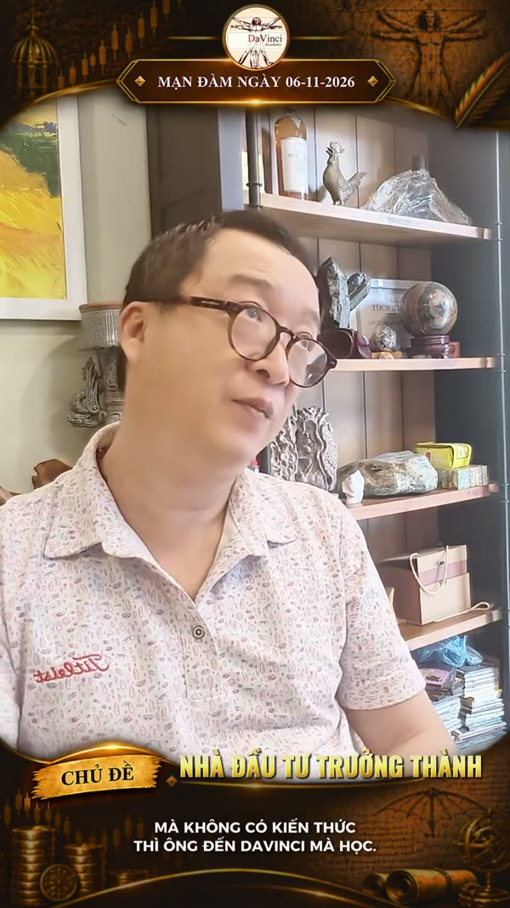
💥 Suốt ngày đi hỏi "hôm nay mua con gì, bán con gì" - Bạn đang đầu tư hay đang đánh bạc? Nếu vẫn còn phải hỏi những câu như vậy, thì dù là giao dịch lâu, bạn cũng chưa phải là một NHÀ ĐẦU TƯ TRƯỞNG T…
NÊN TẬP TRUNG VÀO TRUNG HẠN VÀ DÀI HẠN? Trong đầu tư, nếu quá tập trung vào ngắn hạn, nhà đầu tư rất dễ bị nhiễu loạn thông tin và mất đi tầm nhìn trung - dài hạn. Đến 70% phản ứng của chúng ta t…

Trong đầu tư, "mùa nào thức nấy" thường bị hiểu nhầm thành việc phải nhanh chóng đu theo những đợt hot của thị trường. Nhưng thực chất, cốt lõi của nó là sự tĩnh tâm, để tỏ tường được quy luật chu kỳ …
Sói già đầu tư - Da Vinci Academy
Sói già đầu tư - Da vinci academy · 29509 likeLoại chiến dịch → chủ đề → trang đích
Tầng phễu theo CTA/đích đến: Nhận biết 100% · Cân nhắc 0% · Chuyển đổi 0%. % tính trên số QC, không phải ngân sách hay kết quả chuyển đổi.
Nhận xét: Sói già đầu tư - Da Vinci Academy chủ yếu chạy Tương tác / video view (100% QC), xoáy vào chủ đề Miễn phí / quà tặng và dẫn về Không có link.
Số mẫu có QC mới theo 7 ngày
Nhận xét: Nhịp ra mẫu đều: 1 mẫu mới trong 2 tuần gần nhất, 0 mẫu trong 4 tuần trước đó.
Ưu đãi trích từ caption (số QC)
Không thấy con số ưu đãi.
Mẫu có tín hiệu đáng chú ý · 1 / 1 mẫu
Xếp theo thời gian duy trì và số QC liên quan. Đây là tín hiệu về mức độ duy trì/triển khai, không phải bằng chứng về chi tiêu, tương tác trên bài hay hiệu quả kinh doanh.
Nhận xét: Mẫu có tín hiệu duy trì đáng chú ý nhất đã chạy 11 ngày với 1 QC: Video, chủ đề Miễn phí / quà tặng. 1/1 mẫu đứng đầu là video.

Da Vinci Hồ Chí Minh - Học đầu tư chuyên nghiệp
Da Vinci Hồ Chí Minh - Học đầu tư chuyên nghiệp · 671 likeLoại chiến dịch → chủ đề → trang đích
Tầng phễu theo CTA/đích đến: Nhận biết 50% · Cân nhắc 50% · Chuyển đổi 0%. % tính trên số QC, không phải ngân sách hay kết quả chuyển đổi.
Nhận xét: Da Vinci Hồ Chí Minh - Học đầu tư chuyên nghiệp chủ yếu chạy Traffic → bài viết / PR (50% QC), xoáy vào chủ đề Khác và dẫn về Bài viết / PR · davincihcm-hocdautu.com.
Số mẫu có QC mới theo 7 ngày
Nhận xét: Đang tăng tốc: 2 mẫu mới trong 2 tuần gần nhất, so với 0 mẫu trong 4 tuần trước đó.
Ưu đãi trích từ caption (số QC)
Không thấy con số ưu đãi.
Mẫu có tín hiệu đáng chú ý · 2 / 2 mẫu
Xếp theo thời gian duy trì và số QC liên quan. Đây là tín hiệu về mức độ duy trì/triển khai, không phải bằng chứng về chi tiêu, tương tác trên bài hay hiệu quả kinh doanh.
Nhận xét: Mẫu có tín hiệu duy trì đáng chú ý nhất đã chạy 2 ngày với 1 QC: Nhiều ảnh, chủ đề Webinar / sự kiện / hội thảo.
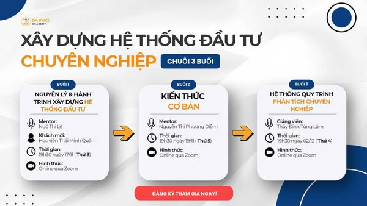
XÂY DỰNG HỆ THỐNG ĐẦU TƯ CHUYÊN NGHIỆP – TỪ TƯ DUY ĐẾN QUY TRÌNH THỰC HÀNH Trong đầu tư, kiến thức là nền tảng. Nhưng để chuyển hóa kiến thức thành năng lực ra quyết định, nhà đầu tư cần nhiều hơn nhữ…
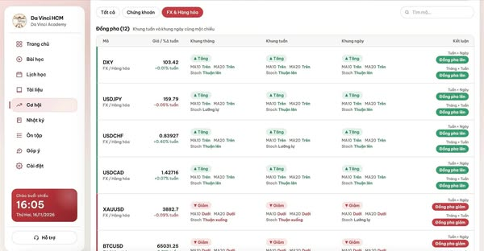
Việc lọc cơ hội đã có công cụ hỗ trợ, giờ học viên chỉ cần xây dựng hệ thống công thức, chiến lược, theo dõi và chiến đấu với thị trường thui! Nhìn qua thui là đã thấy chứng khoán đoạn này khó rồi! 😀 …
Trang đích
Nhận xét: 1 trang đích khác nhau, phần lớn là Bài viết / PR. 0/1 trang web có Meta Pixel (không thấy đo chuyển đổi).
Đặng Trọng Khang
Đặng Trọng Khang · 54 likeLoại chiến dịch → chủ đề → trang đích
Tầng phễu theo CTA/đích đến: Nhận biết 0% · Cân nhắc 0% · Chuyển đổi 100%. % tính trên số QC, không phải ngân sách hay kết quả chuyển đổi.
Nhận xét: Đặng Trọng Khang chủ yếu chạy Lead form trên FB (87% QC), xoáy vào chủ đề Miễn phí / quà tặng và dẫn về Trang Facebook. 100% QC hướng tới hành động chuyển đổi theo CTA/đích đến; cách phân loại này không khẳng định nội dung thiếu vai trò nuôi dưỡng.
Số mẫu có QC mới theo 7 ngày
Nhận xét: Đang tăng tốc: 6 mẫu mới trong 2 tuần gần nhất, so với 2 mẫu trong 4 tuần trước đó.
Ưu đãi trích từ caption (số QC)
Không thấy con số ưu đãi.
Mẫu có tín hiệu đáng chú ý · 8 / 8 mẫu
Xếp theo thời gian duy trì và số QC liên quan. Đây là tín hiệu về mức độ duy trì/triển khai, không phải bằng chứng về chi tiêu, tương tác trên bài hay hiệu quả kinh doanh.
Nhận xét: Mẫu có tín hiệu duy trì đáng chú ý nhất đã chạy 22 ngày với 3 QC: Video, chủ đề Webinar / sự kiện / hội thảo. 4/8 mẫu đứng đầu là video.

⚠️Kiếm Tiền Đã Là Một Việc Rất Khó. Vậy Nên Việc Giữ Và Nhân Bản Tiền Là Một Điều Cực Kỳ Cần Thiết. ❌ Nếu bạn đang không có nhiều kiến thức về đầu tư tài chính? ❌ Bạn …

⚠️Kiếm Tiền Đã Là Một Việc Rất Khó. Vậy Nên Việc Giữ Và Nhân Bản Tiền Là Một Điều Cực Kỳ Cần Thiết. ❌ Nếu bạn đang không có nhiều kiến thức về đầu tư tài chính? ❌ Bạn …

💥 NGƯỜI MỚI ĐẦU TƯ CHỨNG KHOÁN NÊN BẮT ĐẦU TỪ ĐÂU ĐỂ BIẾT “CỔ PHIẾU RẺ HAY ĐẮT” Rất nhiều người mới bước chân vào thị trường chứng khoán thường nhìn vào bảng điện và nghĩ rằng: 👉 Cổ phi…
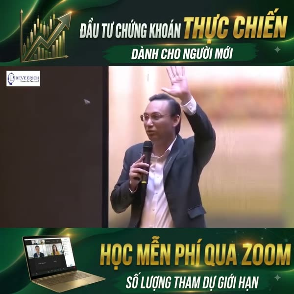
🚀 ĐẦU TƯ CỔ PHIẾU CẦN CHIẾN LƯỢC – TÍCH SẢN CẦN TẦM NHÌN DÀI HẠN! Bạn đang tìm kiếm một phương pháp đầu tư cổ phiếu có định hướng rõ ràng? Bạn muốn xây dựng danh mục đầu tư bài bản thay vì chỉ chạy t…
💥 NGƯỜI MỚI ĐẦU TƯ CHỨNG KHOÁN NÊN BẮT ĐẦU TỪ ĐÂU ĐỂ BIẾT “CỔ PHIẾU RẺ HAY ĐẮT” Rất nhiều người mới bước chân vào thị trường chứng khoán thường nhìn vào bảng điện và nghĩ rằng: 👉 Cổ phi…
🚀 ĐẦU TƯ CỔ PHIẾU CẦN CHIẾN LƯỢC – TÍCH SẢN CẦN TẦM NHÌN DÀI HẠN! Bạn đang tìm kiếm một phương pháp đầu tư cổ phiếu có định hướng rõ ràng? Bạn muốn xây dựng danh mục đầu tư bài bản thay vì chỉ chạy t…
⚠️Kiếm Tiền Đã Là Một Việc Rất Khó. Vậy Nên Việc Giữ Và Nhân Bản Tiền Là Một Điều Cực Kỳ Cần Thiết. ❌ Nếu bạn đang không có nhiều kiến thức về đầu tư tài chính? ❌ Bạn …
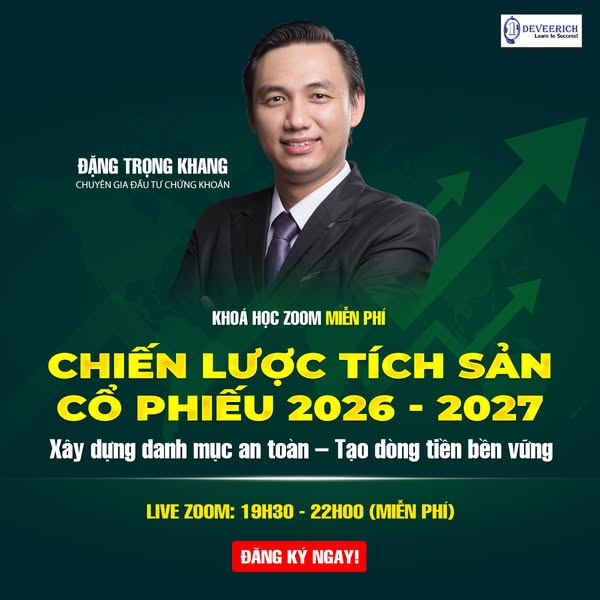
🚀 GIAI ĐOẠN VÀNG ĐỂ “TÍCH SẢN” THÔNG QUA CHỨNG KHOÁN Tích sản không phải là đu trend. Tích sản không phải là đánh theo tin đồn. Tích sản càng không phải là “mua để đó cho yên tâm”. Tích sản l…
Trang đích
Nhận xét: 2 trang đích khác nhau, phần lớn là Landing có form. 1/1 trang web có Meta Pixel (có đo chuyển đổi).

Nguyễn Hữu Trí
Nguyễn Hữu Trí · 1500458 likeLoại chiến dịch → chủ đề → trang đích
Tầng phễu theo CTA/đích đến: Nhận biết 0% · Cân nhắc 4% · Chuyển đổi 96%. % tính trên số QC, không phải ngân sách hay kết quả chuyển đổi.
Nhận xét: Nguyễn Hữu Trí chủ yếu chạy Lead / chuyển đổi trên web (96% QC), xoáy vào chủ đề Khác và dẫn về Landing có form · ayp.vn.
Số mẫu có QC mới theo 7 ngày
Nhận xét: Đang tăng tốc: 25 mẫu mới trong 2 tuần gần nhất, so với 0 mẫu trong 4 tuần trước đó.
Ưu đãi trích từ caption (số QC)
Nhận xét: Ưu đãi chủ lực: margin 5,7%, 9%.
| Margin | 5,7% (1), 9% (1) |
Mẫu có tín hiệu đáng chú ý · 8 / 25 mẫu
Xếp theo thời gian duy trì và số QC liên quan. Đây là tín hiệu về mức độ duy trì/triển khai, không phải bằng chứng về chi tiêu, tương tác trên bài hay hiệu quả kinh doanh.
Nhận xét: Mẫu có tín hiệu duy trì đáng chú ý nhất đã chạy 9 ngày với 1 QC: Ảnh đơn, chủ đề Miễn phí / quà tặng. 4/8 mẫu đứng đầu là video.
"Em chưa biết gì về chứng khoán thì có học đầu tư chứng khoán được không?" Hoàn toàn được. Người mới thậm chí còn thuận lợi hơn người đã đầu tư một thời gian, vì bạn không phải mất công gỡ bỏ những …
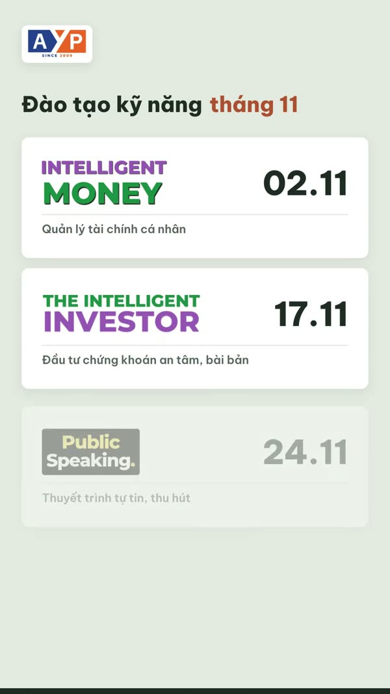
LỊCH ĐÀO TẠO KỸ NĂNG THÁNG 11 1. The Intelligent Investor - Đầu tư chứng khoán bài bản, an tâm lựa chọn cổ phiếu dựa trên triết lý Good Company, Cheap Price (7/11/2026) Đăng ký tại đây: https://link.…

"Cục diện kinh tế thay đổi, tư duy quản lý tiền của chúng ta cũng phải nâng cấp." Sau 8 năm, anh Nguyễn Hữu Trí chính thức đứng lớp trở lại với chương trình Intelligent Money: ⚡ Cập nhật kỹ thuật & …

“Anh ơi, em đi làm đến tối mịt 11h đêm mới về, mà lương cao lắm cũng 15 triệu thôi, không biết tầm nào mới gom đủ tiền đám cưới nữa...” Đó là câu hỏi mình từng hỏi anh Trí khi tìm hiểu về các chương…
"Từ một người ngày xưa tiêu 10 triệu 1 đêm, mình đã phải bán sạch mọi thứ để trả nợ” Giang Nam - Khách hàng chương trình Intelligent Money tại AYP. ----- [Góc thông tin chương trình] Intelligent Mone…
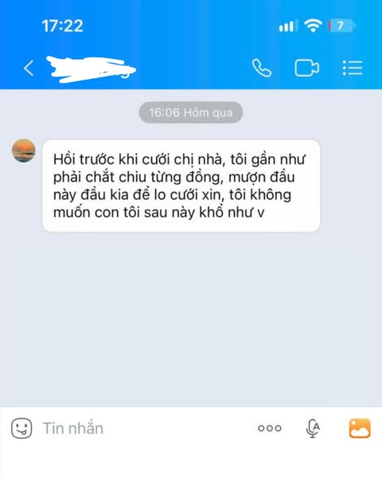
"Hồi trước khi cưới chị nhà, tôi gần như phải chắt chiu từng đồng, mượn đầu này đầu kia để lo cưới xin, tôi không muốn con tôi sau này khổ vậy. Giờ ráng kiếm nhiều tiền cho con học thêm vài môn, chứ t…
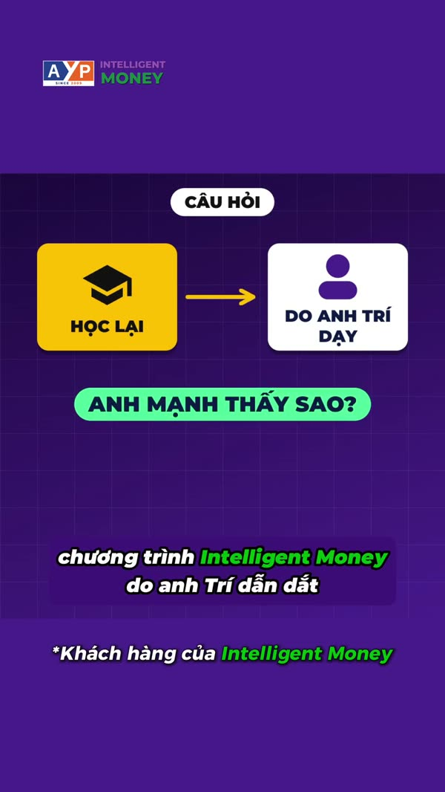
Clip dành cho ai đang có đồng nào "xào hết đồng đó"! --- [Góc giới thiệu chương trình] Intelligent Money - Lương về rồi lại hết? Đã đến lúc học cách giữ tiền ở lại với bạn: https://link.ayp.vn/im-pt-…
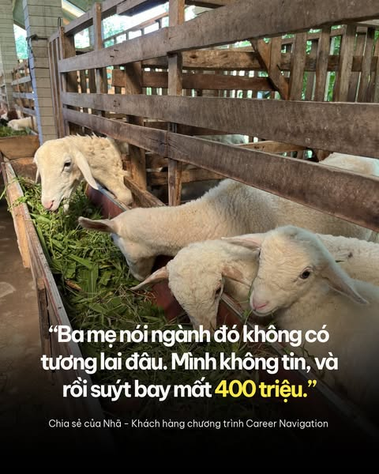
Tôi làm việc cho 1 nông trại bên Nhật và đang dự định về Việt Nam trong 1 - 2 năm tới. Thu nhập của tôi cũng ổn, tích luỹ kha khá rồi nên khi về Việt Nam tôi muốn hiện thực hóa ước mơ là mở một trang …
Trang đích
Nhận xét: 24 trang đích khác nhau, phần lớn là Landing có form. 24/24 trang web có Meta Pixel (có đo chuyển đổi).

Chương trình Quản lý tài chính cá nhân Intelligent Money
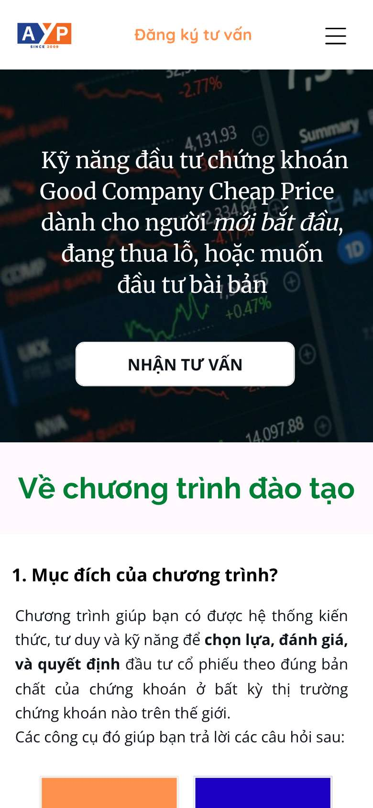
Đầu tư chứng khoán Good Company Cheap Price

Chương trình Quản lý tài chính cá nhân Intelligent Money
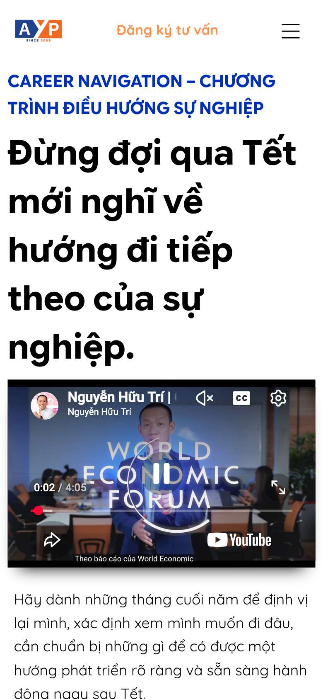
Chương trình Điều hướng sự nghiệp Career Navigation
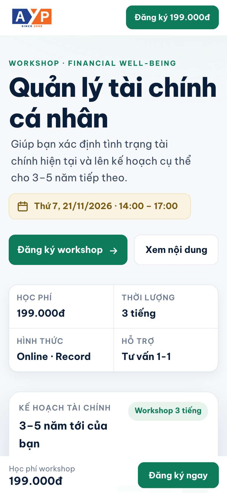
Workshop Quản lý tài chính cá nhân – Financial Well-Being | AYP
Chương trình Điều hướng sự nghiệp Career Navigation
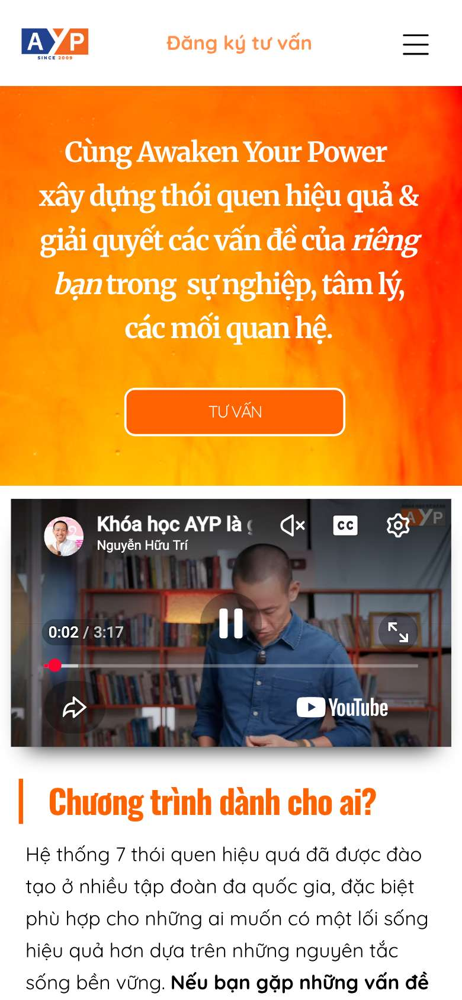
Chương trình Awaken Your Power
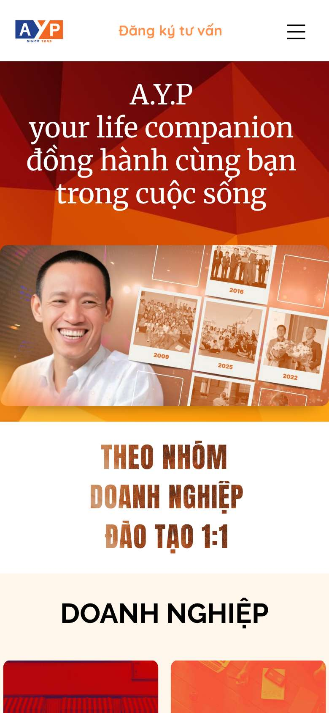
Awaken Your Power - Đồng hành cùng bạn trong cuộc sống
Nguyễn Ngọc Nghĩa - AI Trading, CK phái sinh
Nguyễn Ngọc Nghĩa · 31343 likeLoại chiến dịch → chủ đề → trang đích
Tầng phễu theo CTA/đích đến: Nhận biết 5% · Cân nhắc 0% · Chuyển đổi 95%. % tính trên số QC, không phải ngân sách hay kết quả chuyển đổi.
Nhận xét: Nguyễn Ngọc Nghĩa - AI Trading, CK phái sinh chủ yếu chạy Lead / chuyển đổi trên web (95% QC), xoáy vào chủ đề Nỗi đau thua lỗ và dẫn về Landing có form · svcorp.vn.
Số mẫu có QC mới theo 7 ngày
Nhận xét: Đang tăng tốc: 4 mẫu mới trong 2 tuần gần nhất, so với 5 mẫu trong 4 tuần trước đó.
Ưu đãi trích từ caption (số QC)
Không thấy con số ưu đãi.
Mẫu có tín hiệu đáng chú ý · 8 / 11 mẫu
Xếp theo thời gian duy trì và số QC liên quan. Đây là tín hiệu về mức độ duy trì/triển khai, không phải bằng chứng về chi tiêu, tương tác trên bài hay hiệu quả kinh doanh.
Nhận xét: Mẫu có tín hiệu duy trì đáng chú ý nhất đã chạy 23 ngày với 9 QC: Video, chủ đề Nỗi đau thua lỗ. 1/8 mẫu đứng đầu là video.
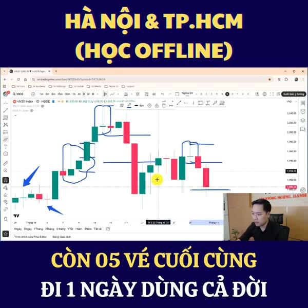
💥 CHƯƠNG TRÌNH: AI TRADING HAPPY 🔥 AI/EA trong Giao dịch tài chính & Chứng khoán phái sinh hạnh phúc. 1. Thời gian: 08h00-17h00 (Học từ Sáng đến Tối). 2. Địa điểm: Học Offline tại Hội trường (Không …

💥 GIAO DỊCH HẠNH PHÚC 🔥 Ứng dụng AI/EA trong Tài chính, Chứng khoán, và Phái sinh để hạnh phúc. 1. Thời gian: 08h00-17h00 (Học 01 ngày từ Sáng đến Tối). 2. Địa điểm: Học Offline tại Hội trường (Khôn…

💥 GIAO DỊCH HẠNH PHÚC 🔥 Ứng dụng AI/EA trong Tài chính, Chứng khoán, và Phái sinh để hạnh phúc. 1. Thời gian: 08h00-17h00 (Học 01 ngày từ Sáng đến Tối). 2. Địa điểm: Học Offline tại Hội trường (Khôn…

💥 GIAO DỊCH HẠNH PHÚC 🔥 Ứng dụng AI/EA trong Tài chính, Chứng khoán, và Phái sinh để hạnh phúc. 1. Thời gian: 08h00-17h00 (Học 01 ngày từ Sáng đến Tối). 2. Địa điểm: Học Offline tại Hội trường (Khôn…

CHƯƠNG TRÌNH: AI TRADING Ứng dụng Trí tuệ nhân tạo (AI) trong Giao dịch tài chính & Chỉ số chứng khoán. 1. Thời gian: 08h00-17h00 (Học từ Sáng đến Tối). 2. Địa điểm: Học Offline tại Hội trường (Khôn…

💥 GIAO DỊCH HẠNH PHÚC 🔥 Ứng dụng AI/EA trong Tài chính, Chứng khoán, và Phái sinh để hạnh phúc. 1. Thời gian: 08h00-17h00 (Học 01 ngày từ Sáng đến Tối). 2. Địa điểm: Học Offline tại Hội trường (Khôn…
💥 GIAO DỊCH HẠNH PHÚC 🔥 Ứng dụng AI/EA trong Tài chính, Chứng khoán, và Phái sinh để hạnh phúc. 1. Thời gian: 08h00-17h00 (Học 01 ngày từ Sáng đến Tối). 2. Địa điểm: Học Offline tại Hội trường (Khôn…

💥 GIAO DỊCH HẠNH PHÚC 🔥 Ứng dụng AI/EA trong Tài chính, Chứng khoán, và Phái sinh để hạnh phúc. 1. Thời gian: 08h00-17h00 (Học 01 ngày từ Sáng đến Tối). 2. Địa điểm: Học Offline tại Hội trường (Khôn…
Trang đích
Nhận xét: 2 trang đích khác nhau, phần lớn là Landing có form. 2/2 trang web có Meta Pixel (có đo chuyển đổi).

Cole Quant VN
Cole Quant VN · 325 likeLoại chiến dịch → chủ đề → trang đích
Tầng phễu theo CTA/đích đến: Nhận biết 0% · Cân nhắc 0% · Chuyển đổi 100%. % tính trên số QC, không phải ngân sách hay kết quả chuyển đổi.
Nhận xét: Cole Quant VN chủ yếu chạy Tin nhắn (100% QC), xoáy vào chủ đề Miễn phí / quà tặng và dẫn về Messenger. 100% QC hướng tới hành động chuyển đổi theo CTA/đích đến; cách phân loại này không khẳng định nội dung thiếu vai trò nuôi dưỡng.
Số mẫu có QC mới theo 7 ngày
Nhận xét: Đang tăng tốc: 9 mẫu mới trong 2 tuần gần nhất, so với 3 mẫu trong 4 tuần trước đó.
Ưu đãi trích từ caption (số QC)
Không thấy con số ưu đãi.
Mẫu có tín hiệu đáng chú ý · 8 / 12 mẫu
Xếp theo thời gian duy trì và số QC liên quan. Đây là tín hiệu về mức độ duy trì/triển khai, không phải bằng chứng về chi tiêu, tương tác trên bài hay hiệu quả kinh doanh.
Nhận xét: Mẫu có tín hiệu duy trì đáng chú ý nhất đã chạy 40 ngày với 1 QC: Ảnh đơn, chủ đề Webinar / sự kiện / hội thảo.

🚀 TUYỂN SINH CHUYÊN ĐỀ QUANT TRADING: PHÂN TÍCH ĐỊNH LƯỢNG THỊ TRƯỜNG TÀI CHÍNH VIỆT NAM VỚI QUANTVN – ĐẦU RA TỰ TIN XÂY DỰNG HỆ THỐNG GIAO DỊCH ĐỊNH LƯỢNG CỦA RIÊNG BẠN 🎯 Mục tiêu: Khóa học dành cho…

🚀 LỘ TRÌNH 12 BUỔI CHINH PHỤC QUANT TRADING & AUTO TRADING – ĐĂNG KÝ NHẬN TƯ VẤN MIỄN PHÍ Bạn có biết, tại các thị trường tài chính phát triển, phần lớn khối lượng giao dịch hiện nay không còn do con…

🚀 ĐÀO TẠO QUANT TRADING – LỘ TRÌNH THỰC CHIẾN CHUẨN QUỸ, TỪ DỮ LIỆU ĐẾN HỆ THỐNG GIAO DỊCH ĐỊNH LƯỢNG Bạn là nhà đầu tư cá nhân, Trader cổ phiếu/phái sinh muốn chuyển từ giao dịch cảm tính sang định …

LỘ TRÌNH 12 BUỔI HỌC QUANT THỰC CHIẾN – TỪ KHAI THÁC DỮ LIỆU ĐẾN XÂY DỰNG TRADING SYSTEM Rất nhiều nhà đầu tư muốn ứng dụng dữ liệu vào giao dịch nhưng chưa biết bắt đầu từ đâu. Trong khi đó, không í…
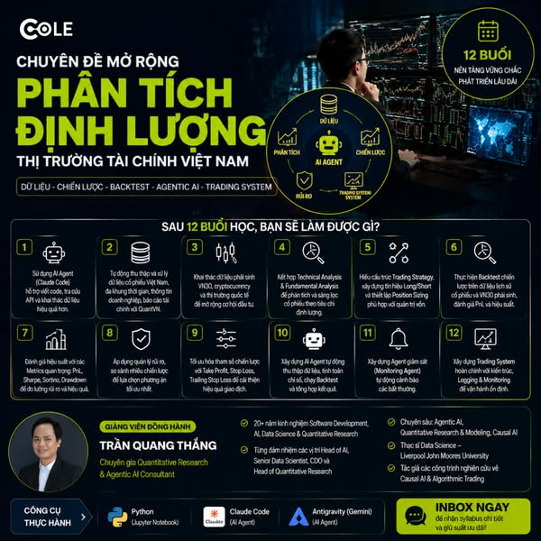
🚀 TUYỂN SINH CHUYÊN ĐỀ QUANT: PHÂN TÍCH ĐỊNH LƯỢNG THỊ TRƯỜNG TÀI CHÍNH VIỆT NAM 📈 Thị trường tài chính ngày càng được vận hành dựa trên dữ liệu, mô hình và tự động hóa. Thay vì chỉ phân tích thủ côn…
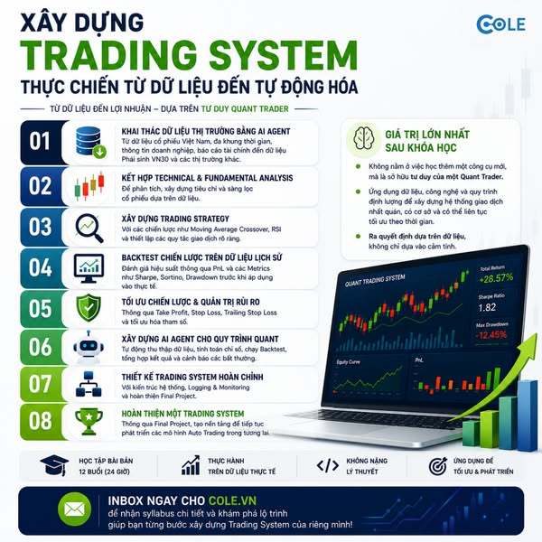
🚀 [GIẢI MÃ] SAU CHUYÊN ĐỀ QUANT TRADING TẠI COLE.VN, BẠN SẼ THỰC SỰ LÀM ĐƯỢC GÌ? Một khóa học Quant không chỉ dừng ở việc hiểu các khái niệm về giao dịch định lượng, mà quan trọng hơn là giúp bạn tự …
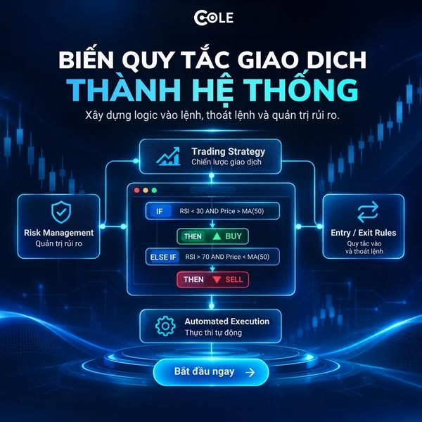
BIẾN CHIẾN LƯỢC GIAO DỊCH THÀNH HỆ THỐNG TỰ ĐỘNG Một chiến lược giao dịch không chỉ cần ý tưởng tốt, mà còn cần những quy tắc rõ ràng để có thể triển khai và đánh giá nhất quán. Bạn đã xác định được…
💻 MUỐN TỰ XÂY TRADING BOT – NHƯNG GẶP KHÓ Ở LOGIC, CODE VÀ KẾT NỐI HỆ THỐNG? Một Trading Bot không chỉ là đoạn code tự động đặt lệnh. Đằng sau đó còn là quá trình xử lý dữ liệu, xây dựng tín hiệu, t…
Bí Mật Đầu Tư Chứng Khoán
Bí Mật Đầu Tư Chứng Khoán · 41 likeLoại chiến dịch → chủ đề → trang đích
Tầng phễu theo CTA/đích đến: Nhận biết 0% · Cân nhắc 100% · Chuyển đổi 0%. % tính trên số QC, không phải ngân sách hay kết quả chuyển đổi.
Nhận xét: Bí Mật Đầu Tư Chứng Khoán chủ yếu chạy Traffic → landing (100% QC), xoáy vào chủ đề Miễn phí / quà tặng và dẫn về Trang thông tin / sản phẩm · dangtrongkhang.vn.
Số mẫu có QC mới theo 7 ngày
Nhận xét: Không có mẫu hoàn toàn mới trong 6 tuần, chỉ duy trì mẫu cũ.
Ưu đãi trích từ caption (số QC)
Không thấy con số ưu đãi.
Mẫu có tín hiệu đáng chú ý · 1 / 1 mẫu
Xếp theo thời gian duy trì và số QC liên quan. Đây là tín hiệu về mức độ duy trì/triển khai, không phải bằng chứng về chi tiêu, tương tác trên bài hay hiệu quả kinh doanh.
Nhận xét: Mẫu có tín hiệu duy trì đáng chú ý nhất đã chạy 1413 ngày với 3 QC: Ảnh đơn, chủ đề Miễn phí / quà tặng.

Trang đích
Nhận xét: 1 trang đích khác nhau, phần lớn là Trang thông tin / sản phẩm. 0/1 trang web có Meta Pixel (không thấy đo chuyển đổi).

Trần Hữu Chung
Trần Hữu Chung · 676 likeLoại chiến dịch → chủ đề → trang đích
Tầng phễu theo CTA/đích đến: Nhận biết 0% · Cân nhắc 0% · Chuyển đổi 100%. % tính trên số QC, không phải ngân sách hay kết quả chuyển đổi.
Nhận xét: Trần Hữu Chung chủ yếu chạy Lead / chuyển đổi trên web (100% QC), xoáy vào chủ đề Giá / học phí / ưu đãi và dẫn về Landing có form · fialda.com.vn. 100% QC hướng tới hành động chuyển đổi theo CTA/đích đến; cách phân loại này không khẳng định nội dung thiếu vai trò nuôi dưỡng.
Số mẫu có QC mới theo 7 ngày
Nhận xét: Nhịp ra mẫu đều: 1 mẫu mới trong 2 tuần gần nhất, 0 mẫu trong 4 tuần trước đó.
Ưu đãi trích từ caption (số QC)
Không thấy con số ưu đãi.
Mẫu có tín hiệu đáng chú ý · 1 / 1 mẫu
Xếp theo thời gian duy trì và số QC liên quan. Đây là tín hiệu về mức độ duy trì/triển khai, không phải bằng chứng về chi tiêu, tương tác trên bài hay hiệu quả kinh doanh.
Nhận xét: Mẫu có tín hiệu duy trì đáng chú ý nhất đã chạy 1 ngày với 1 QC: Video, chủ đề Giá / học phí / ưu đãi. 1/1 mẫu đứng đầu là video.

Trang đích
Nhận xét: 1 trang đích khác nhau, phần lớn là Landing có form. 1/1 trang web có Meta Pixel (có đo chuyển đổi).
Chứng khoán LPS
Chứng khoán LPS · 1951 likeLoại chiến dịch → chủ đề → trang đích
Tầng phễu theo CTA/đích đến: Nhận biết 0% · Cân nhắc 0% · Chuyển đổi 100%. % tính trên số QC, không phải ngân sách hay kết quả chuyển đổi.
Nhận xét: Chứng khoán LPS chủ yếu chạy Cài app (100% QC), xoáy vào chủ đề Miễn phí / quà tặng và dẫn về App Store. 100% QC hướng tới hành động chuyển đổi theo CTA/đích đến; cách phân loại này không khẳng định nội dung thiếu vai trò nuôi dưỡng.
Số mẫu có QC mới theo 7 ngày
Nhận xét: Đang tăng tốc: 22 mẫu mới trong 2 tuần gần nhất, so với 4 mẫu trong 4 tuần trước đó.
Ưu đãi trích từ caption (số QC)
Nhận xét: Ưu đãi chủ lực: quà tiền 80K, 16 triệu; tặng cổ phiếu STB, LPB; phí 0%; margin 13,5%, 9,52%.
| Tiền / quà | 80K (124), 16 triệu (112), 1.2 triệu (67), 7 triệu (46), 100K (24), 5.48774 triệu (6) |
| Cổ phiếu tặng | STB (104), LPB (16) |
| Phí | 0% (251), 0,15% (12) |
| Margin | 13,5% (12), 9,52% (3), 14% (3) |
Mẫu có tín hiệu đáng chú ý · 8 / 27 mẫu
Xếp theo thời gian duy trì và số QC liên quan. Đây là tín hiệu về mức độ duy trì/triển khai, không phải bằng chứng về chi tiêu, tương tác trên bài hay hiệu quả kinh doanh.
Nhận xét: Mẫu có tín hiệu duy trì đáng chú ý nhất đã chạy 37 ngày với 66 QC: Ảnh đơn, chủ đề Miễn phí / quà tặng, 2 biến thể. 1/8 mẫu đứng đầu là video.


5 ĐẶC QUYỀN TRAO TAY TẢI APP NHẬN NGAY 16 TRIỆU! (*) Bỏ 0đ chi phí, rước ngay bộ đặc quyền VVIP trị giá đến 16.000.000đ nạp thẳng vào tài khoản LOOP by LPS! Cơ hội có 1-0-2 để sở hữu trọn bộ "vũ khí…
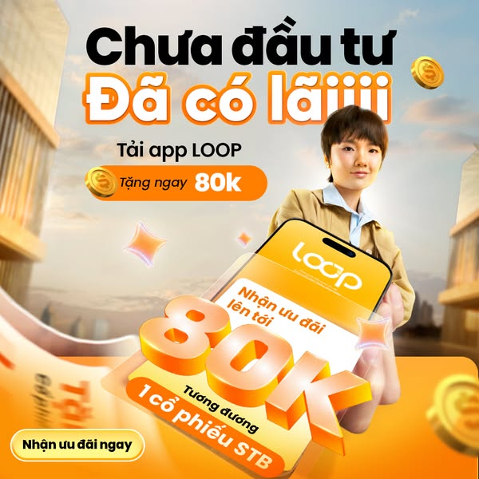
🔥 CHƯA ĐẦU TƯ ĐÃ CÓ LÃI TẢI APP LOOP – TẶNG NGAY CỔ PHIẾU STB! 🔥 Cần gì chờ thị trường điểm xanh mới có lời? Ngay khi tải app và mở tài khoản tại LOOP by LPS, bạn đã chắc chắn bỏ túi khoản lãi đầu ti…

🔥 TẢI 1 APP – TẶNG 3 QUÀ KHỦNG! 🔥 Cơ hội có 1-0-2 dành riêng cho nhà đầu tư mới! Không cần thao tác phức tạp, chỉ cần 1 lần tải app LOOP by LPS, bạn sẽ kích hoạt ngay bộ ba đặc quyền "khó chối từ": …


🔥 TẢI APP 0Đ – NHẬN TỚI 100.000Đ 🔥 Cơ hội đặc quyền chào mừng nhà đầu tư mới với phần quà khởi động cực hot khi mở tài khoản chứng khoán trên ứng dụng LOOP by LPS: 🎁 Tặng ngay phần quà trị giá lên …

⚡TRẢI NGHIỆM MƯỢT MÀ – NHẬN QUÀ BÙNG NỔ! Một nền tảng đầu tư hoàn hảo không chỉ cần mượt mà ở tốc độ đặt lệnh, mà phải trao cho bạn lợi thế tài chính vượt trội ngay từ ngày đầu bước vào cuộc chơi. L…
📖 KIẾN THỨC LOOP MIỄN PHÍ BẠN LÝ TRÍ ĐẦU TƯ 📖 Thiếu kiến thức và chưa quen nhịp thị trường là nguyên nhân hàng đầu khiến danh mục của bạn mãi dậm chân tại chỗ. Đừng loay hoay tự mày mò khi đã có lộ …

🎓 HỌC - HÀNH THÀNH TÀI ĐẦU TƯ THẬT BÀI BẢN F0 mới gia nhập thường dễ rơi vào cảnh bỡ ngỡ, mua đâu lỗ đấy vì thiếu kiến thức nền tảng và chưa quen nhịp biến động của bảng điện. Đừng đem tiền thật ra …

🚀 GÌ CŨNG MIỄN PHÍ ĐẦU TƯ CHẲNG LO CHI 🚀 Đừng mãi trade mà bỏ quên mất kẻ ""gặm nhấm"" thầm lặng: Phí giao dịch và lãi vay margin. Đừng để chi phí kéo lùi biên độ lợi nhuận của bạn thêm một phút với …
Trang đích
Nhận xét: 2 trang đích khác nhau, phần lớn là App Store.

DNSE
Công ty Cổ phần Chứng khoán DNSE · 22338 likeLoại chiến dịch → chủ đề → trang đích
Tầng phễu theo CTA/đích đến: Nhận biết 30% · Cân nhắc 65% · Chuyển đổi 5%. % tính trên số QC, không phải ngân sách hay kết quả chuyển đổi.
Nhận xét: DNSE chủ yếu chạy Traffic → bài viết / PR (65% QC), xoáy vào chủ đề Webinar / sự kiện / hội thảo và dẫn về Bài viết / PR · futuretechsummit2026.dnse.com.vn. Có QC ở đủ 3 tầng phễu theo CTA/đích đến; dữ liệu không cho biết đối tượng nhắm chọn hay hành trình thực tế sau cú nhấp.
Số mẫu có QC mới theo 7 ngày
Nhận xét: Đang tăng tốc: 13 mẫu mới trong 2 tuần gần nhất, so với 4 mẫu trong 4 tuần trước đó.
Ưu đãi trích từ caption (số QC)
Nhận xét: Ưu đãi chủ lực: quà tiền 5 triệu.
| Tiền / quà | 5 triệu (1) |
Mẫu có tín hiệu đáng chú ý · 8 / 17 mẫu
Xếp theo thời gian duy trì và số QC liên quan. Đây là tín hiệu về mức độ duy trì/triển khai, không phải bằng chứng về chi tiêu, tương tác trên bài hay hiệu quả kinh doanh.
Nhận xét: Mẫu có tín hiệu duy trì đáng chú ý nhất đã chạy 40 ngày với 1 QC: Ảnh đơn, chủ đề Khác. 1/8 mẫu đứng đầu là video.

👩💻 ĐẦU TƯ ĐƠN GIẢN VỚI DNSE MCP, GIAO VIỆC CHO AI CHỈ BẰNG VÀI CÂU LỆNH Chỉ cần mô tả điều bạn muốn thực hiện, DNSE MCP sẽ kết nối AI với dữ liệu và công cụ đầu tư phù hợp để hỗ trợ bạn toàn trình …
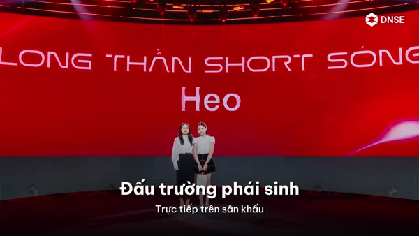
🚀 DNSE FUTURE TECH SUMMIT 2026 SẮP TRỞ LẠI! Tiếp nối thành công của mùa đầu tiên, DNSE Future Tech Summit 2026 chính thức trở lại với chủ đề “Markets IQ: Level Up Your Investment”, mở ra hành trình n…

KẾT NỐI AI VỚI DỮ LIỆU THỊ TRƯỜNG REAL-TIME QUA DNSE MCP Muốn dùng AI để đọc tin, lọc mã và theo dõi dòng tiền nhanh hơn nhưng lo câu trả lời thiếu dữ liệu cập nhật? DNSE MCP giúp kết nối AI với dữ l…

DNSE MCP – KIỂM THỬ CHIẾN THUẬT ĐẦU TƯ CÙNG AI Đã có ý tưởng giao dịch nhưng ngại thiết lập và kiểm thử thủ công? DNSE MCP giúp kết nối AI với công cụ Kiểm thử chiến thuật của DNSE để hỗ trợ bạn: 📌 Ch…

🔥 LỘ DIỆN 10 CAO THỦ TRANH TÀI TẠI CHUNG KẾT LIVE BATTLE – LƯỚT SÓNG PHÁI SINH 2026! Sau 10 trận đấu đầy kịch tính, những gương mặt xuất sắc nhất sẽ hội tụ tại Chung kết Live Battle, trực tiếp tranh …
♟️ LỘ DIỆN DÀN DIỄN GIẢ HÀNG ĐẦU TẠI DNSE FUTURE TECH SUMMIT 2026! Trong kỷ nguyên dữ liệu và AI, làm thế nào để biến thông tin thành lợi thế, lựa chọn chiến lược phù hợp và đưa ra những quyết định đ…
💥DNSE FUTURE TECH SUMMIT 2026 - MARKETS IQ: LEVEL UP YOUR INVESTMENT🚀 Khi công nghệ và dữ liệu trở thành lợi thế, đâu là chìa khóa để nâng tầm chiến lược đầu tư? Ngày 20/11/2026, DNSE Future Tech Su…

LỢI SUẤT “CẤT CÁNH” - KỲ HẠN 1 THÁNG LÊN TỚI 7.6%/NĂM Thị trường liên tục có những chuyển biến khó lường, đâu là điểm trú ẩn để dòng tiền vẫn đều đặn sinh lời với lợi suất cao? Với ưu đãi lần đầu …
Trang đích
Nhận xét: 8 trang đích khác nhau, phần lớn là Bài viết / PR. 1/7 trang web có Meta Pixel (có đo chuyển đổi).

DNSE MCP

Future Tech Summit 2026

Future Tech Summit 2026

Future Tech Summit 2026
DNSE Future Tech Summit 2026: Level Up Your Investment

Future Tech Summit 2026
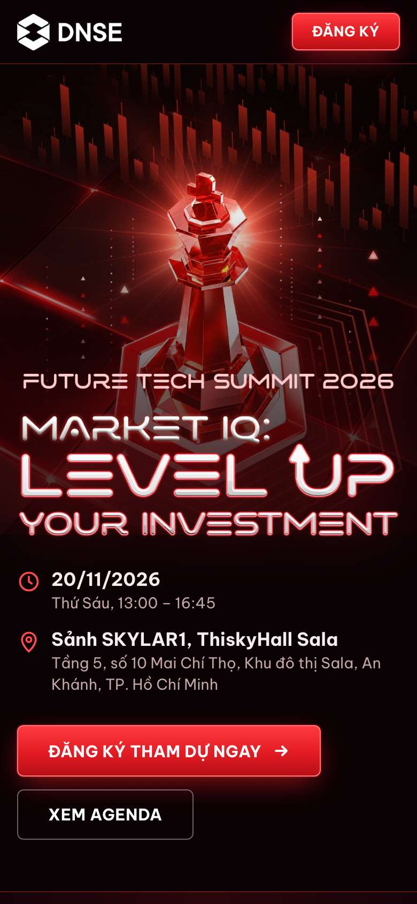
Future Tech Summit 2026

Future Tech Summit 2026
CFA - SAPP Academy
CFA - SAPP Academy Học viện đào tạo hàng đầu Việt Nam · 17386 likeLoại chiến dịch → chủ đề → trang đích
Tầng phễu theo CTA/đích đến: Nhận biết 23% · Cân nhắc 11% · Chuyển đổi 66%. % tính trên số QC, không phải ngân sách hay kết quả chuyển đổi.
Nhận xét: CFA - SAPP Academy chủ yếu chạy Tin nhắn (37% QC), xoáy vào chủ đề Người mới / F0 và dẫn về Messenger. Có QC ở đủ 3 tầng phễu theo CTA/đích đến; dữ liệu không cho biết đối tượng nhắm chọn hay hành trình thực tế sau cú nhấp.
Số mẫu có QC mới theo 7 ngày
Nhận xét: Đang tăng tốc: 15 mẫu mới trong 2 tuần gần nhất, so với 10 mẫu trong 4 tuần trước đó.
Ưu đãi trích từ caption (số QC)
Nhận xét: Ưu đãi chủ lực: quà tiền 35 triệu.
| Tiền / quà | 35 triệu (1) |
Mẫu có tín hiệu đáng chú ý · 8 / 26 mẫu
Xếp theo thời gian duy trì và số QC liên quan. Đây là tín hiệu về mức độ duy trì/triển khai, không phải bằng chứng về chi tiêu, tương tác trên bài hay hiệu quả kinh doanh.
Nhận xét: Mẫu có tín hiệu duy trì đáng chú ý nhất đã chạy 125 ngày với 1 QC: Ảnh đơn, chủ đề Hứa hẹn lợi nhuận / thu nhập. 1/8 mẫu đứng đầu là video.

💫 LỘ TRÌNH ĐÀO TẠO CFA TOÀN DIỆN TẠI SAPP - GIẢI PHÁP CHINH PHỤC CFA TỪ CON SỐ 0 Bạn đang có dự định theo đuổi việc học CFA nhưng vẫn “chùn bước” bởi: ❓ Không có nền tảng tài chính hoặc kỹ năng tiến…

BẮT ĐẦU HÀNH TRÌNH CFA TỪ CON SỐ 0 - TẠI SAO KHÔNG? 🚀 Đừng để xuất phát điểm trái ngành làm rào cản bước tiến sự nghiệp Tài chính của bạn! 💡 Tại SAPP Academy, lộ trình 4 bước chuẩn hóa sẽ giúp…
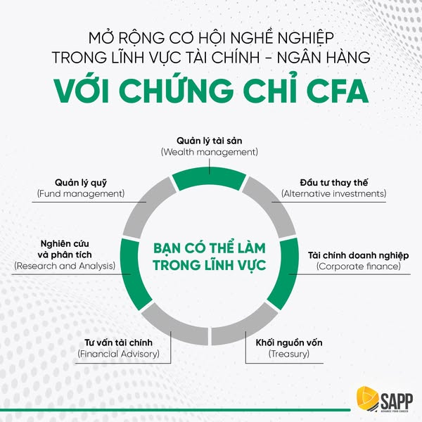
👉 Theo dự báo của Navigos Group, nhu cầu nhân lực ngành Tài chính - Ngân hàng tiếp tục tăng cao, đặc biệt giai đoạn 2020 - 2025 có thể tăng 20% mỗi năm. 👉 Trung bình một nhân sự sở hữu CFA có thể chạm…
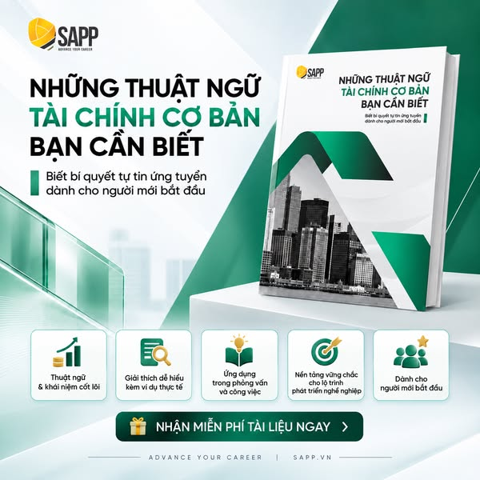
[TẢI MIỄN PHÍ EBOOK] NẮM VỮNG CÁC THUẬT NGỮ TÀI CHÍNH CƠ BẢN - 6 THÁNG TẠO LỢI THẾ TRƯỚC MÙA INTERNSHIP TÀI CHÍNH - ĐẦU TƯ! Bạn đang là sinh viên năm 3 ngành Tài chính - Ngân hàng và chuẩn bị bước và…

💫 LỘ TRÌNH ĐÀO TẠO CFA TOÀN DIỆN TẠI SAPP - GIẢI PHÁP CHINH PHỤC CFA TỪ CON SỐ 0 Bạn đang có dự định theo đuổi việc học CFA nhưng vẫn “chùn bước” bởi: ❓ Không có nền tảng tài chính hoặc kỹ năng tiến…
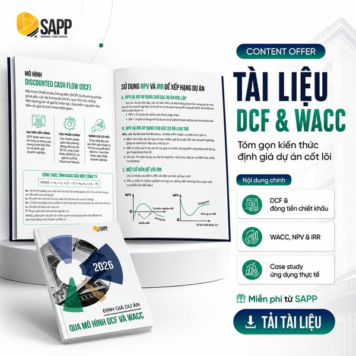
THÀNH THẠO ĐỊNH GIÁ DỰ ÁN - NĂNG LỰC CỐT LÕI CỦA NHÂN SỰ TÀI CHÍNH - ĐẦU TƯ HIỆN NAY 👉 Tải miễn phí Bộ tài liệu “Định giá dự án qua mô hình DCF & WACC”: https://hubs.ly/Q04x6wW90 Trong định giá dự á…
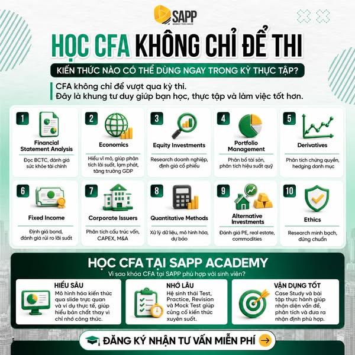
HỌC CFA KHÔNG CHỈ ĐỂ THI: KIẾN THỨC NÀO CÓ THỂ DÙNG NGAY TRONG KỲ THỰC TẬP? >>> Trang bị kiến thức CFA thực chiến cùng SAPP tại: https://hubs.ly/Q04B_v6p0 Nếu định hướng Equity Research, Investment, …
TRỌN BỘ CÔNG THỨC CFA LEVEL 1 MIỄN PHÍ - LƯU LẠI ÔN THI 📚 Học CFA mà công thức nào nhìn cũng thấy quen, đến lúc làm bài lại… quên sạch? CFA Level 1 có tới 10 môn học, với hàng loạt công thức cần ghi…
Trang đích
Nhận xét: 12 trang đích khác nhau, phần lớn là Landing có form. 11/11 trang web có Meta Pixel (có đo chuyển đổi).

Facebook - Đăng nhập hoặc đăng ký

Khóa học CFA tại SAPP: Giải pháp toàn diện giúp bạn chinh phục kỳ thi CFA ngay từ lần đầu
Khoá học CFA Blended

Khoá học CFA Blended
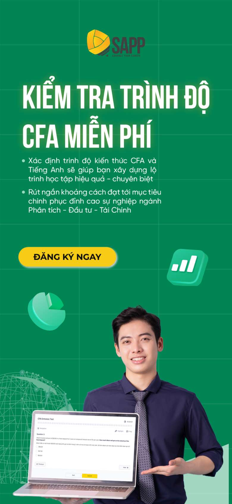
Kiểm tra năng lực đầu vào CFA MIỄN PHÍ - SAPP Academy
Khoá học CFA Blended

AI đã làm được phân tích BCTC, cổ phiếu, vậy chuyên viên phân tích còn làm gì?
Khoá học CFA Blended
CFA Online - SAPP Academy
CFA Online - SAPP Academy Học viện đào tạo hàng đầu Việt Nam · 13956 likeLoại chiến dịch → chủ đề → trang đích
Tầng phễu theo CTA/đích đến: Nhận biết 17% · Cân nhắc 50% · Chuyển đổi 33%. % tính trên số QC, không phải ngân sách hay kết quả chuyển đổi.
Nhận xét: CFA Online - SAPP Academy chủ yếu chạy Traffic → landing (50% QC), xoáy vào chủ đề Miễn phí / quà tặng và dẫn về Trang thông tin / sản phẩm · sapp.edu.vn. Có QC ở đủ 3 tầng phễu theo CTA/đích đến; dữ liệu không cho biết đối tượng nhắm chọn hay hành trình thực tế sau cú nhấp.
Số mẫu có QC mới theo 7 ngày
Nhận xét: Đã chững lại: không có mẫu mới trong 2 tuần, trước đó có 4 mẫu.
Ưu đãi trích từ caption (số QC)
Không thấy con số ưu đãi.
Mẫu có tín hiệu đáng chú ý · 6 / 6 mẫu
Xếp theo thời gian duy trì và số QC liên quan. Đây là tín hiệu về mức độ duy trì/triển khai, không phải bằng chứng về chi tiêu, tương tác trên bài hay hiệu quả kinh doanh.
Nhận xét: Mẫu có tín hiệu duy trì đáng chú ý nhất đã chạy 47 ngày với 1 QC: Chỉ chữ, chủ đề Miễn phí / quà tặng. 2/6 mẫu đứng đầu là video.
🔥 Chỉ còn 20 SLOTS miễn phí trong tháng - học thử CFA Online với Case Study thực tế trên nền tảng LMS Pro hiện đại của SAPP. Học thử Level 1&2, làm quen hệ thống video bài giảng giúp học viên Pass To…
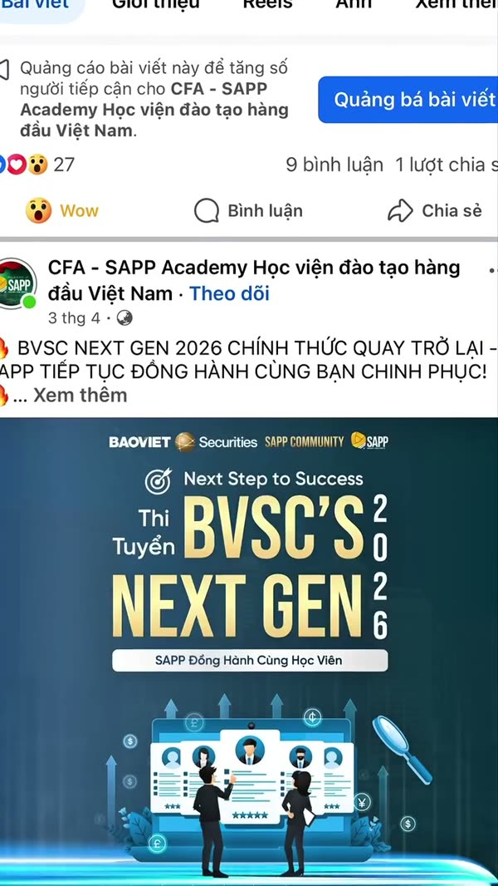
SAPP Academy không chỉ giúp bạn PASS CFA mà còn giúp bạn "lãi" cả một sự nghiệp: ✅ 100% Giảng viên là CFA Charterholders, CFO, chuyên gia đầu ngành. ✅ Lãi Quan hệ: Networking chất lượng qua các buổi E…
1 link duy nhất: 👉 https://hubs.ly/Q04rNxPV0 Học thử MIỄN PHÍ CFA Online Combo 3 Levels trên LMS Pro với 100% giảng viên CFA Charterholder 👉 Dành cho những ai muốn bắt đầu hành trình chinh phục CFA nh…
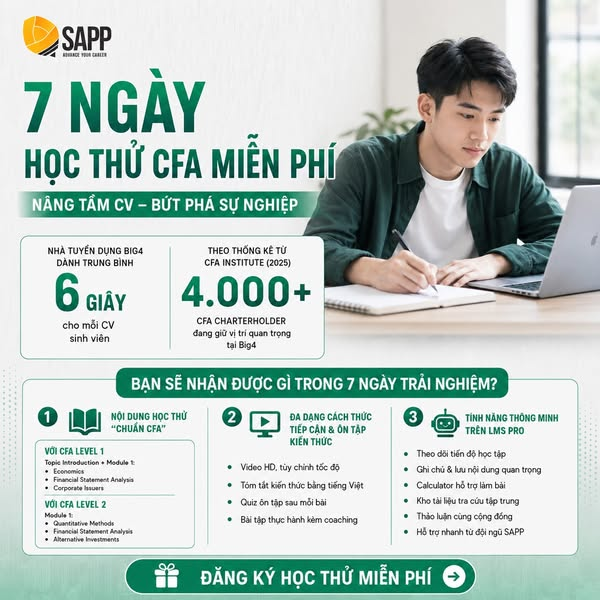
🔥 Nhà tuyển dụng Big4 dành trung bình 6 giây cho mỗi CV sinh viên. CV của bạn đã đủ để cạnh tranh với hơn 1000 ứng viên? 💼 Theo thống kê từ CFA Institute (2025), có đến hơn 4000 CFA Charterholder đan…

“Người ta có nhắc về việc có CFA là một ưu thế” - BÍ QUYẾT ĐẠT OFFER QUẢN LÝ RỦI RO TẠI SỞ GIAO DỊCH HÀNG HÓA MXV NGAY LẦN ĐẦU ỨNG TUYỂN CỦA MỘT SINH VIÊN TAY NGANG. Nguyễn Hải Đăng - Top Score 1830…
🔰 HỌC THỬ CFA ONLINE MIỄN PHÍ COMBO 3 LEVELS - TRẢI NGHIỆM CHƯƠNG TRÌNH THẬT TRƯỚC KHI BẮT ĐẦU Sinh viên Tài chính đang tìm cơ hội thực tập - ngoài GPA, CV của bạn đã có gì để nổi bật? Chỉ còn chưa đ…
Trang đích
Nhận xét: 4 trang đích khác nhau, phần lớn là Trang thông tin / sản phẩm. 0/3 trang web có Meta Pixel (không thấy đo chuyển đổi).
ACCA - SAPP Academy
ACCA - SAPP Academy Học viện Đào tạo ACCA Hàng đầu Việt Nam · 35096 likeLoại chiến dịch → chủ đề → trang đích
Tầng phễu theo CTA/đích đến: Nhận biết 30% · Cân nhắc 41% · Chuyển đổi 30%. % tính trên số QC, không phải ngân sách hay kết quả chuyển đổi.
Nhận xét: ACCA - SAPP Academy chủ yếu chạy Tương tác / video view (30% QC), xoáy vào chủ đề Miễn phí / quà tặng và dẫn về Trang Facebook. Có QC ở đủ 3 tầng phễu theo CTA/đích đến; dữ liệu không cho biết đối tượng nhắm chọn hay hành trình thực tế sau cú nhấp.
Số mẫu có QC mới theo 7 ngày
Nhận xét: Đang tăng tốc: 29 mẫu mới trong 2 tuần gần nhất, so với 0 mẫu trong 4 tuần trước đó.
Ưu đãi trích từ caption (số QC)
Nhận xét: Ưu đãi chủ lực: quà tiền 50 triệu, 1 triệu.
| Tiền / quà | 50 triệu (1), 1 triệu (1) |
Mẫu có tín hiệu đáng chú ý · 8 / 30 mẫu
Xếp theo thời gian duy trì và số QC liên quan. Đây là tín hiệu về mức độ duy trì/triển khai, không phải bằng chứng về chi tiêu, tương tác trên bài hay hiệu quả kinh doanh.
Nhận xét: Mẫu có tín hiệu duy trì đáng chú ý nhất đã chạy 78 ngày với 2 QC: Ảnh đơn, chủ đề Miễn phí / quà tặng.

ACCA - “Tấm Passport Thông Hành” Giúp Nhân Sự Trong Thế Giới Kế, Kiểm, Tài Chính Thăng Tiến Thần Tốc Sở hữu trong tay “bảo chứng chuyên môn” đầy quyền lực #ACCA, bạn sẽ có cơ hội: 🔥 Nắm đặc quyền ưu…

🚀 Bệ phóng săn vé Big4 & MNCs: Học thử ACCA Online hoàn toàn miễn phí trên nền tảng đào tạo LMS Pro chuẩn quốc tế của SAPP. 👉 Giữ suất học thử 0Đ ngay: https://hubs.ly/Q04z-7BZ0 ---------------------…

💥 [GIVEAWAY MIỄN PHÍ] CẨM NANG TRỌN BỘ KIẾN THỨC FA/F3 ACCA (BẢN DỊCH TIẾNG VIỆT 2026) 👉 Tạm biệt nỗi sợ Tiếng Anh chuyên ngành - Làm chủ môn F3 ngay từ Năm 1 & Năm 2! Bạn bối rối vì rào cản từ vựng T…
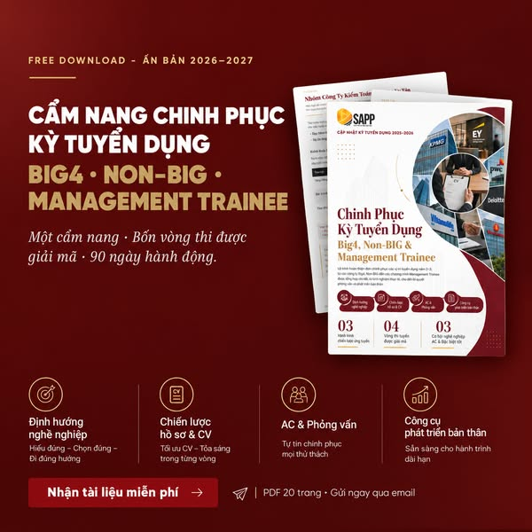
[GIVEAWAY] Ở ĐÂY CÓ FULL CẨM NANG SĂN VÉ BIG4, NON-BIG & MANAGEMENT TRAINEE! 👉 Tải trọn bộ PDF 20 trang miễn phí: https://hubs.ly/Q04zpddB0 Internship Season đang tới rất gần - Bạn đã sẵn sàng "xử đ…

📊📊📊 Từ BCTC đến đề xuất kinh doanh: sinh viên cần chuẩn bị năng lực gì cho FP&A Intern? 👇Hãy để SAPP gửi bạn Case Vietjet - luyện tập khả năng hiểu mô hình, chọn chỉ số, so sánh và đề xuất dựa trên s…
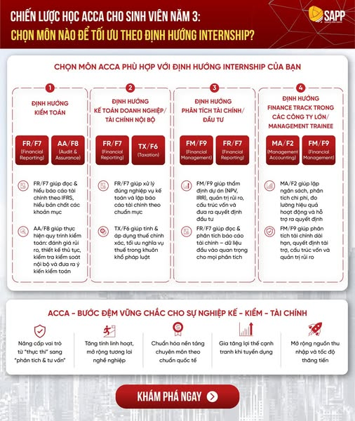
🎯 Chiến Lược Học ACCA Cho Sinh Viên Năm 3: Chọn Môn Nào Để Tối Ưu Theo Định Hướng Internship? Đến năm 3, khi cuộc đua internship bắt đầu nóng lên, khoảng cách giữa các ứng viên không còn nằm ở GPA mà…
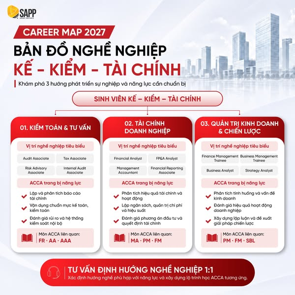
2K6, 2K7 HỌC KẾ – KIỂM – TÀI CHÍNH: MUỐN VÀO BIG 4, MNC HAY MANAGEMENT TRAINEE CẦN CHUẨN BỊ GÌ? 👉 Nhận tư vấn miễn phí lộ trình ACCA cá nhân hóa theo định hướng nghề nghiệp tại: https://hubs.ly/Q04Dyt…
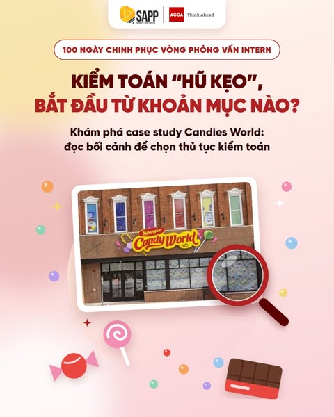
🍬🍬🍬 Đi phỏng vấn Audit Intern, nhà tuyển dụng bảo bạn đưa ra một ví dụ và phân tích, bạn sẽ chọn case nào? 👇Vậy để SAPP gửi bạn case Candies World kèm cách phân tích nhé👇
Trang đích
Nhận xét: 21 trang đích khác nhau, phần lớn là Bài viết / PR. 15/20 trang web có Meta Pixel (có đo chuyển đổi).
Facebook - Đăng nhập hoặc đăng ký

Case study phỏng vấn FP&A Intern: Bóc case Vietjet 4 bước
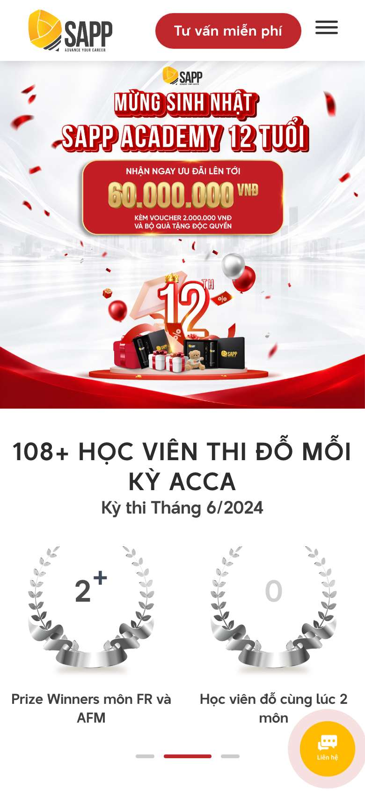
Khoá học ACCA Blended

Học Thử ACCA Online Miễn Phí Trên Nền Tảng Mới Của SAPP Academy
Khoá học ACCA Blended
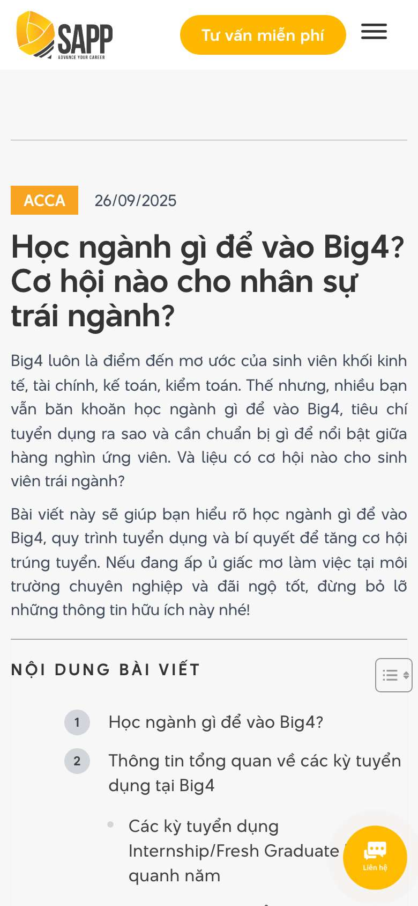
Học ngành gì để vào Big4? Học trái ngành có được apply?
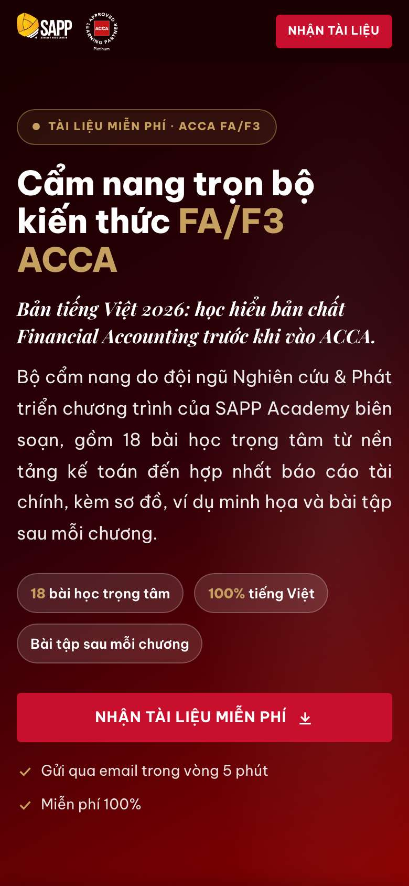
Cẩm Nang Trọn Bộ Kiến Thức FA/F3 - Bản Dịch Tiếng Việt 2026
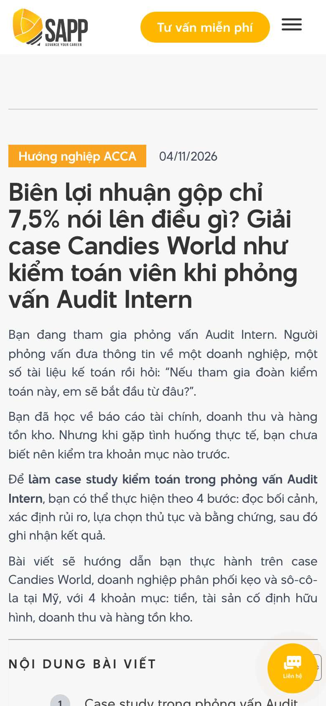
Case study phỏng vấn Audit Intern: Giải case Candies World
CMA - SAPP Academy
CMA - SAPP Academy Học viện Đào tạo CMA Hàng đầu Việt Nam · 5211 likeLoại chiến dịch → chủ đề → trang đích
Tầng phễu theo CTA/đích đến: Nhận biết 25% · Cân nhắc 40% · Chuyển đổi 35%. % tính trên số QC, không phải ngân sách hay kết quả chuyển đổi.
Nhận xét: CMA - SAPP Academy chủ yếu chạy Traffic → landing (37% QC), xoáy vào chủ đề Miễn phí / quà tặng và dẫn về Trang thông tin / sản phẩm · sapp.edu.vn. Có QC ở đủ 3 tầng phễu theo CTA/đích đến; dữ liệu không cho biết đối tượng nhắm chọn hay hành trình thực tế sau cú nhấp.
Số mẫu có QC mới theo 7 ngày
Nhận xét: Đang tăng tốc: 36 mẫu mới trong 2 tuần gần nhất, so với 10 mẫu trong 4 tuần trước đó.
Ưu đãi trích từ caption (số QC)
Nhận xét: Ưu đãi chủ lực: quà tiền 23 triệu, 13 triệu.
| Tiền / quà | 23 triệu (1), 13 triệu (1) |
Mẫu có tín hiệu đáng chú ý · 8 / 46 mẫu
Xếp theo thời gian duy trì và số QC liên quan. Đây là tín hiệu về mức độ duy trì/triển khai, không phải bằng chứng về chi tiêu, tương tác trên bài hay hiệu quả kinh doanh.
Nhận xét: Mẫu có tín hiệu duy trì đáng chú ý nhất đã chạy 13 ngày với 3 QC: Video, chủ đề Chứng chỉ / sự nghiệp, 2 biến thể. 3/8 mẫu đứng đầu là video.
Muốn làm FP&A ngay khi ra trường: Sinh viên năm 4 cần chuẩn bị gì? Với nhiều sinh viên năm cuối ngành Tài chính, FP&A luôn là "vùng đất hứa" đầy hấp dẫn nhưng cũng không thiếu thách thức. Thành cô…
CHINH PHỤC NHÀ TUYỂN DỤNG: SINH VIÊN KẾ TOÁN - KIỂM TOÁN - TÀI CHÍNH CẦN CHUẨN BỊ GÌ TỪ SỚM? Trong các kỳ tuyển dụng, doanh nghiệp không chỉ cần một sinh viên có bằng cấp và kiến thức chuyên ngành. …
🎯 CHỈ TỪ 3 THÁNG - XÂY DỰNG NỀN TẢNG TƯ DUY FP&A CHO NGƯỜI ĐI LÀM 👉 Đăng ký tư vấn khóa FP&A Online: https://hubs.ly/Q04z0qQm0 Phân tích được số liệu chưa đồng nghĩa với làm tốt FP&A. Một người làm …
Kế Toán Chuyển Hướng Tài Chính: Học CMA Hoa Kỳ Hay CPA Úc Sẽ Phù Hợp Hơn? ➤ Tất cả thông tin về khoá học CMA có tại: https://hubs.ly/Q03W_9rw0 Khi muốn nâng cao chuyên môn trong lĩnh vực Tài chính và…

[TẶNG 7 TEMPLATE] HIỂU FP&A QUA EBOOK 7 LOẠI BÁO CÁO THƯỜNG DÙNG 🔻 Download ngay: https://hubs.ly/Q04kRGs40 Trong doanh nghiệp hiện đại, FP&A không chỉ tổng hợp số liệu. Vai trò của họ là giúp ban l…
CMA Hoa Kỳ Hay CPA Úc: Nếu Muốn Đi Sâu Vào Quản Trị Tài Chính, Nên Chọn Gì? ➤ Nhận thông tin khoá học CMA ngay tại: https://hubs.ly/Q04xcZyt0 CMA và CPA đều là chứng chỉ quốc tế trong Kế toán - Tài …

[TẶNG 7 TEMPLATE] HIỂU FP&A QUA EBOOK 7 LOẠI BÁO CÁO THƯỜNG DÙNG 🔻 Download ngay: https://hubs.ly/Q04kRGsn0 Trong doanh nghiệp hiện đại, FP&A không chỉ tổng hợp số liệu. Vai trò của họ là giúp ban l…
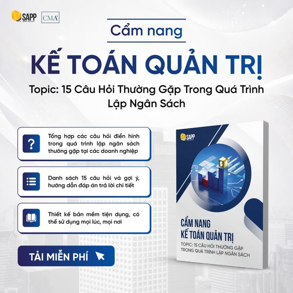
[FREE DOWNLOAD] CẨM NANG KẾ TOÁN QUẢN TRỊ - 15 CÂU HỎI THƯỜNG GẶP TRONG QUÁ TRÌNH LẬP NGÂN SÁCH 🔽 Download ngay: https://hubs.ly/Q04nn3570 Cứ mỗi mùa lập kế hoạch ngân sách gõ cửa, phòng Kế toán và…
Trang đích
Nhận xét: 41 trang đích khác nhau, phần lớn là Landing có form. 29/39 trang web có Meta Pixel (có đo chuyển đổi).
Facebook - Đăng nhập hoặc đăng ký

Khoá học Hoạch định và Phân tích Tài chính (FP&A Online)
Trang cá nhân của CMA - SAPP Academy Học viện Đào tạo CMA Hàng đầu Việt Nam
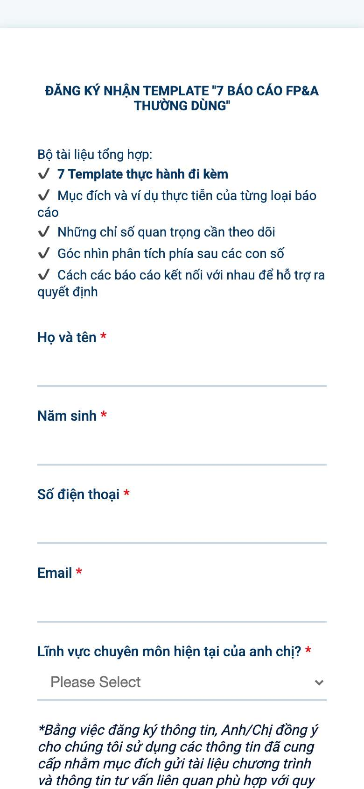
Form
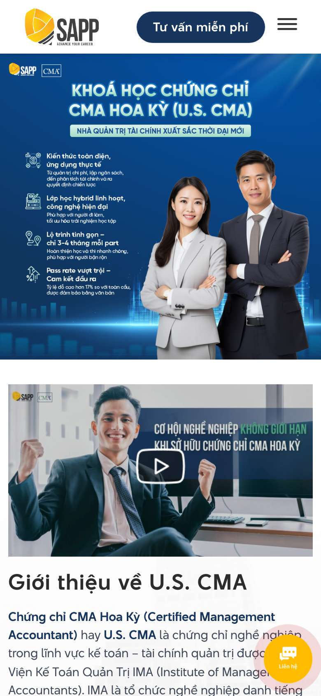
Khóa học CMA - Chương trình đào tạo Kế toán Quản trị Hoa Kỳ

Form
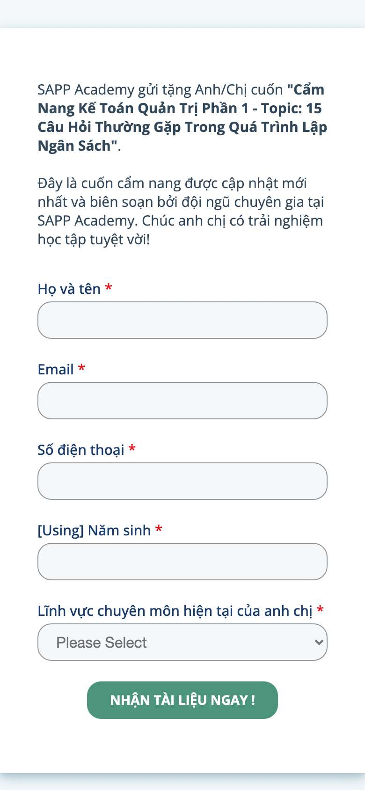
Form
Khóa học CMA - Chương trình đào tạo Kế toán Quản trị Hoa Kỳ
SAPP Academy - IFRS
SAPP Academy - Chuẩn mực lập Báo cáo Tài chính quốc tế IFRS · 5688 likeLoại chiến dịch → chủ đề → trang đích
Tầng phễu theo CTA/đích đến: Nhận biết 22% · Cân nhắc 24% · Chuyển đổi 54%. % tính trên số QC, không phải ngân sách hay kết quả chuyển đổi.
Nhận xét: SAPP Academy - IFRS chủ yếu chạy Lead / chuyển đổi trên web (30% QC), xoáy vào chủ đề Chứng chỉ / sự nghiệp và dẫn về Landing có form · sapp.edu.vn. Có QC ở đủ 3 tầng phễu theo CTA/đích đến; dữ liệu không cho biết đối tượng nhắm chọn hay hành trình thực tế sau cú nhấp.
Số mẫu có QC mới theo 7 ngày
Nhận xét: Đang tăng tốc: 16 mẫu mới trong 2 tuần gần nhất, so với 8 mẫu trong 4 tuần trước đó.
Ưu đãi trích từ caption (số QC)
Không thấy con số ưu đãi.
Mẫu có tín hiệu đáng chú ý · 8 / 24 mẫu
Xếp theo thời gian duy trì và số QC liên quan. Đây là tín hiệu về mức độ duy trì/triển khai, không phải bằng chứng về chi tiêu, tương tác trên bài hay hiệu quả kinh doanh.
Nhận xét: Mẫu có tín hiệu duy trì đáng chú ý nhất đã chạy 16 ngày với 3 QC: Video, chủ đề Chứng chỉ / sự nghiệp. 5/8 mẫu đứng đầu là video.

Tài Sản Nhà Máy Dưới Góc Nhìn IFRS: Khi Kế Toán Trưởng Không Thể Chỉ Dựa Vào Chứng Từ Một bộ hồ sơ tài sản đầy đủ chưa chắc đã đủ để trả lời câu hỏi về con số trên BCTC. Với tài sản cố định tại do…

Nhiều kế toán tại doanh nghiệp SME cho rằng rào cản lớn nhất khi ứng tuyển vào doanh nghiệp FDI là ngoại ngữ hoặc yêu cầu về kinh nghiệm. Nhưng trên thực tế, khoảng cách lớn hơn lại nằm ở "ngôn ngữ kế…
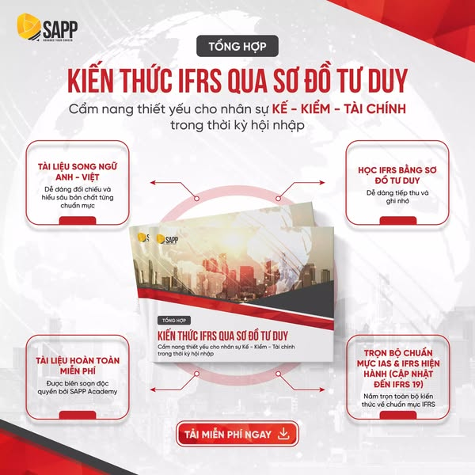
[TẢI MIỄN PHÍ] Bộ Tài Liệu “Tổng Hợp Kiến Thức IFRS Qua Sơ Đồ Tư Duy” - Nhân Sự Kế toán - Tài Chính Không Thể Bỏ Lỡ >>> Đăng ký nhận tài liệu miễn phí tại: https://hubs.ly/Q03Jtwvn0 💥 2025 là khởi đ…
[CHÍNH THỨC MỞ ĐƠN] LÀM CHỦ IFRS 13 TRONG THỜI ĐẠI AI: Ứng dụng AI và Chuẩn hóa Dữ liệu trong Đo lường Giá trị hợp lý >>> Đăng ký tham dự webinar MIỄN PHÍ tại: https://hubs.ly/Q04DKJ4C0 Với các doanh…
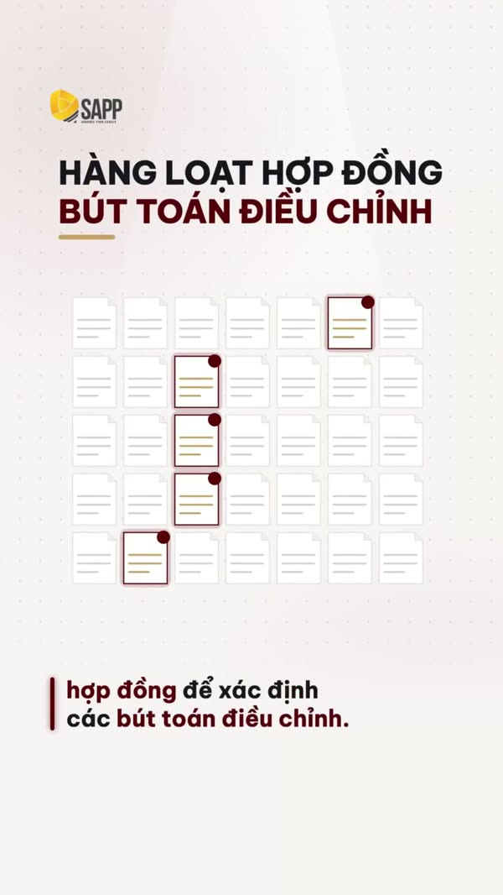
KTT Ứng Dụng AI Như Nào Để Chủ Động Hơn Trong Cuộc Chuyển Đổi IFRS? Theo khảo sát của KPMG trên 1.800 doanh nghiệp toàn cầu, 72% đã thử nghiệm hoặc đang ứng dụng AI trong lập báo cáo tài chính. Con s…
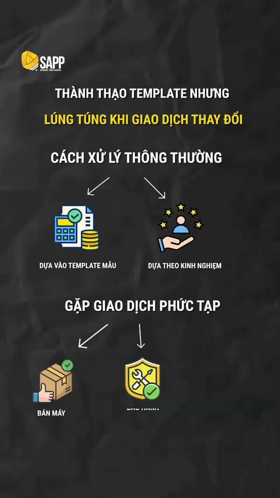
Có một thực tế khá phổ biến trong môi trường FDI: nhiều kế toán đã làm việc với IFRS nhưng vẫn thiếu tự tin khi phải xử lý những giao dịch chưa có tiền lệ hoặc không có sẵn hướng dẫn từ tập đoàn. Lý d…
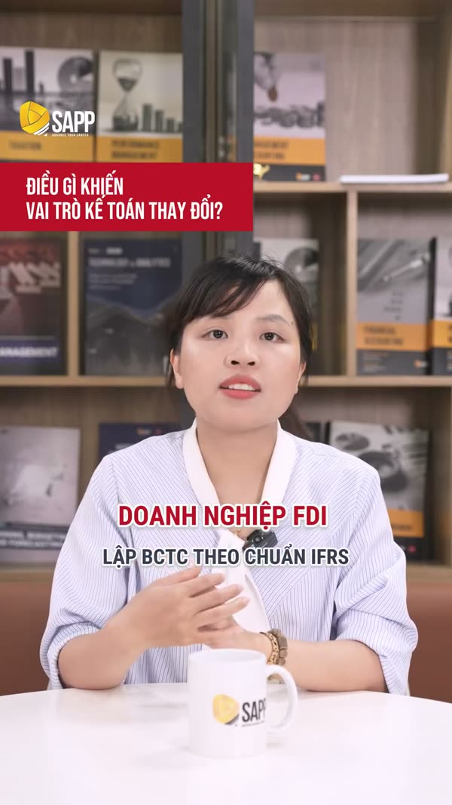
Vai Trò Kế Toán Thay Đổi Ra Sao Khi Doanh Nghiệp Hội Nhập? Khi doanh nghiệp bước ra sân chơi quốc tế, "thước đo" dành cho người làm Kế toán cũng thay đổi. Vai trò của Kế toán viên không còn chỉ dừng l…

Checklist 10 Điểm Chênh Lệch VAS - IFRS Cần Rà Soát Tại Doanh Nghiệp Sản Xuất Tải tài liệu MIỄN PHÍ ngay! Lập BCTC song song theo VAS và IFRS đặt ra một bài toán không nhỏ cho Kế toán trưởng: số liệ…
Trang đích
Nhận xét: 20 trang đích khác nhau, phần lớn là Bài viết / PR. 16/19 trang web có Meta Pixel (có đo chuyển đổi).
Facebook - Đăng nhập hoặc đăng ký

Tổng hợp kiến thức IFRS qua sơ đồ tư duy
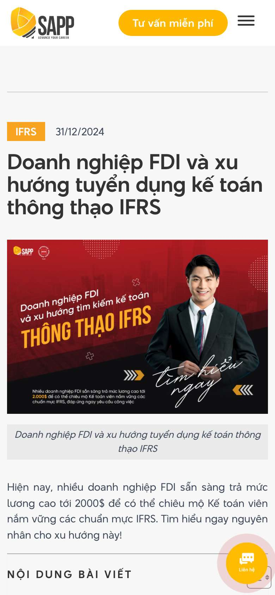
Doanh nghiệp FDI và xu hướng tuyển dụng kế toán thông thạo IFRS
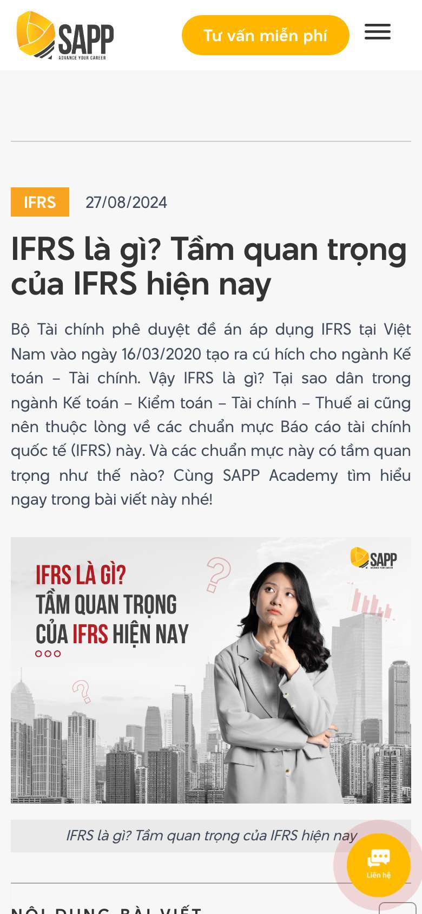
IFRS là gì? Tầm quan trọng của IFRS hiện nay
IFRS là gì? Tầm quan trọng của IFRS hiện nay
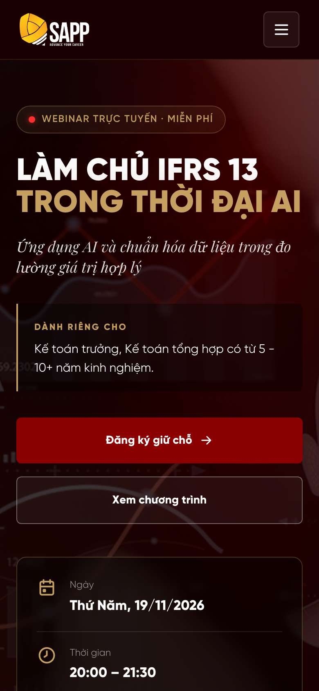
Làm chủ IFRS 13 trong thời đại AI · Webinar 19/11/2026 · SAPP Academy

Khoá học IFRS Online
IFRS là gì? Tầm quan trọng của IFRS hiện nay
FTMS Hồ Chí Minh
FTMS Hồ Chí Minh · 18384 likeLoại chiến dịch → chủ đề → trang đích
Tầng phễu theo CTA/đích đến: Nhận biết 6% · Cân nhắc 0% · Chuyển đổi 94%. % tính trên số QC, không phải ngân sách hay kết quả chuyển đổi.
Nhận xét: FTMS Hồ Chí Minh chủ yếu chạy Tin nhắn (94% QC), xoáy vào chủ đề Giá / học phí / ưu đãi và dẫn về Messenger.
Số mẫu có QC mới theo 7 ngày
Nhận xét: Nhịp ra mẫu đều: 2 mẫu mới trong 2 tuần gần nhất, 4 mẫu trong 4 tuần trước đó.
Ưu đãi trích từ caption (số QC)
Nhận xét: Ưu đãi chủ lực: quà tiền 33 triệu, 2 triệu.
| Tiền / quà | 33 triệu (4), 2 triệu (1) |
Mẫu có tín hiệu đáng chú ý · 8 / 33 mẫu
Xếp theo thời gian duy trì và số QC liên quan. Đây là tín hiệu về mức độ duy trì/triển khai, không phải bằng chứng về chi tiêu, tương tác trên bài hay hiệu quả kinh doanh.
Nhận xét: Mẫu có tín hiệu duy trì đáng chú ý nhất đã chạy 211 ngày với 4 QC: Ảnh đơn, chủ đề Giá / học phí / ưu đãi. 1/8 mẫu đứng đầu là video.
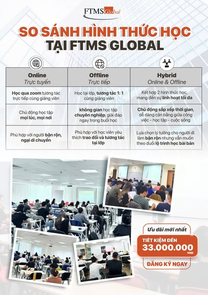
🎓 SO SÁNH CÁC HÌNH THỨC HỌC TẠI FTMS GLOBAL Linh hoạt hình thức - Trọn vẹn trải nghiệm - Học cùng chuyên gia Tại FTMS Global, mỗi hình thức học không chỉ là một cách tiếp cận kiến thức, mà còn là cơ …

🔎 10 ĐIỀU SINH VIÊN TÀI CHÍNH – KẾ TOÁN – KIỂM TOÁN BẮT BUỘC PHẢI HIỂU VỀ IFRS TỪ 2026 IFRS không còn là câu chuyện “chuẩn bị cho tương lai”. 2026 chính là thời điểm IFRS bước thẳng vào thực tế nghề …

CMA cho người bận rộn: 6 tháng thăng hạng sự nghiệp tài chính! 💰 2,1 tỷ đồng/năm - Mức thu nhập trung vị toàn cầu của các chuyên gia tài chính sở hữu CMA. Theo khảo sát lương từ Institute of Managem…

🎉[𝐅𝐓𝐌𝐒 𝐆𝐋𝐎𝐁𝐀𝐋 𝐈𝐒 𝐎𝐅𝐅𝐈𝐂𝐈𝐀𝐋𝐋𝐘 𝐑𝐄𝐂𝐎𝐆𝐍𝐈𝐙𝐄𝐃 𝐀𝐒 𝐀 𝐂𝐅𝐀 𝐈𝐍𝐒𝐓𝐈𝐓𝐔𝐓𝐄 𝐏𝐑𝐄𝐏 𝐏𝐑𝐎𝐕𝐈𝐃𝐄𝐑] 🎉 FTMS Global chính thức ký kết hợp tác chiến lược với CFA Institute, khẳng định vai trò trong hệ sinh thái đào tạo tài chính …
ĐÂU LÀ “KẺ THÙ” LỚN NHẤT CỦA NHÀ ĐẦU TƯ? Trong đầu tư, “đối thủ” nguy hiểm nhất không phải là thị trường! 👉 Đó là cảm xúc của chính bạn. 📉 Khi thị trường giảm mạnh, nỗi sợ khiến nhà đầu tư bán tháo…
(𝐸𝑛𝑔𝑙𝑖𝑠ℎ 𝑣𝑒𝑟𝑠𝑖𝑜𝑛 𝑏𝑒𝑙𝑜𝑤) ✨ VIỆN CFA x FTMS GLOBAL | KẾT NỐI TRI THỨC - MỞ RỘNG HỢP TÁC 🤝 Vừa qua, FTMS Global đã vinh dự chào đón đại diện Viện CFA trong buổi gặp gỡ và trao đổi tại văn phòng. Không c…
✨ FTMS GLOBAL - GẦN 40 NĂM KIẾN TẠO CHUẨN MỰC ĐÀO TẠO KẾ TOÁN - KIỂM TOÁN - TÀI CHÍNH ✨ Với gần 40 năm hình thành và phát triển, FTMS Global tự hào là đơn vị tiên phong trong lĩnh vực đào tạo Kế toán…
🚫 Không có công ty nào trả lương cao cho người chỉ biết hạch toán. 📈 Muốn đi từ Kế toán viên → Finance Manager → CFO, bạn cần nâng cấp từ ghi nhận số liệu sang phân tích, quản trị và ra quyết định. 🎥 …
FTMS Hà Nội
FTMS Hà Nội · 70035 likeLoại chiến dịch → chủ đề → trang đích
Tầng phễu theo CTA/đích đến: Nhận biết 4% · Cân nhắc 0% · Chuyển đổi 96%. % tính trên số QC, không phải ngân sách hay kết quả chuyển đổi.
Nhận xét: FTMS Hà Nội chủ yếu chạy Tin nhắn (96% QC), xoáy vào chủ đề Miễn phí / quà tặng và dẫn về Messenger.
Số mẫu có QC mới theo 7 ngày
Nhận xét: Đang tăng tốc: 4 mẫu mới trong 2 tuần gần nhất, so với 2 mẫu trong 4 tuần trước đó.
Ưu đãi trích từ caption (số QC)
Không thấy con số ưu đãi.
Mẫu có tín hiệu đáng chú ý · 8 / 19 mẫu
Xếp theo thời gian duy trì và số QC liên quan. Đây là tín hiệu về mức độ duy trì/triển khai, không phải bằng chứng về chi tiêu, tương tác trên bài hay hiệu quả kinh doanh.
Nhận xét: Mẫu có tín hiệu duy trì đáng chú ý nhất đã chạy 291 ngày với 3 QC: Nhiều ảnh, chủ đề Miễn phí / quà tặng. 1/8 mẫu đứng đầu là video.
🎓 LỘ TRÌNH HỌC CFA DÀNH CHO SINH VIÊN NĂM 3 Bước đi chiến lược để bứt tốc trước khi ra trường ❓Năm 3 đại học là giai đoạn bản lề: Bạn bắt đầu tìm thực tập, chỉnh sửa CV, nghĩ về công việc đầu tiên –…

(𝐸𝑛𝑔𝑙𝑖𝑠ℎ 𝑣𝑒𝑟𝑠𝑖𝑜𝑛 𝑏𝑒𝑙𝑜𝑤) ✨ VIỆN CFA x FTMS GLOBAL | KẾT NỐI TRI THỨC - MỞ RỘNG HỢP TÁC 🤝 Vừa qua, FTMS Global đã vinh dự chào đón đại diện Viện CFA trong buổi gặp gỡ và trao đổi tại văn phòng. Không c…

LỘ TRÌNH PASS CFA LEVEL 1 NGAY LẦN ĐẦU TIÊN 300+ HV ÁP DỤNG THÀNH CÔNG HÀNG NĂM >>>Chi tiết: https://ftmsglobal.edu.vn/khai-giang-khoa-hoc-cfa-hn Bạn đang có kế hoạch thi CFA Level 1 cuối năm 2026, …

🎉[𝐅𝐓𝐌𝐒 𝐆𝐋𝐎𝐁𝐀𝐋 𝐈𝐒 𝐎𝐅𝐅𝐈𝐂𝐈𝐀𝐋𝐋𝐘 𝐑𝐄𝐂𝐎𝐆𝐍𝐈𝐙𝐄𝐃 𝐀𝐒 𝐀 𝐂𝐅𝐀 𝐈𝐍𝐒𝐓𝐈𝐓𝐔𝐓𝐄 𝐏𝐑𝐄𝐏 𝐏𝐑𝐎𝐕𝐈𝐃𝐄𝐑] 🎉 FTMS Global chính thức ký kết hợp tác chiến lược với CFA Institute, khẳng định vai trò trong hệ sinh thái đào tạo tài chính …

(𝐸𝑛𝑔𝑙𝑖𝑠ℎ 𝑣𝑒𝑟𝑠𝑖𝑜𝑛 𝑏𝑒𝑙𝑜𝑤) 🤝 FTMS & IMA: Khi insight người học trở thành nền tảng cho những hợp tác giá trị Trong bối cảnh ngành kế toán - tài chính đang chuyển mình mạnh mẽ theo hướng toàn cầu hóa, nă…
🌟CFA là hành trình dài nhưng một người thầy giỏi có thể giúp bạn đi nhanh hơn. 🌟 Ai đã từng học CFA đều biết: đây không chỉ là một kỳ thi, mà là hành trình của kỷ luật, tư duy và sự bền bỉ. Khối lượn…

📸 RECAP WORKSHOP: “NEXTGEN PATHWAY – ĐỊNH HÌNH SỰ NGHIỆP TÀI CHÍNH, KẾ TOÁN TRONG THỜI ĐẠI SỐ” 🤝 Vừa qua, Workshop “NEXTGEN PATHWAY – Định hình sự nghiệp Tài chính, Kế toán trong thời đại số” đã diễn…

🎓 LỘ TRÌNH HỌC CFA DÀNH CHO SINH VIÊN NĂM 3 Bước đi chiến lược để bứt tốc trước khi ra trường ❓Năm 3 đại học là giai đoạn bản lề: Bạn bắt đầu tìm thực tập, chỉnh sửa CV, nghĩ về công việc đầu tiên –…
Taca - khoá BCTC & thuế
Taca In-Depth Tax Academy · 10811 likeLoại chiến dịch → chủ đề → trang đích
Tầng phễu theo CTA/đích đến: Nhận biết 0% · Cân nhắc 0% · Chuyển đổi 100%. % tính trên số QC, không phải ngân sách hay kết quả chuyển đổi.
Nhận xét: Taca - khoá BCTC & thuế chủ yếu chạy Tin nhắn (100% QC), xoáy vào chủ đề Chứng chỉ / sự nghiệp và dẫn về Messenger. 100% QC hướng tới hành động chuyển đổi theo CTA/đích đến; cách phân loại này không khẳng định nội dung thiếu vai trò nuôi dưỡng.
Số mẫu có QC mới theo 7 ngày
Nhận xét: Không có mẫu hoàn toàn mới trong 6 tuần, chỉ duy trì mẫu cũ.
Ưu đãi trích từ caption (số QC)
Không thấy con số ưu đãi.
Mẫu có tín hiệu đáng chú ý · 1 / 1 mẫu
Xếp theo thời gian duy trì và số QC liên quan. Đây là tín hiệu về mức độ duy trì/triển khai, không phải bằng chứng về chi tiêu, tương tác trên bài hay hiệu quả kinh doanh.
Nhận xét: Mẫu có tín hiệu duy trì đáng chú ý nhất đã chạy 315 ngày với 3 QC: Ảnh đơn, chủ đề Chứng chỉ / sự nghiệp.

Audit Care Vietnam - IFRS/ACCA
Audit Care Vietnam - ACV · 3664 likeLoại chiến dịch → chủ đề → trang đích
Tầng phễu theo CTA/đích đến: Nhận biết 14% · Cân nhắc 0% · Chuyển đổi 86%. % tính trên số QC, không phải ngân sách hay kết quả chuyển đổi.
Nhận xét: Audit Care Vietnam - IFRS/ACCA chủ yếu chạy Tin nhắn (86% QC), xoáy vào chủ đề Giá / học phí / ưu đãi và dẫn về Messenger.
Số mẫu có QC mới theo 7 ngày
Nhận xét: Đang tăng tốc: 2 mẫu mới trong 2 tuần gần nhất, so với 2 mẫu trong 4 tuần trước đó.
Ưu đãi trích từ caption (số QC)
| Hạn | 11/11/2026 (1) |
Mẫu có tín hiệu đáng chú ý · 5 / 5 mẫu
Xếp theo thời gian duy trì và số QC liên quan. Đây là tín hiệu về mức độ duy trì/triển khai, không phải bằng chứng về chi tiêu, tương tác trên bài hay hiệu quả kinh doanh.
Nhận xét: Mẫu có tín hiệu duy trì đáng chú ý nhất đã chạy 61 ngày với 1 QC: Nhiều ảnh, chủ đề Phương pháp / công cụ. 1/5 mẫu đứng đầu là video.

HƠN 340 ĐIỂM CẦU CÙNG HỌC CÁCH ĐƯA AI VÀO CÔNG VIỆC TÀI CHÍNH – KẾ TOÁN – THUẾ! ⚡ Chiều 17/9/2026, AuditCare Việt Nam (ACV) đồng hành cùng Tổng công ty Điện lực miền Bắc (EVNNPC) triển khai Hội nghị …
🚀 MUỐN HỌC IFRS, LẤY CHỨNG CHỈ ACCA NHƯNG CHƯA SẴN SÀNG CHI TRẢ TOÀN BỘ HỌC PHÍ? 🎯 CHỈ 3.100.000Đ – HỌC IFRS TIẾNG VIỆT NGAY, THI ACCA SAU! AuditCare Việt Nam chính thức triển khai chương trình MS91…

🌍 CÙNG LAN TỎA CƠ HỘI HỌC VÀ THI CERTIFR ACCA BẰNG TIẾNG VIỆT Tạp chí Kinh tế – Tài chính Online thuộc Bộ Tài chính đã đăng tải thông tin về cơ hội học và thi chứng chỉ CertIFR ACCA bằng tiếng Việt d…

HỢP ĐỒNG ĐÃ KÝ, VÌ SAO KẾ TOÁN VẪN CHƯA THỂ THANH TOÁN? Bộ phận mua hàng giữ hợp đồng. Bộ phận sử dụng giữ biên bản nghiệm thu. Kế toán đến hạn thanh toán vẫn phải hỏi từng phòng để tập hợp hồ sơ. Kh…
📣 SÁNG MAI 18/11 | HỘI THẢO QUẢN TRỊ NHÂN SỰ SỐ – CÓ THAM DỰ ONLINE QUA ZOOM Đã có phần mềm nhân sự và kế toán, vì sao đến kỳ chốt lương hai phòng vẫn phải gửi Excel qua lại? Khi cần giải trình chi p…
Trường doanh nhân HBR - tài chính cho lãnh đạo
Trường doanh nhân HBR · 1185500 likeLoại chiến dịch → chủ đề → trang đích
Tầng phễu theo CTA/đích đến: Nhận biết 0% · Cân nhắc 0% · Chuyển đổi 100%. % tính trên số QC, không phải ngân sách hay kết quả chuyển đổi.
Nhận xét: Trường doanh nhân HBR - tài chính cho lãnh đạo chủ yếu chạy Lead / chuyển đổi trên web (54% QC), xoáy vào chủ đề Giá / học phí / ưu đãi và dẫn về Landing có form · workshop.hbr.edu.vn. 100% QC hướng tới hành động chuyển đổi theo CTA/đích đến; cách phân loại này không khẳng định nội dung thiếu vai trò nuôi dưỡng.
Số mẫu có QC mới theo 7 ngày
Nhận xét: Đang tăng tốc: 8 mẫu mới trong 2 tuần gần nhất, so với 0 mẫu trong 4 tuần trước đó.
Ưu đãi trích từ caption (số QC)
Nhận xét: Ưu đãi chủ lực: quà tiền 2 triệu.
| Tiền / quà | 2 triệu (2) |
Mẫu có tín hiệu đáng chú ý · 8 / 8 mẫu
Xếp theo thời gian duy trì và số QC liên quan. Đây là tín hiệu về mức độ duy trì/triển khai, không phải bằng chứng về chi tiêu, tương tác trên bài hay hiệu quả kinh doanh.
Nhận xét: Mẫu có tín hiệu duy trì đáng chú ý nhất đã chạy 7 ngày với 2 QC: Video, chủ đề Giá / học phí / ưu đãi, 2 biến thể. 7/8 mẫu đứng đầu là video.
Sếp đang trả 150–200 triệu/tháng cho phòng Marketing — nhưng không biết tiền đó đang chạy đi đâu? Đây là vòng lặp mà 80% chủ doanh nghiệp SME đang mắc kẹt: → Thuê agency: họ không hiểu sản phẩm, làm l…
🔥 MUỐN 2027 TĂNG TRƯỞNG, NHƯNG KẾ HOẠCH KINH DOANH SẾP CÒN CHƯA BIẾT LẬP?? Cuối năm chính là thời điểm vàng để doanh nghiệp xây dựng kế hoạch kinh doanh cho năm mới. Nhưng thực tế, 90% lãnh đạo đều b…
🚫 2027 - KINH DOANH MÀ THIẾU KẾ HOẠCH, DOANH NGHIỆP TỒN TẠI & TĂNG TRƯỞNG KIỂU GÌ? >> Hướng dẫn xây dựng chiến lược & lập kế hoạch kinh doanh thực chiến - x2 doanh số năm 2027. ⚠️ 2026 sắp kết thúc …
💥 CỨ ĐẾN MÙA LẬP KẾ HOẠCH KINH DOANH LÀ SẾP LẠI... HOANG MANG??💥 Bước vào mùa lập kế hoạch kinh doanh, sếp muốn năm tới doanh thu cao hơn, chi phí được kiểm soát tốt hơn, đội ngũ làm việc hiệu quả hơ…
📛 THIẾU CHIẾN LƯỢC, THIẾU KẾ HOẠCH KINH DOANH - DOANH SỐ TUỘT DỐC KHÔNG PHANH Bước sang 2027, doanh nghiệp nào vẫn thiếu chiến lược – thiếu kế hoạch – thiếu hệ thống, sẽ đối mặt 3 hệ quả không tránh …
🚫 NĂM 2027 - KINH DOANH MÀ THIẾU KẾ HOẠCH, DOANH NGHIỆP TỒN TẠI & TĂNG TRƯỞNG KIỂU GÌ? >> Hướng dẫn xây dựng chiến lược & lập kế hoạch kinh doanh thực chiến - x2 doanh số năm 2027. ⚠️ Bước sang 2027…

🚫ĐỪNG ĐỂ TEAM MARKETING TRỞ THÀNH BỘ PHẬN “Đ.ỐT T.IỀN” MÀ KHÔNG TẠO RA DOANH THU🚫 Sếp đã chi ~100- 200 triệu/ tháng nuôi phòng Marketing. Chạy đủ kênh, thay đủ người, đổi Agency liên tục nhưng doanh t…
📛 THIẾU CHIẾN LƯỢC, THIẾU KẾ HOẠCH KINH DOANH - DOANH SỐ TUỘT DỐC KHÔNG PHANH Bước sang 2027, doanh nghiệp nào vẫn thiếu chiến lược – thiếu kế hoạch – thiếu hệ thống, sẽ đối mặt 3 hệ quả không tránh k…
Trang đích
Nhận xét: 5 trang đích khác nhau, phần lớn là Landing có form. 5/5 trang web có Meta Pixel (có đo chuyển đổi).

XÂY DỰNG HỆ THỐNG MKT HIỆN ĐẠI
XÂY DỰNG CHIẾN LƯỢC VÀ LẬP KẾ HOẠCH KINH DOANH 2027
XÂY DỰNG CHIẾN LƯỢC VÀ LẬP KẾ HOẠCH KINH DOANH 2027
XÂY DỰNG CHIẾN LƯỢC VÀ LẬP KẾ HOẠCH KINH DOANH 2027
XÂY DỰNG CHIẾN LƯỢC VÀ LẬP KẾ HOẠCH KINH DOANH 2027
Học viện Quản lý PACE - tài chính cho lãnh đạo
Học Viện Quản Lý PACE · 211018 likeLoại chiến dịch → chủ đề → trang đích
Tầng phễu theo CTA/đích đến: Nhận biết 15% · Cân nhắc 11% · Chuyển đổi 74%. % tính trên số QC, không phải ngân sách hay kết quả chuyển đổi.
Nhận xét: Học viện Quản lý PACE - tài chính cho lãnh đạo chủ yếu chạy Lead form trên FB (66% QC), xoáy vào chủ đề Khác và dẫn về Trang Facebook. Có QC ở đủ 3 tầng phễu theo CTA/đích đến; dữ liệu không cho biết đối tượng nhắm chọn hay hành trình thực tế sau cú nhấp.
Số mẫu có QC mới theo 7 ngày
Nhận xét: Đang tăng tốc: 38 mẫu mới trong 2 tuần gần nhất, so với 16 mẫu trong 4 tuần trước đó.
Ưu đãi trích từ caption (số QC)
Không thấy con số ưu đãi.
Mẫu có tín hiệu đáng chú ý · 8 / 80 mẫu
Xếp theo thời gian duy trì và số QC liên quan. Đây là tín hiệu về mức độ duy trì/triển khai, không phải bằng chứng về chi tiêu, tương tác trên bài hay hiệu quả kinh doanh.
Nhận xét: Mẫu có tín hiệu duy trì đáng chú ý nhất đã chạy 126 ngày với 3 QC: Ảnh đơn, chủ đề Khác. 1/8 mẫu đứng đầu là video.
Lãnh đạo không có nghĩa là cai trị con người. Lãnh đạo bắt đầu từ sự thấu hiểu con người. Nhưng sự thấu hiểu, nếu không đi cùng năng lực, sẽ khó tạo ra kết quả trong tổ chức. 📌 Bởi quản trị chính là…
"Làm đúng việc" giúp tổ chức vận hành hiệu quả. "Biết việc đúng để làm" giúp tổ chức đi đúng hướng. 🎯 Đó là hành trình tư duy mà mỗi nhà lãnh đạo đều phải trải qua. Và đây cũng là lý do, tại PACE,…
Ý tưởng có thể tạo ra sự khác biệt. Nhưng chỉ năng lực thực thi mới tạo ra kết quả. Không ít doanh nghiệp sở hữu chiến lược tốt, nhưng gặp nhiều thách thức trong quá trình triển khai vì thiếu sự đồng …
Giá trị vốn hóa của Microsoft đã tăng vọt gấp 10 lần khi Satya Nadella quyết định khai tử văn hóa 'Know-it-all' (sống với thành công cũ) sang 'Learn-it-all' (học tập để đổi mới). Bước ngoặc lịch sử …

Tại sao có nhiều doanh nghiệp đặt mục tiêu cao, chiến lược bài bản nhưng kết quả đạt được lại không tương xứng? ➡️➡️ Nguyên nhân chủ yếu là do năng lực thực thi và hệ thống đo lường kết quả chưa được…

Chương trình "Quản trị bằng văn hóa" được giảng dạy trực tiếp bởi TS. Giản Tư Trung - Khai giảng tại TP.HCM “Quản trị bằng văn hóa là tương lai của quản trị. Không một tổ chức nào có thể trở nên độ…
🔻 OKR và KPI là hai công cụ quan trọng giúp doanh nghiệp thiết lập mục tiêu và đo lường hiệu suất làm việc. Việc triển khai đúng cách không chỉ giúp định hướng chiến lược mà còn tạo động lực mạnh mẽ c…

Trong kinh doanh, thay đổi là điều không thể tránh khỏi. Nhưng điều định hình kết quả không chỉ nằm ở thị trường hay hoàn cảnh. Nó bắt đầu từ cách người lãnh đạo nhìn nhận và dẫn dắt sự thay đổi đó. …
Trang đích
Nhận xét: 10 trang đích khác nhau, phần lớn là Landing có form. 6/8 trang web có Meta Pixel (có đo chuyển đổi).
Facebook - Đăng nhập hoặc đăng ký
Trang cá nhân của Học Viện Quản Lý PACE

Global Leadership Program (GLP) - Lãnh Đạo Toàn Cầu
Shopee Việt Nam | Mua và Bán Trên Ứng Dụng Di Động Hoặc Website

Phương pháp Tư duy và Giải quyết Vấn đề | Khóa học Kỹ năng
Khóa học Giám đốc Sản xuất - Đào tạo CPO chuyên nghiệp
Khóa học kỹ năng giao tiếp ứng xử thấu cảm & tạo ảnh hưởng
Shopee Việt Nam | Mua và Bán Trên Ứng Dụng Di Động Hoặc Website
Khoá Fintech - ĐH Bách khoa HN
Khóa học Công nghệ Tài chính Fintech giảng dạy bởi Đại học Bách khoa Hà Nội · 924 likeLoại chiến dịch → chủ đề → trang đích
Tầng phễu theo CTA/đích đến: Nhận biết 0% · Cân nhắc 0% · Chuyển đổi 100%. % tính trên số QC, không phải ngân sách hay kết quả chuyển đổi.
Nhận xét: Khoá Fintech - ĐH Bách khoa HN chủ yếu chạy Lead / chuyển đổi trên web (54% QC), xoáy vào chủ đề Uy tín chuyên gia / học viên và dẫn về Landing có form · finxdemy.edu.vn. 100% QC hướng tới hành động chuyển đổi theo CTA/đích đến; cách phân loại này không khẳng định nội dung thiếu vai trò nuôi dưỡng.
Số mẫu có QC mới theo 7 ngày
Nhận xét: Đã chững lại: không có mẫu mới trong 2 tuần, trước đó có 1 mẫu.
Ưu đãi trích từ caption (số QC)
Không thấy con số ưu đãi.
Mẫu có tín hiệu đáng chú ý · 4 / 4 mẫu
Xếp theo thời gian duy trì và số QC liên quan. Đây là tín hiệu về mức độ duy trì/triển khai, không phải bằng chứng về chi tiêu, tương tác trên bài hay hiệu quả kinh doanh.
Nhận xét: Mẫu có tín hiệu duy trì đáng chú ý nhất đã chạy 106 ngày với 4 QC: Ảnh đơn, chủ đề Uy tín chuyên gia / học viên.

HỌC FINTECH TẠI ĐH BÁCH KHOA HÀ NỘI - BƯỚC CHUYỂN THÔNG MINH CHO SỰ NGHIỆP CỦA BẠN 📊 Fintech đang tăng trưởng mạnh và nhu cầu nhân lực chưa bao giờ lớn đến vậy: - Tại Việt Nam, thanh toán số và ngân …

LẠC HẬU CÔNG NGHỆ – SỰ NGHIỆP TÀI CHÍNH CỦA BẠN ĐANG BỊ BỎ LẠI? Bạn đang đối mặt với những thách thức này? ❓ Nắm vững số liệu tài chính nhưng mơ hồ khi nghe đến Blockchain, AI? ❓ Quản lý tài chính hi…

🚀 76 GIỜ HỌC FINTECH ĐỊNH HƯỚNG AI: NẮM BẮT XU HƯỚNG TÀI CHÍNH MỚI NHẤT TRONG KỶ NGUYÊN AI Khi dữ liệu, AI và Machine Learning ngày càng tham gia sâu vào cách ngành tài chính phân tích, dự báo, quản …

🚀 MUỐN CHUYỂN HƯỚNG SANG FINTECH NHƯNG CHƯA BIẾT BẮT ĐẦU TỪ ĐÂU? Bạn đang học hoặc làm việc trong Tài chính, Ngân hàng, Kế toán và muốn bước sang Fintech? Nhưng càng tìm hiểu, bạn càng dễ rơi vào h…
Trang đích
Nhận xét: 2 trang đích khác nhau, phần lớn là Landing có form. 2/2 trang web có Meta Pixel (có đo chuyển đổi).

Kolia Phan
Kolia Phan · 51993 likeLoại chiến dịch → chủ đề → trang đích
Tầng phễu theo CTA/đích đến: Nhận biết 0% · Cân nhắc 11% · Chuyển đổi 89%. % tính trên số QC, không phải ngân sách hay kết quả chuyển đổi.
Nhận xét: Kolia Phan chủ yếu chạy Tin nhắn (44% QC), xoáy vào chủ đề Webinar / sự kiện / hội thảo và dẫn về Messenger.
Số mẫu có QC mới theo 7 ngày
Nhận xét: Đang tăng tốc: 4 mẫu mới trong 2 tuần gần nhất, so với 2 mẫu trong 4 tuần trước đó.
Ưu đãi trích từ caption (số QC)
Không thấy con số ưu đãi.
Mẫu có tín hiệu đáng chú ý · 8 / 9 mẫu
Xếp theo thời gian duy trì và số QC liên quan. Đây là tín hiệu về mức độ duy trì/triển khai, không phải bằng chứng về chi tiêu, tương tác trên bài hay hiệu quả kinh doanh.
Nhận xét: Mẫu có tín hiệu duy trì đáng chú ý nhất đã chạy 68 ngày với 1 QC: Video, chủ đề Khác. 1/8 mẫu đứng đầu là video.
👉 Chi tiết khoá học: https://koliaphan.com/dautuvangthucchien/ 👉 NHANH TAY LIÊN HỆ để đội ngũ hỗ trợ bạn lộ trình học phù hợp nhất! #KoliaPhan #DauTuVang #VangThucChien #PhanTichViMo #TuDuyDauTu #Ki…

💸 TRẢ HỌC PHÍ CHO THỊ TRƯỜNG, HAY ĐẦU TƯ VÀO KIẾN THỨC? Cuối những năm 1990, khi còn làm tại Fujifilm, TS. Phan Đoàn có dịp tiếp xúc nhiều hơn với thị trường chứng khoán Mỹ. Đó là thời Internet bùng…
📈 GIÁ VÀNG BIẾN ĐỘNG MỖI NGÀY, NHƯNG VẤN ĐỀ CỦA NHÀ ĐẦU TƯ LẠI NẰM Ở CÁCH ĐỌC THỊ TRƯỜNG 👉 Cộng đồng Vàng Free: https://tinyurl.com/KoliaPhanGoldFree 👉 Cộng đồng Siêu Tài sản số Free: https://tinyurl…
🔒 CRYPTO ĐANG Ở VÙNG SỢ HÃI: ĐỪNG CHỈ NHÌN VÀO BẢNG GIÁ Thị trường crypto đang ở vùng sợ hãi. Bitcoin lùi gần một nửa so với đỉnh tháng 10 năm ngoái, phần lớn altcoin chìm trong sắc đỏ. Tâm lý đám đô…

🫵 Truy cập cộng đồng miễn phí: https://t.me/koliaphansieutaisanso 🔥 THỊ TRƯỜNG KHÔNG THIẾU CƠ HỘI, NHƯNG THIẾU MỘT HỆ QUY CHIẾU ĐỦ RÕ ĐỂ RA QUYẾT ĐỊNH Vàng, chứng khoán, crypto, USD, lãi suất, dòng t…

30 NGÀY MIỄN PHÍ ➤ HIỆU SUẤT MỤC TIÊU >80% 👉 Nhận #FULL kịch bản Vàng trong Pro Vàng Thực tế, rất nhiều ACE theo dõi tin tức, mở chỉ báo kỹ thuật... nhưng không hiểu rõ tác động và không chuyển hoá …
🔄 ĐỔI NHẬN ĐỊNH CÓ ĐỒNG NGHĨA VỚI THIẾU NHẤT QUÁN? #ĐọcĐúngChuyệnTiền 👉 Xem Cộng đồng và khoá học: https://tinyurl.com/FBthongtinkolia Một dữ liệu lạm phát hay một phát biểu của Fed có thể khiến kỳ …

⚠️ CHIẾN LƯỢC TÍCH SẢN KHI RỦI RO THỊ TRƯỜNG GIA TĂNG ⁉️Nhà đầu tư cần làm gì để hưởng lợi theo chu kỳ?! Mua nhiều tài sản khác với “tích sản” hiệu quả. Khi thiếu tầm nhìn tổng thể và chiến lược phâ…
Trang đích
Nhận xét: 5 trang đích khác nhau, phần lớn là Landing có form. 2/3 trang web có Meta Pixel (có đo chuyển đổi).


ATFX Vietnam
ATFX Vietnam · 47080 likeLoại chiến dịch → chủ đề → trang đích
Tầng phễu theo CTA/đích đến: Nhận biết 22% · Cân nhắc 0% · Chuyển đổi 78%. % tính trên số QC, không phải ngân sách hay kết quả chuyển đổi.
Nhận xét: ATFX Vietnam chủ yếu chạy Lead form trên FB (78% QC), xoáy vào chủ đề Miễn phí / quà tặng và dẫn về Trang Facebook.
Số mẫu có QC mới theo 7 ngày
Nhận xét: Đã chững lại: không có mẫu mới trong 2 tuần, trước đó có 5 mẫu.
Ưu đãi trích từ caption (số QC)
Không thấy con số ưu đãi.
Mẫu có tín hiệu đáng chú ý · 5 / 5 mẫu
Xếp theo thời gian duy trì và số QC liên quan. Đây là tín hiệu về mức độ duy trì/triển khai, không phải bằng chứng về chi tiêu, tương tác trên bài hay hiệu quả kinh doanh.
Nhận xét: Mẫu có tín hiệu duy trì đáng chú ý nhất đã chạy 33 ngày với 4 QC: Video, chủ đề Người mới / F0. 1/5 mẫu đứng đầu là video.

📊 Bắt đầu phân tích kỹ thuật dễ dàng hơn bạn nghĩ! Bạn là người mới? Biểu đồ giá, mô hình nến và phân tích kỹ thuật trông có vẻ quá phức tạp? Đừng lo! Giờ đây, bạn không cần mất hàng giờ để học cách…

Bạn muốn nâng cao kỹ năng giao dịch Chỉ số & Cổ phiếu Mỹ? Tham gia phiên Giao dịch Trực tiếp cùng Nhà Phân tích ATFX Việt Nam để tìm hiểu cách phân tích thị trường, nhận diện cơ hội giao dịch Chỉ số…

📢 ĐÀO TẠO TRỰC TUYẾN MIỄN PHÍ: THÀNH THẠO HỖ TRỢ & KHÁNG CỰ Nâng cấp kỹ năng phân tích kỹ thuật cùng ATFX với khóa học chuyên sâu về Hỗ trợ & Kháng cự. 🔹 Chủ đề: Hỗ trợ & Kháng cự trong phân tích kỹ …

Thị trường Chỉ số & Cổ phiếu Mỹ đang có những diễn biến gì? Theo dõi phiên Giao dịch Trực tiếp cùng Nhà Phân tích ATFX Việt Nam để trao đổi và quan sát giao dịch thực tế Chỉ số & Cổ phiếu Mỹ. Tron…
📈 Giao Dịch Vàng Cùng Nhà Phân Tích ATFX Không chỉ theo dõi thị trường, bạn sẽ đồng hành giao dịch cùng Nhà Phân tích ATFX trong phiên Giao dịch Vàng Trực tiếp! Quan sát diễn biến giá theo thời gia…
Trang đích
Nhận xét: 1 trang đích khác nhau, phần lớn là Trang Facebook.
ROVA Academy
ROVA Academy · 1970 likeLoại chiến dịch → chủ đề → trang đích
Tầng phễu theo CTA/đích đến: Nhận biết 0% · Cân nhắc 0% · Chuyển đổi 100%. % tính trên số QC, không phải ngân sách hay kết quả chuyển đổi.
Nhận xét: ROVA Academy chủ yếu chạy Lead / chuyển đổi trên web (100% QC), xoáy vào chủ đề Webinar / sự kiện / hội thảo và dẫn về Landing có form · rovatrading.vn. 100% QC hướng tới hành động chuyển đổi theo CTA/đích đến; cách phân loại này không khẳng định nội dung thiếu vai trò nuôi dưỡng.
Số mẫu có QC mới theo 7 ngày
Nhận xét: Đang tăng tốc: 7 mẫu mới trong 2 tuần gần nhất, so với 0 mẫu trong 4 tuần trước đó.
Ưu đãi trích từ caption (số QC)
Không thấy con số ưu đãi.
Mẫu có tín hiệu đáng chú ý · 8 / 9 mẫu
Xếp theo thời gian duy trì và số QC liên quan. Đây là tín hiệu về mức độ duy trì/triển khai, không phải bằng chứng về chi tiêu, tương tác trên bài hay hiệu quả kinh doanh.
Nhận xét: Mẫu có tín hiệu duy trì đáng chú ý nhất đã chạy 67 ngày với 2 QC: Ảnh đơn, chủ đề Webinar / sự kiện / hội thảo, 2 biến thể. 6/8 mẫu đứng đầu là video.

Trong trading, có hai loại phương pháp... Một để giao dịch, và một để bán cho số đông. Đau lòng khi phần lớn cách làm được số đông biết tới... Lại là chiếc bẫy tinh vi nhất được tạo ra bởi nhà tạo lậ…
Bản chất mọi phương pháp giao dịch trên đời này... ...đều sẽ quy về hai bước đơn giản: 1. Xác định điểm vào 2. Tìm điểm ra Nếu muốn kiếm tiền từ việc trading... Bạn xác định "điểm vào", sau đó tìm "đ…
TÔI ƯỚC MÌNH BIẾT BÍ MẬT NÀY SỚM HƠN... Tôi đã từng trade y như bạn. Dùng hết chỉ báo này đến phương pháp kia. Chart thì vẽ đầy, phân tích đa khung giờ, tín hiệu nào cũng có vẻ hợp lý. Backtest, học …

TÔI ƯỚC MÌNH BIẾT BÍ MẬT NÀY SỚM HƠN... Tôi đã từng trade y như bạn. Dùng hết chỉ báo này đến phương pháp kia. Chart thì vẽ đầy, phân tích đa khung giờ, tín hiệu nào cũng có vẻ hợp lý. Backtest, học …
TÔI ƯỚC MÌNH BIẾT BÍ MẬT NÀY SỚM HƠN... Tôi đã từng trade y như bạn. Dùng hết chỉ báo này đến phương pháp kia. Chart thì vẽ đầy, phân tích đa khung giờ, tín hiệu nào cũng có vẻ hợp lý. Backtest, học …
TÔI ƯỚC MÌNH BIẾT BÍ MẬT NÀY SỚM HƠN... Tôi đã từng trade y như bạn. Dùng hết chỉ báo này đến phương pháp kia. Chart thì vẽ đầy, phân tích đa khung giờ, tín hiệu nào cũng có vẻ hợp lý. Backtest, học …
TÔI ƯỚC MÌNH BIẾT BÍ MẬT NÀY SỚM HƠN... Tôi đã từng trade y như bạn. Dùng hết chỉ báo này đến phương pháp kia. Chart thì vẽ đầy, phân tích đa khung giờ, tín hiệu nào cũng có vẻ hợp lý. Backtest, học …
TÔI ƯỚC MÌNH BIẾT BÍ MẬT NÀY SỚM HƠN... Tôi đã từng trade y như bạn. Dùng hết chỉ báo này đến phương pháp kia. Chart thì vẽ đầy, phân tích đa khung giờ, tín hiệu nào cũng có vẻ hợp lý. Backtest, học …
Trang đích
Nhận xét: 1 trang đích khác nhau, phần lớn là Landing có form. 1/1 trang web có Meta Pixel (có đo chuyển đổi).
ZEU$ Capital Group
ZEU$ Capital Group · 2941 likeLoại chiến dịch → chủ đề → trang đích
Tầng phễu theo CTA/đích đến: Nhận biết 100% · Cân nhắc 0% · Chuyển đổi 0%. % tính trên số QC, không phải ngân sách hay kết quả chuyển đổi.
Nhận xét: ZEU$ Capital Group chủ yếu chạy Tương tác / video view (100% QC), xoáy vào chủ đề Webinar / sự kiện / hội thảo và dẫn về Gọi điện.
Số mẫu có QC mới theo 7 ngày
Nhận xét: Nhịp ra mẫu đều: 1 mẫu mới trong 2 tuần gần nhất, 0 mẫu trong 4 tuần trước đó.
Ưu đãi trích từ caption (số QC)
Không thấy con số ưu đãi.
Mẫu có tín hiệu đáng chú ý · 1 / 1 mẫu
Xếp theo thời gian duy trì và số QC liên quan. Đây là tín hiệu về mức độ duy trì/triển khai, không phải bằng chứng về chi tiêu, tương tác trên bài hay hiệu quả kinh doanh.
Nhận xét: Mẫu có tín hiệu duy trì đáng chú ý nhất đã chạy 4 ngày với 1 QC: Ảnh đơn, chủ đề Webinar / sự kiện / hội thảo.
Giraffe Markets
Giraffe Markets · 839 likeLoại chiến dịch → chủ đề → trang đích
Tầng phễu theo CTA/đích đến: Nhận biết 0% · Cân nhắc 0% · Chuyển đổi 100%. % tính trên số QC, không phải ngân sách hay kết quả chuyển đổi.
Nhận xét: Giraffe Markets chủ yếu chạy Lead form trên FB (100% QC), xoáy vào chủ đề Giá / học phí / ưu đãi và dẫn về Trang Facebook. 100% QC hướng tới hành động chuyển đổi theo CTA/đích đến; cách phân loại này không khẳng định nội dung thiếu vai trò nuôi dưỡng.
Số mẫu có QC mới theo 7 ngày
Nhận xét: Nhịp ra mẫu đều: 1 mẫu mới trong 2 tuần gần nhất, 0 mẫu trong 4 tuần trước đó.
Ưu đãi trích từ caption (số QC)
Không thấy con số ưu đãi.
Mẫu có tín hiệu đáng chú ý · 1 / 1 mẫu
Xếp theo thời gian duy trì và số QC liên quan. Đây là tín hiệu về mức độ duy trì/triển khai, không phải bằng chứng về chi tiêu, tương tác trên bài hay hiệu quả kinh doanh.
Nhận xét: Mẫu có tín hiệu duy trì đáng chú ý nhất đã chạy 4 ngày với 1 QC: Ảnh đơn, chủ đề Giá / học phí / ưu đãi.

Trang đích
Nhận xét: 1 trang đích khác nhau, phần lớn là Trang Facebook.
"Chuyên gia chứng khoán: NCB"
Chuyên gia chứng khoán: NCB · 53966 likeLoại chiến dịch → chủ đề → trang đích
Tầng phễu theo CTA/đích đến: Nhận biết 0% · Cân nhắc 0% · Chuyển đổi 100%. % tính trên số QC, không phải ngân sách hay kết quả chuyển đổi.
Nhận xét: "Chuyên gia chứng khoán: NCB" chủ yếu chạy Tin nhắn (100% QC), xoáy vào chủ đề Miễn phí / quà tặng và dẫn về Messenger. 100% QC hướng tới hành động chuyển đổi theo CTA/đích đến; cách phân loại này không khẳng định nội dung thiếu vai trò nuôi dưỡng.
Số mẫu có QC mới theo 7 ngày
Nhận xét: Không có mẫu hoàn toàn mới trong 6 tuần, chỉ duy trì mẫu cũ.
Ưu đãi trích từ caption (số QC)
Không thấy con số ưu đãi.
Mẫu có tín hiệu đáng chú ý · 2 / 2 mẫu
Xếp theo thời gian duy trì và số QC liên quan. Đây là tín hiệu về mức độ duy trì/triển khai, không phải bằng chứng về chi tiêu, tương tác trên bài hay hiệu quả kinh doanh.
Nhận xét: Mẫu có tín hiệu duy trì đáng chú ý nhất đã chạy 1199 ngày với 1 QC: Ảnh đơn, chủ đề Miễn phí / quà tặng.

Chú ý : Cơ hội kiếm tiền từ cổ phiếu là đây. Hãy tham gia "giới thiệu đầu tư nước ngoài" và cùng nhau kiếm lợi nhuận! Luồng vốn nước ngoài và chọn cổ phiếu giới hạn hàng ngày Đằng sau dòng tiền lớn, c…

Thông tin nóng! Cơ hội kiếm tiền từ cổ phiếu đến rồi. Lợi nhuận một tuần là 58%, Điều quan trọng là phải nắm bắt tốt thông tin và cơ hội này. Thị trường chứng khoán với sự hợp tác giữa chính phủ Việt …
Ưu đãi & thông điệp · Đào tạo chứng khoán (học viện / KOL)
Cuộc đua ưu đãi
Con số trích tự động từ caption, trong ngoặc là số QC có nhắc. Nên kiểm tra lại thể lệ trên trang đích trước khi so sánh.
Nhận xét: Margin thấp nhất được quảng cáo: Nguyễn Hữu Trí 5,7%.
| Đối thủ | Tiền / quà | Cổ phiếu tặng | Phí | Margin | Hạn |
|---|---|---|---|---|---|
| Da Vinci Academy - Viện thực hành Đầu tư tài chính | |||||
| Sói già đầu tư - Da Vinci Academy | |||||
| Da Vinci Hồ Chí Minh - Học đầu tư chuyên nghiệp | |||||
| Đặng Trọng Khang | |||||
| Nguyễn Hữu Trí | 5,7% (1), 9% (1) | ||||
| Nguyễn Ngọc Nghĩa - AI Trading, CK phái sinh | |||||
| Cole Quant VN | |||||
| Bí Mật Đầu Tư Chứng Khoán | |||||
| Trần Hữu Chung |
Thông điệp theo đối thủ
Mỗi ô = % số QC của đối thủ đó có nhắc tới ý này trong caption. Một QC có thể nhắc nhiều ý, nên hàng không cộng lại 100%.
Nhận xét: Phương pháp / công cụ có trong 68% QC (mạnh nhất: Nguyễn Ngọc Nghĩa - AI Trading, CK phái sinh). Hứa hẹn lợi nhuận / thu nhập có trong 59% QC (mạnh nhất: Sói già đầu tư - Da Vinci Academy). Ít ai nói tới: Chứng chỉ / sự nghiệp. Đây là các góc tiếp cận còn trống.
| Đối thủ | Webinar / sự kiện / hội thảo | Miễn phí / quà tặng | Giá / học phí / ưu đãi | Nỗi đau thua lỗ | Hứa hẹn lợi nhuận / thu nhập | Người mới / F0 | Phương pháp / công cụ | Chứng chỉ / sự nghiệp | Uy tín chuyên gia / học viên | Cộng đồng / nhóm Zalo | Khẩn cấp / giới hạn suất |
|---|---|---|---|---|---|---|---|---|---|---|---|
| Da Vinci Academy - Viện thực hành Đầu tư tài chính | 20% | 40% | 20% | 20% | 20% | 20% | |||||
| Sói già đầu tư - Da Vinci Academy | 100% | 100% | 100% | ||||||||
| Da Vinci Hồ Chí Minh - Học đầu tư chuyên nghiệp | 50% | 50% | 50% | 50% | |||||||
| Đặng Trọng Khang | 53% | 87% | 47% | 80% | 47% | 87% | 67% | 20% | 53% | ||
| Nguyễn Hữu Trí | 12% | 8% | 12% | 8% | 20% | 20% | 16% | 12% | 16% | 28% | |
| Nguyễn Ngọc Nghĩa - AI Trading, CK phái sinh | 5% | 5% | 95% | 100% | 95% | 100% | 100% | 5% | 32% | ||
| Cole Quant VN | 8% | 50% | 25% | 42% | 17% | 100% | 42% | 17% | 25% | ||
| Bí Mật Đầu Tư Chứng Khoán | 100% | 100% | 100% | 100% | 100% | ||||||
| Trần Hữu Chung | 100% | 100% | 100% | 100% |
Chủ đề chính theo 7 ngày tung QC
Mỗi QC được gán 1 chủ đề chính (tín hiệu ưu tiên cao nhất khớp được). Ô = số QC / số mẫu, bấm để xem.
Nhận xét: 2 tuần gần nhất, chủ đề được tung nhiều nhất là Webinar / sự kiện / hội thảo (19 QC). Đang lên so với 4 tuần trước: Webinar / sự kiện / hội thảo, Khác, Miễn phí / quà tặng.
| Chủ đề | 26/08 | 02/09 | 09/09 | 16/09 | 23/09 | 30/09 | 07/10 | 14/10 | 21/10 | 28/10 | 04/11 | 7 ngày qua |
|---|---|---|---|---|---|---|---|---|---|---|---|---|
| Miễn phí / quà tặng | 2/2 | 1/1 | 5/5 | 14/4 | ||||||||
| Webinar / sự kiện / hội thảo | 1/1 | 2/2 | 1/1 | 1/1 | 18/10 | |||||||
| Nỗi đau thua lỗ | 2/2 | 9/4 | 4/4 | 4/2 | ||||||||
| Khác | 1/1 | 12/12 | ||||||||||
| Phương pháp / công cụ | 5/5 | |||||||||||
| Giá / học phí / ưu đãi | 4/4 | |||||||||||
| Hứa hẹn lợi nhuận / thu nhập | 4/4 | |||||||||||
| Người mới / F0 | 3/3 | |||||||||||
| Khẩn cấp / giới hạn suất | 1/1 | |||||||||||
| Uy tín chuyên gia / học viên | 1/1 |
Thư viện creative
Mỗi thẻ là 1 mẫu = 1 thiết kế. Các bản chỉ đổi chữ / con số ưu đãi trên cùng thiết kế là biến thể (ảnh nhỏ dưới ảnh chính). Thẻ ghi số biến thể, số QC và số caption đang chạy với thiết kế đó. Bấm vào để mở trên Ad Library.
Tải dữ liệu: all_ads.csv · competitors_summary.csv
Nhóm CTCK dùng đào tạo / sự kiện kéo khách
Dùng để theo dõi xu hướng ngành, không tính vào số liệu của nhóm Đào tạo chứng khoán (học viện / KOL).
Khác gì nhóm Đào tạo chứng khoán (học viện / KOL)?
- Loại chiến dịch Cài app: CTCK dùng đào tạo / sự kiện kéo khách 95% so với Đào tạo chứng khoán (học viện / KOL) 0%
- Chủ đề Miễn phí / quà tặng: CTCK dùng đào tạo / sự kiện kéo khách 78% so với Đào tạo chứng khoán (học viện / KOL) 26%
- Loại chiến dịch Lead / chuyển đổi trên web: CTCK dùng đào tạo / sự kiện kéo khách 0% so với Đào tạo chứng khoán (học viện / KOL) 48%
- Định dạng Ảnh đơn: CTCK dùng đào tạo / sự kiện kéo khách 85% so với Đào tạo chứng khoán (học viện / KOL) 48%
- Định dạng Video: CTCK dùng đào tạo / sự kiện kéo khách 13% so với Đào tạo chứng khoán (học viện / KOL) 46%
- Loại chiến dịch Lead form trên FB: CTCK dùng đào tạo / sự kiện kéo khách 0% so với Đào tạo chứng khoán (học viện / KOL) 27%
Nhận xét: Chứng khoán LPS có nhiều mẫu nhất (27 mẫu, 366 QC). Cũng là đối thủ ra nhiều mẫu mới nhất (22 trong 14 ngày). Chứng khoán LPS giữ mẫu lâu nhất (5 mẫu chạy ≥ 30 ngày, một mẫu thường chạy 5 ngày): có mẫu được duy trì lâu, đáng xem trước. Chứng khoán LPS có nhiều QC liên quan trên mỗi mẫu nhất (×13,6); đây là tín hiệu triển khai rộng, không phải dữ liệu ngân sách.
| Đối thủ | Mẫu đang chạyvà tổng số QC | Mẫu mớibắt đầu trong 14 ngày | Mẫu thường chạymột nửa số mẫu chạy lâu hơn | Mẫu ≥ 30 ngàydấu hiệu mẫu hiệu quả | Mỗi mẫu chạytrung bình bao nhiêu QC | Loại chiến dịch% số QC, suy luận | Trang đích chính · ưu đãi | |
|---|---|---|---|---|---|---|---|---|
| Chứng khoán LPS | 27 366 QC | 22 | 5 ngày lâu nhất 44 | 5 | ×13,6 nhiều nhất ×66 | Cài app100% | App Store Tiền / quà: 80K, 16 triệu; Cổ phiếu tặng: STB, LPB; Phí: 0%, 0,15%; Margin: 13,5%, 9,52% | Ad Library ↗ |
| DNSE | 17 20 QC | 13 | 4 ngày lâu nhất 40 | 1 | ×1,2 nhiều nhất ×3 | Traffic → bài viết / PR65% Tương tác / video view30% Tin nhắn5% | Bài viết / PR Tiền / quà: 5 triệu | Ad Library ↗ |
Loại chiến dịch theo đối thủ
Mỗi ô = % số QC của đối thủ đó thuộc loại chiến dịch này (mỗi hàng cộng lại 100%). Ô càng đậm càng nhiều.
Nhận xét: Mỗi đối thủ chọn một hướng chính: Cài app: Chứng khoán LPS 100%; Traffic → bài viết / PR: DNSE 65%.
| Đối thủ | Cài app | Tin nhắn | Traffic → bài viết / PR | Tương tác / video view |
|---|---|---|---|---|
| Chứng khoán LPS | 100% | |||
| DNSE | 5% | 65% | 30% |
Định dạng theo đối thủ
Mỗi ô = % số QC của đối thủ đó dùng định dạng này (mỗi hàng cộng lại 100%).
Nhận xét: DNSE dùng video nhiều nhất (15% QC). Chứng khoán LPS gần như chỉ chạy ảnh đơn.
| Đối thủ | Ảnh đơn | Video | Carousel | Dynamic (DCO) | Sự kiện | Nhiều ảnh |
|---|---|---|---|---|---|---|
| Chứng khoán LPS | 87% | 13% | 1% | |||
| DNSE | 65% | 15% | 10% | 5% | 5% |
Nhịp tung QC mới theo tuần
Mỗi ô = số QC mới bắt đầu / số mẫu (hình) mà các QC đó dùng trong 7 ngày đó (chỉ tính QC còn đang chạy lúc cào). Màu đậm theo số mẫu. Một mẫu có thể là hình hoàn toàn mới hoặc hình cũ được chạy thêm QC; rê chuột vào ô để xem tách riêng. Cột đầu tiên bên phải là 7 ngày gần nhất, các cột khác ghi ngày đầu của mỗi đợt 7 ngày. Bấm vào ô để xem các mẫu đó.
Nhận xét: 7 ngày qua Chứng khoán LPS tung nhiều nhất: 99 QC trên 22 mẫu (17 mẫu hoàn toàn mới). Đang tăng tốc ra mẫu mới (4 tuần gần đây nhiều hơn hẳn 4 tuần trước): Chứng khoán LPS, DNSE.
| Đối thủ | 26/08 | 02/09 | 09/09 | 16/09 | 23/09 | 30/09 | 07/10 | 14/10 | 21/10 | 28/10 | 04/11 | 7 ngày qua |
|---|---|---|---|---|---|---|---|---|---|---|---|---|
| Chứng khoán LPS | 16/1 | 78/3 | 30/4 | 12/3 | 12/1 | 119/5 | 99/22 | |||||
| DNSE | 1/1 | 1/1 | 2/2 | 2/2 | 14/13 |
Luồng chạy của cả nhóm
Nhận xét: Công thức hay gặp nhất: chủ đề Miễn phí / quà tặng → Cài app → App Store (153 QC, 40%). Muốn cạnh tranh trực diện thì đây là luồng cần so ưu đãi và trải nghiệm.
Ưu đãi & thông điệp
Cuộc đua ưu đãi
Con số trích tự động từ caption, trong ngoặc là số QC có nhắc. Nên kiểm tra lại thể lệ trên trang đích trước khi so sánh.
Nhận xét: Quà tiền cao nhất: Chứng khoán LPS (16 triệu). Tặng cổ phiếu: Chứng khoán LPS (STB, LPB). Đánh vào 0 phí giao dịch: Chứng khoán LPS. Margin thấp nhất được quảng cáo: Chứng khoán LPS 9,5%.
| Đối thủ | Tiền / quà | Cổ phiếu tặng | Phí | Margin | Hạn |
|---|---|---|---|---|---|
| Chứng khoán LPS | 80K (124), 16 triệu (112), 1.2 triệu (67), 7 triệu (46) | STB (104), LPB (16) | 0% (251), 0,15% (12) | 13,5% (12), 9,52% (3), 14% (3) | |
| DNSE | 5 triệu (1) |
Thông điệp theo đối thủ
Mỗi ô = % số QC của đối thủ đó có nhắc tới ý này trong caption. Một QC có thể nhắc nhiều ý, nên hàng không cộng lại 100%.
Nhận xét: Miễn phí / quà tặng có trong 82% QC (mạnh nhất: Chứng khoán LPS). Uy tín chuyên gia / học viên có trong 55% QC (mạnh nhất: DNSE). Ít ai nói tới: Webinar / sự kiện / hội thảo, Cộng đồng / nhóm Zalo, Khẩn cấp / giới hạn suất. Đây là các góc tiếp cận còn trống.
| Đối thủ | Webinar / sự kiện / hội thảo | Miễn phí / quà tặng | Giá / học phí / ưu đãi | Nỗi đau thua lỗ | Hứa hẹn lợi nhuận / thu nhập | Người mới / F0 | Phương pháp / công cụ | Chứng chỉ / sự nghiệp | Uy tín chuyên gia / học viên | Cộng đồng / nhóm Zalo | Khẩn cấp / giới hạn suất |
|---|---|---|---|---|---|---|---|---|---|---|---|
| Chứng khoán LPS | 82% | 44% | 19% | 25% | 24% | 14% | 56% | 55% | |||
| DNSE | 80% | 75% | 5% | 20% | 5% | 60% | 30% | 10% |
Chủ đề chính theo 7 ngày tung QC
Mỗi QC được gán 1 chủ đề chính (tín hiệu ưu tiên cao nhất khớp được). Ô = số QC / số mẫu, bấm để xem.
Nhận xét: 2 tuần gần nhất, chủ đề được tung nhiều nhất là Miễn phí / quà tặng (199 QC). Đang lên so với 4 tuần trước: Miễn phí / quà tặng, Khác, Webinar / sự kiện / hội thảo.
| Chủ đề | 26/08 | 02/09 | 09/09 | 16/09 | 23/09 | 30/09 | 07/10 | 14/10 | 21/10 | 28/10 | 04/11 | 7 ngày qua |
|---|---|---|---|---|---|---|---|---|---|---|---|---|
| Miễn phí / quà tặng | 77/2 | 21/2 | 3/1 | 119/5 | 80/18 | |||||||
| Giá / học phí / ưu đãi | 16/1 | 8/1 | 8/1 | 12/1 | 10/3 | |||||||
| Webinar / sự kiện / hội thảo | 1/1 | 2/2 | 13/12 | |||||||||
| Khác | 1/1 | 1/1 | 6/1 | |||||||||
| Nỗi đau thua lỗ | 4/1 | |||||||||||
| Chứng chỉ / sự nghiệp | 1/1 | 1/1 | 1/1 | |||||||||
| Hứa hẹn lợi nhuận / thu nhập | 1/1 |
Nhóm Khoá học tài chính / chứng chỉ (CFA, ACCA, BCTC)
Dùng để theo dõi xu hướng ngành, không tính vào số liệu của nhóm Đào tạo chứng khoán (học viện / KOL).
Khác gì nhóm Đào tạo chứng khoán (học viện / KOL)?
- Loại chiến dịch Lead / chuyển đổi trên web: Khoá học tài chính / chứng chỉ (CFA, ACCA, BCTC) 17% so với Đào tạo chứng khoán (học viện / KOL) 48%
- Định dạng Video: Khoá học tài chính / chứng chỉ (CFA, ACCA, BCTC) 24% so với Đào tạo chứng khoán (học viện / KOL) 46%
- Chủ đề Nỗi đau thua lỗ: Khoá học tài chính / chứng chỉ (CFA, ACCA, BCTC) 1% so với Đào tạo chứng khoán (học viện / KOL) 19%
- Định dạng Ảnh đơn: Khoá học tài chính / chứng chỉ (CFA, ACCA, BCTC) 66% so với Đào tạo chứng khoán (học viện / KOL) 48%
- Chủ đề Chứng chỉ / sự nghiệp: Khoá học tài chính / chứng chỉ (CFA, ACCA, BCTC) 15% so với Đào tạo chứng khoán (học viện / KOL) 0%
- Loại chiến dịch Tin nhắn: Khoá học tài chính / chứng chỉ (CFA, ACCA, BCTC) 31% so với Đào tạo chứng khoán (học viện / KOL) 17%
Nhận xét: Học viện Quản lý PACE - tài chính cho lãnh đạo có nhiều mẫu nhất (80 mẫu, 93 QC). Cũng là đối thủ ra nhiều mẫu mới nhất (38 trong 14 ngày). Học viện Quản lý PACE - tài chính cho lãnh đạo giữ mẫu lâu nhất (32 mẫu chạy ≥ 30 ngày, một mẫu thường chạy 16 ngày): có mẫu được duy trì lâu, đáng xem trước. Khoá Fintech - ĐH Bách khoa HN có nhiều QC liên quan trên mỗi mẫu nhất (×3,2); đây là tín hiệu triển khai rộng, không phải dữ liệu ngân sách. UniTutor - UniCFA không chạy QC lúc cào.
| Đối thủ | Mẫu đang chạyvà tổng số QC | Mẫu mớibắt đầu trong 14 ngày | Mẫu thường chạymột nửa số mẫu chạy lâu hơn | Mẫu ≥ 30 ngàydấu hiệu mẫu hiệu quả | Mỗi mẫu chạytrung bình bao nhiêu QC | Loại chiến dịch% số QC, suy luận | Trang đích chính · ưu đãi | |
|---|---|---|---|---|---|---|---|---|
| CFA - SAPP Academy | 26 35 QC | 15 | 12 ngày lâu nhất 125 | 1 | ×1,3 nhiều nhất ×3 | Tin nhắn37% Tương tác / video view23% Lead / chuyển đổi trên web20% + 3 loại khác 20% | Trang Facebook Tiền / quà: 35 triệu | Ad Library ↗ |
| CFA Online - SAPP Academy | 6 6 QC | 0 | 16 ngày lâu nhất 47 | 2 | ×1,0 nhiều nhất ×1 | Traffic → landing50% Tương tác / video view17% Lead form trên FB17% + 1 loại khác 17% | Trang thông tin / sản phẩm | Ad Library ↗ |
| ACCA - SAPP Academy | 30 37 QC | 29 | 6 ngày lâu nhất 78 | 1 | ×1,2 nhiều nhất ×3 | Tương tác / video view30% Traffic → bài viết / PR27% Tin nhắn16% + 2 loại khác 27% | Bài viết / PR Tiền / quà: 50 triệu, 1 triệu | Ad Library ↗ |
| CMA - SAPP Academy | 46 52 QC | 36 | 8 ngày lâu nhất 17 | 0 | ×1,1 nhiều nhất ×3 | Traffic → landing37% Lead / chuyển đổi trên web35% Tương tác / video view25% + 1 loại khác 4% | Landing có form Tiền / quà: 23 triệu, 13 triệu | Ad Library ↗ |
| SAPP Academy - IFRS | 24 37 QC | 16 | 6 ngày lâu nhất 16 | 0 | ×1,5 nhiều nhất ×5 | Lead / chuyển đổi trên web30% Traffic → bài viết / PR24% Tương tác / video view22% + 2 loại khác 24% | Trang Facebook | Ad Library ↗ |
| FTMS Hồ Chí Minh | 33 48 QC | 2 | 132 ngày lâu nhất 211 | 31 | ×1,5 nhiều nhất ×4 | Tin nhắn94% Tương tác / video view6% | Messenger Tiền / quà: 33 triệu, 2 triệu | Ad Library ↗ |
| FTMS Hà Nội | 19 28 QC | 4 | 157 ngày lâu nhất 291 | 15 | ×1,5 nhiều nhất ×3 | Tin nhắn96% Tương tác / video view4% | Messenger | Ad Library ↗ |
| UniTutor - UniCFA | Không chạy QC tại thời điểm cào | Ad Library ↗ | ||||||
| Taca - khoá BCTC & thuế | 1 3 QC | 0 | 315 ngày lâu nhất 315 | 1 | ×3,0 nhiều nhất ×3 | Tin nhắn100% | Messenger | Ad Library ↗ |
| Audit Care Vietnam - IFRS/ACCA | 5 7 QC | 2 | 25 ngày lâu nhất 61 | 2 | ×1,4 nhiều nhất ×3 | Tin nhắn86% Tương tác / video view14% | Messenger | Ad Library ↗ |
| Trường doanh nhân HBR - tài chính cho lãnh đạo | 8 13 QC | 8 | 5 ngày lâu nhất 7 | 0 | ×1,6 nhiều nhất ×3 | Lead / chuyển đổi trên web54% Tin nhắn46% | Landing có form Tiền / quà: 2 triệu | Ad Library ↗ |
| Học viện Quản lý PACE - tài chính cho lãnh đạo | 80 93 QC | 38 | 16 ngày lâu nhất 160 | 32 | ×1,2 nhiều nhất ×3 | Lead form trên FB66% Like trang12% Traffic → landing11% + 2 loại khác 12% | Trang Facebook | Ad Library ↗ |
| Khoá Fintech - ĐH Bách khoa HN | 4 13 QC | 0 | 75 ngày lâu nhất 106 | 3 | ×3,2 nhiều nhất ×4 | Lead / chuyển đổi trên web54% Tin nhắn46% | Landing có form | Ad Library ↗ |
Loại chiến dịch theo đối thủ
Mỗi ô = % số QC của đối thủ đó thuộc loại chiến dịch này (mỗi hàng cộng lại 100%). Ô càng đậm càng nhiều.
Nhận xét: Mỗi đối thủ chọn một hướng chính: Tin nhắn: CFA - SAPP Academy 37%, FTMS Hồ Chí Minh 94%, FTMS Hà Nội 96%, Taca - khoá BCTC & thuế 100%, Audit Care Vietnam - IFRS/ACCA 86%; Lead / chuyển đổi trên web: SAPP Academy - IFRS 30%, Trường doanh nhân HBR - tài chính cho lãnh đạo 54%, Khoá Fintech - ĐH Bách khoa HN 54%; Traffic → landing: CFA Online - SAPP Academy 50%, CMA - SAPP Academy 37%; Tương tác / video view: ACCA - SAPP Academy 30%; Lead form trên FB: Học viện Quản lý PACE - tài chính cho lãnh đạo 66%.
| Đối thủ | Lead form trên FB | Lead / chuyển đổi trên web | Tin nhắn | Traffic → landing | Traffic → bài viết / PR | Like trang | Tương tác / video view |
|---|---|---|---|---|---|---|---|
| CFA - SAPP Academy | 9% | 20% | 37% | 3% | 9% | 23% | |
| CFA Online - SAPP Academy | 17% | 17% | 50% | 17% | |||
| ACCA - SAPP Academy | 14% | 16% | 14% | 27% | 30% | ||
| CMA - SAPP Academy | 35% | 37% | 4% | 25% | |||
| SAPP Academy - IFRS | 16% | 30% | 8% | 24% | 22% | ||
| FTMS Hồ Chí Minh | 94% | 6% | |||||
| FTMS Hà Nội | 96% | 4% | |||||
| Taca - khoá BCTC & thuế | 100% | ||||||
| Audit Care Vietnam - IFRS/ACCA | 86% | 14% | |||||
| Trường doanh nhân HBR - tài chính cho lãnh đạo | 54% | 46% | |||||
| Học viện Quản lý PACE - tài chính cho lãnh đạo | 66% | 9% | 11% | 12% | 3% | ||
| Khoá Fintech - ĐH Bách khoa HN | 54% | 46% |
Định dạng theo đối thủ
Mỗi ô = % số QC của đối thủ đó dùng định dạng này (mỗi hàng cộng lại 100%).
Nhận xét: Trường doanh nhân HBR - tài chính cho lãnh đạo dùng video nhiều nhất (85% QC). Taca - khoá BCTC & thuế, Học viện Quản lý PACE - tài chính cho lãnh đạo, Khoá Fintech - ĐH Bách khoa HN gần như chỉ chạy ảnh đơn.
| Đối thủ | Ảnh đơn | Video | Nhiều ảnh | Chỉ chữ | Dynamic (DCO) |
|---|---|---|---|---|---|
| CFA - SAPP Academy | 71% | 17% | 11% | ||
| CFA Online - SAPP Academy | 33% | 33% | 17% | 17% | |
| ACCA - SAPP Academy | 76% | 11% | 14% | ||
| CMA - SAPP Academy | 63% | 35% | 2% | ||
| SAPP Academy - IFRS | 54% | 46% | |||
| FTMS Hồ Chí Minh | 58% | 29% | 12% | ||
| FTMS Hà Nội | 29% | 29% | 43% | ||
| Taca - khoá BCTC & thuế | 100% | ||||
| Audit Care Vietnam - IFRS/ACCA | 71% | 14% | 14% | ||
| Trường doanh nhân HBR - tài chính cho lãnh đạo | 85% | 15% | |||
| Học viện Quản lý PACE - tài chính cho lãnh đạo | 87% | 11% | 1% | 1% | |
| Khoá Fintech - ĐH Bách khoa HN | 100% |
Nhịp tung QC mới theo tuần
Mỗi ô = số QC mới bắt đầu / số mẫu (hình) mà các QC đó dùng trong 7 ngày đó (chỉ tính QC còn đang chạy lúc cào). Màu đậm theo số mẫu. Một mẫu có thể là hình hoàn toàn mới hoặc hình cũ được chạy thêm QC; rê chuột vào ô để xem tách riêng. Cột đầu tiên bên phải là 7 ngày gần nhất, các cột khác ghi ngày đầu của mỗi đợt 7 ngày. Bấm vào ô để xem các mẫu đó.
Nhận xét: 7 ngày qua Học viện Quản lý PACE - tài chính cho lãnh đạo tung nhiều nhất: 27 QC trên 25 mẫu (25 mẫu hoàn toàn mới). Đang tăng tốc ra mẫu mới (4 tuần gần đây nhiều hơn hẳn 4 tuần trước): CFA - SAPP Academy, CFA Online - SAPP Academy, ACCA - SAPP Academy, CMA - SAPP Academy và 4 đối thủ khác. Không có mẫu mới nào trong 4 tuần: Taca - khoá BCTC & thuế, chỉ chạy lại mẫu cũ.
| Đối thủ | 26/08 | 02/09 | 09/09 | 16/09 | 23/09 | 30/09 | 07/10 | 14/10 | 21/10 | 28/10 | 04/11 | 7 ngày qua |
|---|---|---|---|---|---|---|---|---|---|---|---|---|
| CFA - SAPP Academy | 13/10 | 9/7 | 12/12 | |||||||||
| CFA Online - SAPP Academy | 2/2 | 4/4 | ||||||||||
| ACCA - SAPP Academy | 2/1 | 19/13 | 16/16 | |||||||||
| CMA - SAPP Academy | 10/10 | 19/16 | 23/20 | |||||||||
| SAPP Academy - IFRS | 12/8 | 6/4 | 19/14 | |||||||||
| FTMS Hồ Chí Minh | 4/3 | 3/3 | 5/4 | 1/1 | 4/4 | 3/1 | ||||||
| FTMS Hà Nội | 2/2 | 4/3 | 1/1 | |||||||||
| Taca - khoá BCTC & thuế | ||||||||||||
| Audit Care Vietnam - IFRS/ACCA | 1/1 | 1/1 | 3/1 | 2/2 | ||||||||
| Trường doanh nhân HBR - tài chính cho lãnh đạo | 1/1 | 12/8 | ||||||||||
| Học viện Quản lý PACE - tài chính cho lãnh đạo | 5/5 | 5/5 | 7/5 | 2/2 | 7/7 | 2/2 | 7/6 | 16/16 | 27/25 | |||
| Khoá Fintech - ĐH Bách khoa HN | 1/1 | 3/3 | 1/1 | 4/4 |
Luồng chạy của cả nhóm
Nhận xét: Công thức hay gặp nhất: chủ đề Miễn phí / quà tặng → Tương tác / video view → Trang Facebook (35 QC, 9%). Muốn cạnh tranh trực diện thì đây là luồng cần so ưu đãi và trải nghiệm.
Ưu đãi & thông điệp
Cuộc đua ưu đãi
Con số trích tự động từ caption, trong ngoặc là số QC có nhắc. Nên kiểm tra lại thể lệ trên trang đích trước khi so sánh.
Nhận xét: Quà tiền cao nhất: ACCA - SAPP Academy (50 triệu).
| Đối thủ | Tiền / quà | Cổ phiếu tặng | Phí | Margin | Hạn |
|---|---|---|---|---|---|
| CFA - SAPP Academy | 35 triệu (1) | ||||
| CFA Online - SAPP Academy | |||||
| ACCA - SAPP Academy | 50 triệu (1), 1 triệu (1) | ||||
| CMA - SAPP Academy | 23 triệu (1), 13 triệu (1) | ||||
| SAPP Academy - IFRS | |||||
| FTMS Hồ Chí Minh | 33 triệu (4), 2 triệu (1) | ||||
| FTMS Hà Nội | |||||
| Taca - khoá BCTC & thuế | |||||
| Audit Care Vietnam - IFRS/ACCA | 11/11/2026 (1) | ||||
| Trường doanh nhân HBR - tài chính cho lãnh đạo | 2 triệu (2) | ||||
| Học viện Quản lý PACE - tài chính cho lãnh đạo | |||||
| Khoá Fintech - ĐH Bách khoa HN |
Thông điệp theo đối thủ
Mỗi ô = % số QC của đối thủ đó có nhắc tới ý này trong caption. Một QC có thể nhắc nhiều ý, nên hàng không cộng lại 100%.
Nhận xét: Chứng chỉ / sự nghiệp có trong 66% QC (mạnh nhất: CFA - SAPP Academy). Cộng đồng / nhóm Zalo có trong 51% QC (mạnh nhất: SAPP Academy - IFRS). Ít ai nói tới: Nỗi đau thua lỗ, Người mới / F0. Đây là các góc tiếp cận còn trống.
| Đối thủ | Webinar / sự kiện / hội thảo | Miễn phí / quà tặng | Giá / học phí / ưu đãi | Nỗi đau thua lỗ | Hứa hẹn lợi nhuận / thu nhập | Người mới / F0 | Phương pháp / công cụ | Chứng chỉ / sự nghiệp | Uy tín chuyên gia / học viên | Cộng đồng / nhóm Zalo | Khẩn cấp / giới hạn suất |
|---|---|---|---|---|---|---|---|---|---|---|---|
| CFA - SAPP Academy | 3% | 57% | 14% | 3% | 11% | 34% | 26% | 100% | 54% | 6% | 9% |
| CFA Online - SAPP Academy | 17% | 83% | 17% | 100% | 83% | 33% | |||||
| ACCA - SAPP Academy | 73% | 8% | 22% | 22% | 95% | 16% | 92% | 11% | |||
| CMA - SAPP Academy | 6% | 50% | 17% | 35% | 15% | 13% | 92% | 29% | 90% | 13% | |
| SAPP Academy - IFRS | 30% | 35% | 5% | 3% | 24% | 100% | 100% | 100% | 16% | ||
| FTMS Hồ Chí Minh | 25% | 19% | 35% | 4% | 15% | 29% | 92% | 77% | 71% | 23% | |
| FTMS Hà Nội | 29% | 50% | 29% | 4% | 57% | 96% | 82% | 82% | 7% | ||
| Taca - khoá BCTC & thuế | 100% | 100% | |||||||||
| Audit Care Vietnam - IFRS/ACCA | 29% | 57% | 14% | 71% | 14% | 100% | |||||
| Trường doanh nhân HBR - tài chính cho lãnh đạo | 15% | 92% | 46% | 77% | 31% | 38% | 8% | ||||
| Học viện Quản lý PACE - tài chính cho lãnh đạo | 1% | 4% | 20% | 13% | 2% | 19% | 4% | 22% | 5% | 6% | |
| Khoá Fintech - ĐH Bách khoa HN | 31% | 15% | 23% | 23% | 62% |
Chủ đề chính theo 7 ngày tung QC
Mỗi QC được gán 1 chủ đề chính (tín hiệu ưu tiên cao nhất khớp được). Ô = số QC / số mẫu, bấm để xem.
Nhận xét: 2 tuần gần nhất, chủ đề được tung nhiều nhất là Miễn phí / quà tặng (62 QC). Đang lên so với 4 tuần trước: Miễn phí / quà tặng, Chứng chỉ / sự nghiệp, Webinar / sự kiện / hội thảo.
| Chủ đề | 26/08 | 02/09 | 09/09 | 16/09 | 23/09 | 30/09 | 07/10 | 14/10 | 21/10 | 28/10 | 04/11 | 7 ngày qua |
|---|---|---|---|---|---|---|---|---|---|---|---|---|
| Miễn phí / quà tặng | 2/1 | 3/3 | 1/1 | 1/1 | 21/20 | 25/18 | 37/37 | |||||
| Giá / học phí / ưu đãi | 1/1 | 5/5 | 3/3 | 1/1 | 3/1 | 2/2 | 7/7 | 20/15 | ||||
| Chứng chỉ / sự nghiệp | 1/1 | 2/1 | 10/7 | 19/15 | 11/7 | |||||||
| Webinar / sự kiện / hội thảo | 1/1 | 3/2 | 1/1 | 4/4 | 6/5 | 18/14 | ||||||
| Khác | 1/1 | 4/2 | 5/5 | 1/1 | 2/2 | 9/9 | 7/7 | |||||
| Hứa hẹn lợi nhuận / thu nhập | 1/1 | 3/2 | 8/8 | 7/4 | ||||||||
| Phương pháp / công cụ | 1/1 | 2/2 | 3/3 | 5/4 | 5/5 | |||||||
| Uy tín chuyên gia / học viên | 1/1 | 1/1 | 3/2 | 2/2 | 5/5 | |||||||
| Người mới / F0 | 1/1 | 1/1 | 3/1 | 1/1 | 4/4 | |||||||
| Khẩn cấp / giới hạn suất | 2/2 | 2/2 | 1/1 | |||||||||
| Nỗi đau thua lỗ | 1/1 |
Nhóm Tham chiếu: đào tạo trading Forex / vàng
Dùng để theo dõi xu hướng ngành, không tính vào số liệu của nhóm Đào tạo chứng khoán (học viện / KOL).
Khác gì nhóm Đào tạo chứng khoán (học viện / KOL)?
- Chủ đề Webinar / sự kiện / hội thảo: Tham chiếu: đào tạo trading Forex / vàng 70% so với Đào tạo chứng khoán (học viện / KOL) 23%
- Chủ đề Nỗi đau thua lỗ: Tham chiếu: đào tạo trading Forex / vàng 0% so với Đào tạo chứng khoán (học viện / KOL) 19%
- Chủ đề Khác: Tham chiếu: đào tạo trading Forex / vàng 2% so với Đào tạo chứng khoán (học viện / KOL) 13%
Nhận xét: Kolia Phan có nhiều mẫu nhất (9 mẫu, 9 QC). ROVA Academy ra nhiều mẫu mới nhất trong 14 ngày (7). Kolia Phan giữ mẫu lâu nhất (5 mẫu chạy ≥ 30 ngày, một mẫu thường chạy 33 ngày): có mẫu được duy trì lâu, đáng xem trước. ROVA Academy có nhiều QC liên quan trên mỗi mẫu nhất (×2,2); đây là tín hiệu triển khai rộng, không phải dữ liệu ngân sách. Bee Investing Academy không chạy QC lúc cào.
| Đối thủ | Mẫu đang chạyvà tổng số QC | Mẫu mớibắt đầu trong 14 ngày | Mẫu thường chạymột nửa số mẫu chạy lâu hơn | Mẫu ≥ 30 ngàydấu hiệu mẫu hiệu quả | Mỗi mẫu chạytrung bình bao nhiêu QC | Loại chiến dịch% số QC, suy luận | Trang đích chính · ưu đãi | |
|---|---|---|---|---|---|---|---|---|
| Kolia Phan | 9 9 QC | 4 | 33 ngày lâu nhất 68 | 5 | ×1,0 nhiều nhất ×1 | Tin nhắn44% Lead / chuyển đổi trên web22% Cài app22% + 1 loại khác 11% | Landing có form | Ad Library ↗ |
| ATFX Vietnam | 5 9 QC | 0 | 33 ngày lâu nhất 33 | 4 | ×1,8 nhiều nhất ×4 | Lead form trên FB78% Tương tác / video view22% | Trang Facebook | Ad Library ↗ |
| ROVA Academy | 9 20 QC | 7 | 3 ngày lâu nhất 67 | 2 | ×2,2 nhiều nhất ×11 | Lead / chuyển đổi trên web100% | Landing có form | Ad Library ↗ |
| ZEU$ Capital Group | 1 1 QC | 1 | 4 ngày lâu nhất 4 | 0 | ×1,0 nhiều nhất ×1 | Tương tác / video view100% | Gọi điện | Ad Library ↗ |
| Giraffe Markets | 1 1 QC | 1 | 4 ngày lâu nhất 4 | 0 | ×1,0 nhiều nhất ×1 | Lead form trên FB100% | Trang Facebook | Ad Library ↗ |
| Bee Investing Academy | Không chạy QC tại thời điểm cào | Ad Library ↗ | ||||||
Loại chiến dịch theo đối thủ
Mỗi ô = % số QC của đối thủ đó thuộc loại chiến dịch này (mỗi hàng cộng lại 100%). Ô càng đậm càng nhiều.
Nhận xét: Mỗi đối thủ chọn một hướng chính: Lead form trên FB: ATFX Vietnam 78%, Giraffe Markets 100%; Tin nhắn: Kolia Phan 44%; Lead / chuyển đổi trên web: ROVA Academy 100%; Tương tác / video view: ZEU$ Capital Group 100%.
| Đối thủ | Cài app | Lead form trên FB | Lead / chuyển đổi trên web | Tin nhắn | Traffic → bài viết / PR | Tương tác / video view |
|---|---|---|---|---|---|---|
| Kolia Phan | 22% | 22% | 44% | 11% | ||
| ATFX Vietnam | 78% | 22% | ||||
| ROVA Academy | 100% | |||||
| ZEU$ Capital Group | 100% | |||||
| Giraffe Markets | 100% |
Định dạng theo đối thủ
Mỗi ô = % số QC của đối thủ đó dùng định dạng này (mỗi hàng cộng lại 100%).
Nhận xét: ROVA Academy dùng video nhiều nhất (85% QC). Kolia Phan gần như chỉ chạy ảnh đơn.
| Đối thủ | Video | Ảnh đơn |
|---|---|---|
| Kolia Phan | 11% | 89% |
| ATFX Vietnam | 44% | 56% |
| ROVA Academy | 85% | 15% |
| ZEU$ Capital Group | 100% | |
| Giraffe Markets | 100% |
Nhịp tung QC mới theo tuần
Mỗi ô = số QC mới bắt đầu / số mẫu (hình) mà các QC đó dùng trong 7 ngày đó (chỉ tính QC còn đang chạy lúc cào). Màu đậm theo số mẫu. Một mẫu có thể là hình hoàn toàn mới hoặc hình cũ được chạy thêm QC; rê chuột vào ô để xem tách riêng. Cột đầu tiên bên phải là 7 ngày gần nhất, các cột khác ghi ngày đầu của mỗi đợt 7 ngày. Bấm vào ô để xem các mẫu đó.
Nhận xét: 7 ngày qua ROVA Academy tung nhiều nhất: 17 QC trên 7 mẫu (7 mẫu hoàn toàn mới). Đang tăng tốc ra mẫu mới (4 tuần gần đây nhiều hơn hẳn 4 tuần trước): ROVA Academy.
| Đối thủ | 26/08 | 02/09 | 09/09 | 16/09 | 23/09 | 30/09 | 07/10 | 14/10 | 21/10 | 28/10 | 04/11 | 7 ngày qua |
|---|---|---|---|---|---|---|---|---|---|---|---|---|
| Kolia Phan | 2/2 | 1/1 | 1/1 | 1/1 | 1/1 | 3/3 | ||||||
| ATFX Vietnam | 5/4 | 4/3 | ||||||||||
| ROVA Academy | 3/2 | 17/7 | ||||||||||
| ZEU$ Capital Group | 1/1 | |||||||||||
| Giraffe Markets | 1/1 |
Luồng chạy của cả nhóm
Nhận xét: Công thức hay gặp nhất: chủ đề Webinar / sự kiện / hội thảo → Lead / chuyển đổi trên web → Landing có form · rovatrading.vn (20 QC, 50%). Muốn cạnh tranh trực diện thì đây là luồng cần so ưu đãi và trải nghiệm.
Ưu đãi & thông điệp
Cuộc đua ưu đãi
Con số trích tự động từ caption, trong ngoặc là số QC có nhắc. Nên kiểm tra lại thể lệ trên trang đích trước khi so sánh.
| Đối thủ | Tiền / quà | Cổ phiếu tặng | Phí | Margin | Hạn |
|---|---|---|---|---|---|
| Kolia Phan | |||||
| ATFX Vietnam | |||||
| ROVA Academy | |||||
| ZEU$ Capital Group | |||||
| Giraffe Markets |
Thông điệp theo đối thủ
Mỗi ô = % số QC của đối thủ đó có nhắc tới ý này trong caption. Một QC có thể nhắc nhiều ý, nên hàng không cộng lại 100%.
Nhận xét: Phương pháp / công cụ có trong 78% QC (mạnh nhất: ROVA Academy). Webinar / sự kiện / hội thảo có trong 70% QC (mạnh nhất: ROVA Academy). Ít ai nói tới: Người mới / F0, Chứng chỉ / sự nghiệp. Đây là các góc tiếp cận còn trống.
| Đối thủ | Webinar / sự kiện / hội thảo | Miễn phí / quà tặng | Giá / học phí / ưu đãi | Nỗi đau thua lỗ | Hứa hẹn lợi nhuận / thu nhập | Người mới / F0 | Phương pháp / công cụ | Chứng chỉ / sự nghiệp | Uy tín chuyên gia / học viên | Cộng đồng / nhóm Zalo | Khẩn cấp / giới hạn suất |
|---|---|---|---|---|---|---|---|---|---|---|---|
| Kolia Phan | 56% | 33% | 33% | 22% | 67% | 56% | 78% | 78% | |||
| ATFX Vietnam | 22% | 56% | 11% | 33% | 56% | ||||||
| ROVA Academy | 100% | 90% | 5% | 100% | 90% | ||||||
| ZEU$ Capital Group | 100% | 100% | 100% | ||||||||
| Giraffe Markets | 100% |
Chủ đề chính theo 7 ngày tung QC
Mỗi QC được gán 1 chủ đề chính (tín hiệu ưu tiên cao nhất khớp được). Ô = số QC / số mẫu, bấm để xem.
Nhận xét: 2 tuần gần nhất, chủ đề được tung nhiều nhất là Webinar / sự kiện / hội thảo (22 QC). Đang lên so với 4 tuần trước: Webinar / sự kiện / hội thảo.
| Chủ đề | 26/08 | 02/09 | 09/09 | 16/09 | 23/09 | 30/09 | 07/10 | 14/10 | 21/10 | 28/10 | 04/11 | 7 ngày qua |
|---|---|---|---|---|---|---|---|---|---|---|---|---|
| Webinar / sự kiện / hội thảo | 3/2 | 1/1 | 2/1 | 1/1 | 21/11 | |||||||
| Miễn phí / quà tặng | 1/1 | 4/4 | 2/2 | |||||||||
| Giá / học phí / ưu đãi | 1/1 | 1/1 | ||||||||||
| Người mới / F0 | 2/1 | |||||||||||
| Khác | 1/1 |
Nhóm Cảnh giác: nhóm "chuyên gia" có dấu hiệu lừa đảo
Dùng để theo dõi xu hướng ngành, không tính vào số liệu của nhóm Đào tạo chứng khoán (học viện / KOL).
Khác gì nhóm Đào tạo chứng khoán (học viện / KOL)?
- Loại chiến dịch Tin nhắn: Cảnh giác: nhóm "chuyên gia" có dấu hiệu lừa đảo 100% so với Đào tạo chứng khoán (học viện / KOL) 17%
- Chủ đề Miễn phí / quà tặng: Cảnh giác: nhóm "chuyên gia" có dấu hiệu lừa đảo 100% so với Đào tạo chứng khoán (học viện / KOL) 26%
- Định dạng Ảnh đơn: Cảnh giác: nhóm "chuyên gia" có dấu hiệu lừa đảo 100% so với Đào tạo chứng khoán (học viện / KOL) 48%
- Loại chiến dịch Lead / chuyển đổi trên web: Cảnh giác: nhóm "chuyên gia" có dấu hiệu lừa đảo 0% so với Đào tạo chứng khoán (học viện / KOL) 48%
- Định dạng Video: Cảnh giác: nhóm "chuyên gia" có dấu hiệu lừa đảo 0% so với Đào tạo chứng khoán (học viện / KOL) 46%
- Loại chiến dịch Lead form trên FB: Cảnh giác: nhóm "chuyên gia" có dấu hiệu lừa đảo 0% so với Đào tạo chứng khoán (học viện / KOL) 27%
Nhận xét: "Chuyên gia chứng khoán: NCB" có nhiều mẫu nhất (2 mẫu, 2 QC). "Chuyên gia chứng khoán: NCB" giữ mẫu lâu nhất (2 mẫu chạy ≥ 30 ngày, một mẫu thường chạy 1199 ngày): có mẫu được duy trì lâu, đáng xem trước.
| Đối thủ | Mẫu đang chạyvà tổng số QC | Mẫu mớibắt đầu trong 14 ngày | Mẫu thường chạymột nửa số mẫu chạy lâu hơn | Mẫu ≥ 30 ngàydấu hiệu mẫu hiệu quả | Mỗi mẫu chạytrung bình bao nhiêu QC | Loại chiến dịch% số QC, suy luận | Trang đích chính · ưu đãi | |
|---|---|---|---|---|---|---|---|---|
| "Chuyên gia chứng khoán: NCB" | 2 2 QC | 0 | 1199 ngày lâu nhất 1199 | 2 | ×1,0 nhiều nhất ×1 | Tin nhắn100% | Messenger | Ad Library ↗ |
Loại chiến dịch theo đối thủ
Mỗi ô = % số QC của đối thủ đó thuộc loại chiến dịch này (mỗi hàng cộng lại 100%). Ô càng đậm càng nhiều.
Nhận xét: Mỗi đối thủ chọn một hướng chính: Tin nhắn: "Chuyên gia chứng khoán: NCB" 100%.
| Đối thủ | Tin nhắn |
|---|---|
| "Chuyên gia chứng khoán: NCB" | 100% |
Định dạng theo đối thủ
Mỗi ô = % số QC của đối thủ đó dùng định dạng này (mỗi hàng cộng lại 100%).
| Đối thủ | Ảnh đơn |
|---|---|
| "Chuyên gia chứng khoán: NCB" | 100% |
Nhịp tung QC mới theo tuần
Mỗi ô = số QC mới bắt đầu / số mẫu (hình) mà các QC đó dùng trong 7 ngày đó (chỉ tính QC còn đang chạy lúc cào). Màu đậm theo số mẫu. Một mẫu có thể là hình hoàn toàn mới hoặc hình cũ được chạy thêm QC; rê chuột vào ô để xem tách riêng. Cột đầu tiên bên phải là 7 ngày gần nhất, các cột khác ghi ngày đầu của mỗi đợt 7 ngày. Bấm vào ô để xem các mẫu đó.
Nhận xét: Không có mẫu mới nào trong 4 tuần: "Chuyên gia chứng khoán: NCB", chỉ chạy lại mẫu cũ.
| Đối thủ | 26/08 | 02/09 | 09/09 | 16/09 | 23/09 | 30/09 | 07/10 | 14/10 | 21/10 | 28/10 | 04/11 | 7 ngày qua |
|---|---|---|---|---|---|---|---|---|---|---|---|---|
| "Chuyên gia chứng khoán: NCB" |
Luồng chạy của cả nhóm
Nhận xét: Công thức hay gặp nhất: chủ đề Miễn phí / quà tặng → Tin nhắn → Messenger (2 QC, 100%). Muốn cạnh tranh trực diện thì đây là luồng cần so ưu đãi và trải nghiệm.
Ưu đãi & thông điệp
Cuộc đua ưu đãi
Con số trích tự động từ caption, trong ngoặc là số QC có nhắc. Nên kiểm tra lại thể lệ trên trang đích trước khi so sánh.
| Đối thủ | Tiền / quà | Cổ phiếu tặng | Phí | Margin | Hạn |
|---|---|---|---|---|---|
| "Chuyên gia chứng khoán: NCB" |
Thông điệp theo đối thủ
Mỗi ô = % số QC của đối thủ đó có nhắc tới ý này trong caption. Một QC có thể nhắc nhiều ý, nên hàng không cộng lại 100%.
Nhận xét: Miễn phí / quà tặng có trong 100% QC (mạnh nhất: "Chuyên gia chứng khoán: NCB"). Hứa hẹn lợi nhuận / thu nhập có trong 100% QC (mạnh nhất: "Chuyên gia chứng khoán: NCB"). Ít ai nói tới: Webinar / sự kiện / hội thảo, Giá / học phí / ưu đãi, Nỗi đau thua lỗ, Người mới / F0, Phương pháp / công cụ, Chứng chỉ / sự nghiệp, Cộng đồng / nhóm Zalo. Đây là các góc tiếp cận còn trống.
| Đối thủ | Webinar / sự kiện / hội thảo | Miễn phí / quà tặng | Giá / học phí / ưu đãi | Nỗi đau thua lỗ | Hứa hẹn lợi nhuận / thu nhập | Người mới / F0 | Phương pháp / công cụ | Chứng chỉ / sự nghiệp | Uy tín chuyên gia / học viên | Cộng đồng / nhóm Zalo | Khẩn cấp / giới hạn suất |
|---|---|---|---|---|---|---|---|---|---|---|---|
| "Chuyên gia chứng khoán: NCB" | 100% | 100% | 50% | 100% |
Chủ đề chính theo 7 ngày tung QC
Mỗi QC được gán 1 chủ đề chính (tín hiệu ưu tiên cao nhất khớp được). Ô = số QC / số mẫu, bấm để xem.
Nhận xét: Không có QC mới nào trong 2 tuần gần nhất.
| Chủ đề | 26/08 | 02/09 | 09/09 | 16/09 | 23/09 | 30/09 | 07/10 | 14/10 | 21/10 | 28/10 | 04/11 | 7 ngày qua |
|---|---|---|---|---|---|---|---|---|---|---|---|---|
| Miễn phí / quà tặng |
Thuật ngữ
| QC | Một quảng cáo trên Ad Library (1 mã ID). |
| Mẫu | Một thiết kế quảng cáo (hình / video). Các QC cùng thiết kế được tính là 1 mẫu, dù caption, nút bấm, trang đích hay con số ưu đãi trên ảnh khác nhau (nhận diện bằng so khớp ảnh thumbnail). Một mẫu có thể được triển khai thành nhiều QC. |
| Biến thể | Các bản của cùng 1 mẫu chỉ khác chữ / con số trên ảnh, ví dụ "Tải app 0đ – nhận tới 80K" và "… 100K". Nhiều biến thể cho thấy mức độ triển khai trên cùng thiết kế; dữ liệu không xác nhận mục đích test. |
| QC mỗi mẫu | Trung bình 1 mẫu đang chạy bằng bao nhiêu QC. ×4 = mỗi ý tưởng có khoảng 4 QC liên quan. "Nhiều nhất ×9" = mẫu có nhiều QC liên quan nhất có 9 bản. |
| Mẫu thường chạy | Trung vị số ngày chạy của các mẫu: một nửa số mẫu chạy lâu hơn con số này, một nửa ngắn hơn. Ngày chạy của mẫu = bản chạy lâu nhất. |
| Mẫu ≥ 30 ngày | Số mẫu đã chạy từ 30 ngày trở lên. Đây là tín hiệu mẫu được duy trì, không phải bằng chứng trực tiếp về hiệu quả. |
| Mẫu mới | Mẫu có QC đầu tiên bắt đầu chạy trong 14 ngày gần nhất. |
| Loại chiến dịch | Mục tiêu chiến dịch suy ra từ nút bấm và trang đích (Meta không công bố). Xem quy tắc bên dưới. |
| Tầng phễu | Phân loại theo CTA/đích đến, không theo phong cách nội dung: Nhận biết = like trang, tương tác, xem video · Cân nhắc = dẫn về bài viết, landing, form ngoài · Chuyển đổi = cài app, lead form, tin nhắn, chuyển đổi trên web. Video kiến thức dẫn tới mở tài khoản vẫn được tính là Chuyển đổi. |
Giới hạn dữ liệu & cách suy luận
- Chỉ thấy QC đang chạy. Meta chỉ công bố QC đã dừng, chi tiêu và lượt hiển thị cho QC chính trị và QC ở EU. Với QC thương mại ở VN, lọc "đang chạy + đã dừng" vẫn chỉ trả về QC đang chạy (đã thử ngày 28/10/2026).
- Loại chiến dịch là suy luận, vì Ad Library không có trường objective. Quy tắc: nút Cài đặt / đích App Store, Google Play → Cài app (tin cậy cao); nút Gửi tin nhắn / Zalo → Tin nhắn; nút Thích trang → Like trang; link về fb.me / facebook kèm nút Đăng ký, Áp dụng → Lead form trên FB; không link / nút xem trang → Tương tác / video view; Google Form, Zoom → Traffic → form/webinar ngoài; bài báo → Traffic → bài viết / PR; landing có form + Meta Pixel → Lead / chuyển đổi trên web; còn lại → Traffic → landing (tin cậy thấp). Cột objective_confidence trong all_ads.csv ghi mức tin cậy cho từng QC.
- Số QC không phải ngân sách. Một đối thủ có nhiều QC có thể chỉ là đang dùng DCO hoặc nhân bản nhiều biến thể.
- Số QC đo mức độ active, không phải thị phần. Các tỷ lệ trong báo cáo tính trên số QC đang quan sát được tại thời điểm cào.
- Không có tương tác trên bài quảng cáo.
page_like_countchỉ phản ánh quy mô fanpage, không được dùng để đánh giá hay xếp hạng creative. - Creative có tín hiệu đáng chú ý được xếp theo thời gian duy trì và số QC liên quan. Đây không phải bằng chứng về chi tiêu, tương tác trên bài hoặc hiệu quả kinh doanh.
- Ưu đãi và chủ đề được trích bằng từ khoá trong caption, có thể sót hoặc nhầm; cần đối chiếu với thể lệ trên trang đích.
- Trang đích được mở bằng trình duyệt mobile (iPhone). Deep link mở app được ghi nhận là App Store / Google Play. Meta Pixel được phát hiện qua script connect.facebook.net / fbq.